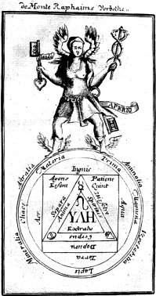
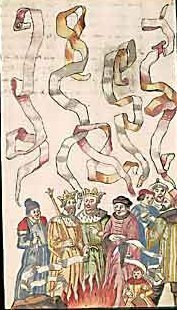

<!DOCTYPE html PUBLIC "-//w3c//dtd html 4.0 transitional//en">
<html lang="fr"><head><meta charset="utf-8">
  
  <meta name="Author" content="Prenom Nom">
  <meta name="GENERATOR" content="Mozilla/4.76 [en] (Win98; U) [Netscape]">
  <title>Turba philosophorum</title>
<link rel="stylesheet" href="../style.css"></head>

<body style="direction: ltr;" background="papier.JPG"><div class="replica-note">Réplique de la page archivée · <a href="../articles/tourbe.html">version lisible</a> · <a href="../plan.html">plan</a></div>
<blockquote>
  <blockquote>
    <center><big style="color: rgb(102, 0, 0);"><big><b><font face="Trebuchet MS"><font size="+2"><big><big>T<span style="color: rgb(153, 51, 0);">U<span style="color: rgb(153, 102, 51);">R</span></span><span style="color: rgb(102, 102, 0);">B<span style="color: rgb(0, 102, 0);">A</span></span>
    <span style="color: rgb(51, 102, 102);">P</span><span style="color: rgb(0, 0, 153);">H</span><span style="color: rgb(51, 51, 153);">I</span><span style="color: rgb(102, 51, 102);">L</span><span style="color: rgb(102, 102, 102);">O</span><span style="color: rgb(153, 0, 0);">S</span><span style="color: rgb(204, 102, 0);">O</span><span style="color: rgb(204, 153, 51);">P</span><span style="color: rgb(153, 153, 0);">H</span><span style="color: rgb(0, 153, 0);">O</span><span style="color: rgb(51, 153, 153);">R</span><span style="color: rgb(0, 102, 0);">U</span><span style="color: rgb(102, 51, 51);">M</span></big></big></font></font></b></big></big>
    <p><big><big><b><font face="Trebuchet MS"><font color="#000099"><font size="-1"><big><big>ou</big></big></font></font></font></b> </big></big></p>
    <p style="color: rgb(153, 51, 0);"><big><big><big><b><font face="Trebuchet MS"><font size="-1"><big><big><big>&nbsp;l'Assemblée
des Disciples de Pythagoras appelée le Code de
Vérité</big></big></big></font></font></b></big></big></big></p>
    <big><big><b><font face="Trebuchet MS"><font size="-1"><big><big></big></big></font></font></b><br>
    <small style="color: rgb(102, 0, 0);"><small><font face="Trebuchet MS"><font size="-1">frontispice de la Turba, in <a style="font-style: italic;" href="#4-_Artis_Auriferae">Artis Auriferae</a><span style="font-style: italic;"> quam chemiam vocant, antiquissimi
authores, sive Turba philosophorum</span>. in-8° Basileae: apud
Petrum Pernam 1572, p. 16<br>
    <br>
    </font></font></small></small><b><font face="Trebuchet MS"><font size="-1"><big></big></font></font></b></big></big>
    <p><a href="../original/textes-divers.html"></a><a href="../original/plan-alchimie.html"></a></p>
    </center>
    <br>
abréviations : BCC = Bibliotheca Chemica Curiosa - T1 = Turba,
première version, BCC 445-465 - T2 = Turba, aliud exemplar, BCC
480-494<br>
&nbsp; <br>
    <p>
    <br>
    <font face="Trebuchet MS"><font color="#000099"><font size="-1">en
cours, le 6 janvier 2007</font></font></font> </p>
    <center>
    <hr width="100%"></center>
    <span style="font-family: verdana;"><span style="color: rgb(102, 0, 0);"><span style="color: rgb(102, 0, 0);"><span style="color: rgb(0, 0, 153);"><font style="color: rgb(102, 0, 0);" face="Trebuchet MS"><font size="-1"><big style="color: rgb(0, 0, 153);"><big><small><small><span style="font-weight: bold; color: rgb(102, 0, 0);">Liste des
idéogrammes et symboles</span> :  Terre -  Feu - 
Eau - 
Air -  Vénus, Lucifer -  Sulphur
[Soufre sublimé ou dissous] -  animus
[Mercurius : Mercure philosophique ou double Mercure, dissolvant des
Sages] -  hexagramme de
Salomon [Eau ignée ou Feu
aqueux] -  Terre fixe -  anima -  anima consurgens
[sublimation de l'animus ou du
Mercurius] -  nitrum - 
sal -  <big><big><span style="font-family: symbol;">ioV</span></big></big>
[chaux métallique] -  stella -  flos -  stibine - 
Sol -  Luna - Taurus [Rebis] - 
arc - 
Arès, Mars, vitriol - 
safran d'alun [chaux de la terre fixe de l'alun] - 
alkali fixe sublimé [Neptune] - 
Lune mercurielle -  Zeus -  Cronos -  nigredo
[Soleil noir] -  adversus-  luna
descrecens [in aurorae tempore] -  Sol Ares
-&nbsp; luna veneris -&nbsp; Sal Amon
-&nbsp; stella cum cruce -&nbsp;  <big><big><span style="font-family: symbol;">ioV
cristou</span></big></big> [chaux
mercurielle] -  aurea stibi -&nbsp;
antimonium [<big><big><span style="font-family: symbol;">antimimon</span></big></big>]
-  vitri oleum -  AZOTH [<big><big><span style="font-family: symbol;">qeioV</span></big></big>] -  animus -  salniter -  translatio [transfert] -  cogitare
[projection] -  albatio -  aes ustum -  sulphur «
azoqué » -</small></small></big></big></font></font></span></span></span></span><font face="Trebuchet MS"><font color="#000099"><b> </b></font></font>
    <hr style="width: 100%; height: 2px;"><font face="Trebuchet MS"><font color="#000099"><b>Introduction</b>
: <small>La <b><i><font size="-1"><small>Tourbe des philosophes</small></font></i></b>
[</small></font><small><i><font color="#660000"><font size="-1"><small>Turba
philosophorum</small></font></font></i></small><font color="#000099"><small>]
est un
traité
arabe du IX<sup>e</sup> siècle ; on le sous-titre
l'assemblée
des disciples de Pythagoras, appelée code de
vérité.
Il apparaît dans plusieurs des collections alchimiques :</small><br>
    <small><br>
    <big><span style="font-family: Helvetica,Arial,sans-serif;">1)-</span></big></small><big><span style="font-family: Helvetica,Arial,sans-serif;"> </span></big><small><a href="../original/bibliot-phil-chim.html#II.">Bibliothèque des
Philosophes Chymiques</a></small><big><span style="font-family: Helvetica,Arial,sans-serif;"><small>,</small> </span></big><small>vol.
II, pp. 1-56</small><span style="font-family: Helvetica,Arial,sans-serif;"> [</span><small>publié
par
G.
Salmon</small><span style="font-family: Helvetica,Arial,sans-serif;">] </span><small>dans
une traduction arrangée et souvent fort
éloignée de « l'original » ;</small><br>
    <span style="font-family: Helvetica,Arial,sans-serif;">2)- </span><a style="font-family: Helvetica,Arial,sans-serif;" href="../original/bibliot-phil-chim.html#Volume_V._">Theatrum Chemicum</a><span style="font-family: Helvetica,Arial,sans-serif;">,
[<small>Zetzner</small>] vol. V</span> </font></font>
    <div style="margin-left: 40px; font-family: Helvetica,Arial,sans-serif;"><small><font color="#000099">1. Turba
Philosophorum. p. 1.</font> <br>
    <font color="#000099">2. In turbam
Philosophorum
Sermo unus anonymi. p. 52.</font> <br>
    <font color="#000099">3. Allegoria
Sapientum,
&amp; Distinctiones XXIX. supra librum Turbæ. p. 57.</font> </small>
    </div>
    <span style="font-family: Helvetica,Arial,sans-serif;">3)- </span><a style="font-family: Helvetica,Arial,sans-serif;" href="../original/bibliot-phil-chim.html#22._Turba_Philosophorum_ex_antiquo">Bibliotheca
Chemica curiosa</a><span style="font-family: Helvetica,Arial,sans-serif;"> [<small>Mangetus</small>],
vol. I</span><br style="font-family: Helvetica,Arial,sans-serif;">
    <div style="margin-left: 40px; font-family: Helvetica,Arial,sans-serif;"><small><font color="#000099">22. Turba
Philosophorum ex antiquo Manuscripto Codice excerpta, qualis nulla
hactenus visa fuerat editio, p. 445.</font><br>
    <font color="#000099">23. In Turbam
Philosophorum
Sermo unus Anonymi, p. 465.</font> <br>
    <font color="#000099">24.
Allegoriæ
Sapientum supra Librum Turbæ Philosophorum XXIX Distinctiones, p.
467.</font> <br>
    <font color="#000099">25. Turbæ
Philosophorum aliud exemplar, p. 480.</font> <br>
    <font color="#000099">26.
Allegoriæ
super librum Turbæ, p. 494.</font> <br>
    <font color="#000099">27. Ænygma
ex visione Arislei Philosophi &amp; Allegoriis Sapientum, p. 495.</font>
    <br>
    <font color="#000099">28.
Exercitationes
in turbam Philosophorum, p. 497.</font></small> </div>
    <font style="font-family: Helvetica,Arial,sans-serif;" face="Arial,Helvetica"><font color="#000099"><a  name="4-_Artis_Auriferae"></a>4)- <a href="../original/bibliot-phil-chim.html#Vol._i">Artis Auriferae</a>, vol. I </font></font>
    <div style="margin-left: 40px; font-family: Helvetica,Arial,sans-serif;"><small><span style="color: rgb(102, 0, 0);"><span style="color: rgb(0, 0, 153);">2.
Turba Philosophorum, p. 1.</span></span><br>
    <span style="color: rgb(102, 0, 0);"><span style="color: rgb(0, 0, 153);">3. Turbae Pliilosophorum alterum
Exemplar, p. 43</span></span><br>
    <span style="color: rgb(102, 0, 0);"><span style="color: rgb(0, 0, 153);">4. Allegoriae super librum Turbae, p.
89.</span></span><br>
    <span style="color: rgb(102, 0, 0);"><span style="color: rgb(0, 0, 153);">5. Aenigmata ex Visione Arislei, p. 94.
&amp; Exercitationes in Turbam,
p. 99. </span></span></small><br>
    <span style="color: rgb(102, 0, 0);"><span style="color: rgb(0, 0, 153);"></span></span></div>
    <span style="color: rgb(102, 0, 0); font-family: Helvetica,Arial,sans-serif;"><span style="color: rgb(0, 0, 153);">5)- <a href="../original/bibliot-phil-chim.html#26._DIVERS_Traitez_de_la_Philosophie">Divers
Traitez</a> de la Philosophie naturelle </span></span>
    <div style="margin-left: 40px;"><small style="font-family: Helvetica,Arial,sans-serif;"><span style="color: rgb(102, 0, 0);"><span style="color: rgb(0, 0, 153);">1.
la Turbe des Philosophes, p.1-97<br>
    <br>
    </span></span></small> <span style="color: rgb(102, 0, 0);"><span style="color: rgb(0, 0, 153);"></span></span></div>
    <span style="color: rgb(102, 0, 0);"><span style="color: rgb(0, 0, 153);"> </span></span><font face="Arial,Helvetica"><font color="#000099"> </font></font><small><font face="Trebuchet MS"><font color="#000099">E.
Canseliet donne une autre référence dans l'<b><i><font size="-1"><small>Oeuvre
alchimique </small></font></i></b>[</font><font color="#660000"><font size="-1"><small>in
: <b><i>Etudes de symbolisme alchimique</i></b>, Pauvert, 1964 :<i> <b>La
turbe des Philosophes qui est appelé [sic] le code de
Vérité
en l'Art. Dans Trois Traitez de la Philosophie naturelle</b></i>, non
encore
imprimez. Paris, Iean Sara, 1618</small></font></font><font color="#000099">].</font></font><font face="Trebuchet MS"><font color="#000099"> On trouve également
ce renseignement sur le site <i><font size="-1"><small><a href="https://web.archive.org/web/20141108011046/http://www.levity.com/alchemy/" target="_blank" rel="noopener">The
alchemic web site</a></small></font></i> : </font><font color="#660000"><font size="-1"><small>2048.
Paris, Bibliothèque Nationale MS. Français 2011. Paper.
17th
Century. 2. <b><i>Le Livre de la tourbe des philosophes qui est
appellé
le Code de verité en l'art d'alkymie</i></b>. </small></font></font><font color="#000099">[</font><font color="#660000"><font size="-1"><small>Turba
Philosophorum</small></font></font><font color="#000099">]</font></font></small>
    <p><small><font face="Trebuchet MS"><font color="#000099">Qui donc
est
l'auteur
de la turba ? <font size="-1"><small><a href="../original/plan-chevreul.html">Eugène
Chevreul</a></small></font> nous dit dans sa critique de <a href="../original/cambriel.html">Cambriel</a>
:</font></font> </small></p>
    <p><small><font face="Trebuchet MS"><font color="#000099">"</font><i><font color="#660033"><font size="-1"><small>Du
XI<sup>e </sup>au XIII<sup>e</sup> siècle on peut citer comme
alchimistes,
chez les Grecs byzantins, Psellus, Blemmidas et Théotonicus. On
croit que <u>Aristaeus</u>, auteur d'un écrit alchimique,
intitulé <b>Turba philosophorum</b>, et Rossinus, auteur de
deux lettres
alchimiques,
vivaient à cette époque.</small></font></font></i><font color="#000099">"</font></font> </small></p>
    <p><small><font face="Trebuchet MS"><font color="#000099"><font size="-1">Voici
des lignes de L. Gérardin [<span style="color: rgb(102, 0, 0);"><small><span style="font-weight: bold; font-style: italic;">l'Alchimie</span></small>,
Belfond, 1972</span>] sur la Turba <small>:</small></font><b><i><font size="-1"><small> </small></font></i></b></font></font></small></p>
    <p><small><font face="Trebuchet MS"><font color="#000099"><b><i><font size="-1"><small>&nbsp;L'Assemblée
des philosophes</small></font></i></b> est une sorte de congrès
d'investigateurs
de la nature qui discutent des principes de base de
l'hermétisme,
et où transparaissent déjà les thèmes
philosophiques
de cette science naturelle par ailleurs si pragmatique : la
création
n'est qu'un symbole de l'union et la métamorphose fait passer la
    <a href="../original/prima-materia.html">prima materia</a> à
l'accomplissement de la Pierre [</font><font color="#660000"><font size="-1"><small>materia
ultima</small></font></font><font color="#000099">]. Il semble
néanmoins
que cet ouvrage, qui apparaît a priori comme totalement
ésotérique,
laisse transparaître, sous une cosmologie présocratique et
des doctrines sur la création conformes au Coran, une chimie
expérimentale
travestie sous un appareil mystique. L'idée de base de la <b><i><font size="-1"><small>Tourbe</small></font></i></b>
est que le processus alchimique est une séparation de la
substance
en corps, en esprit et en âme, c'est-à-dire en substances
fixes et volatiles, qu'il s'agit de purifier et de réunir
ensuite.
Le texte original arabe a disparu, mais il y eut bien traduction, car
il
existe plusieurs versions du texte latin. Il existe un modèle de
la <b><i><font size="-1"><small>Turba</small></font></i></b>,
partiellement
conservé,
le <b><i><font size="-1"><small>Livre de l'assemblée</small></font></i></b>,
qui
pourrait dater du IX<sup>e</sup> ou du X<sup>e</sup> siècle.
Comme
on le verra, neuf philosophes grecs aux noms déformés,
notamment
Pythagore, Anaximène et Empédocle, y échangent
leurs
conceptions de l'univers que l'auteur s'efforça de relier aux
discours
purement alchimiques qui suivent. L'influence de cet ouvrage sur toute
la pensée alchimique latine s'avère décisive : on
le rééditait encore au XVII<sup>e</sup> siècle,
où
il fut traduit en français.</font></font> <font face="Trebuchet MS"><font color="#000099">Il se
présente
comme le compte rendu d'un congrès scientifique. Les
participants
s'appellent Pythagoras, Parménidès, Acsabofen (lisez
Xénophane,
physicien de l'Ionie), Platon, Aristote,&nbsp;<a  name="Morien_1"></a>Morien,
etc. Ils parlent tour à tour, leurs interventions successives
n'ayant
guère de rapport entre elles. Considérations
théoriques
et recettes restent inextricablement enchevêtrés. Certains
passages semblent dénués de sens, témoin cette
déclaration
faite par un personnage étrangement prénommé le
Vicaire:</font></font> </small></p>
    <p><small><font face="Trebuchet MS"><font color="#000099">«</font><i><font color="#990000"><font size="-1"><small>
De plusieurs choses faites 2, 3 et 3, 1 ; 1 avec 3, c'est 4 ; 4, 3, 2,
1 ; de 4 à 3, il y a 1 ; de 3 à 4,il y a 1 ; donc 1 et 1,
3 et 4 ; de 3 à 1, il y a 2 ; de 2 à 3,1 ; de 3 à
2,1 ; 1, 2 et 3 et 1, 2 de 2 et 1, 1 de là 2, 1 donc 1.</small></font></font></i><font color="#000099">»</font></font> </small></p>
    <p><small><font face="Trebuchet MS"><font color="#000099">Et
d'affirmer,
pour
conclure: «</font><font color="#990033"> <i><font size="-1"><small>Je
vous
ai tout dit, enfants de Doctrine</small></font></i></font><font color="#000099">.»</font></font> <font face="Trebuchet MS"><font color="#000099">Mais il faut se
méfier
des traducteurs et des traductions. G. Salmon ne se gêna pas pour
interpréter, couper ce qui le gênait et ajouter ce qu'il
croyait
manquant afin de mettre le vieux texte latin en harmonie avec la
pensée
alchimique du XVII<sup>e</sup> siècle. La</font></font> <font face="Trebuchet MS"><font color="#000099">recette
donnée par Parménidès:</font></font> </small></p>
    <p><small><font face="Trebuchet MS"><font color="#000099">«<i><font size="-1"><small> </small></font></i></font><i><font color="#990033"><font size="-1"><small>Prenez
du vif-argent,
coagulez-le avec le corps de la magnésie, ou avec du kuhul (lire
kohol, ou sulfure d'antimoine), ou avec du soufre non combustible,
rendez-le
tout blanc. Si vous projetez cela sur le cuivre, le cuivre blanchira </small></font></font></i><font color="#000099">»</font></font> </small></p>
    <p><small><font face="Trebuchet MS"><font color="#000099">&nbsp;devient
sous la
plume de l'infidèle traducteur:</font></font> </small></p>
    <p><small><font face="Trebuchet MS"><font color="#000099">« </font><i><font color="#990000"><font size="-1"><small>Prenez
de l'Eau Vive et la congelez en son Corps et en son Soufre qui ne
brûle
point et faites nature blanche et ainsi tout deviendra blanc.</small></font></font></i><font color="#000099">»</font></font> </small></p>
    <p><small><font face="Trebuchet MS"><font color="#000099">On
conviendra de
la
différence ! C'est heureusement une traduction
plus fidèle que nous rapportons plus bas, traduction faite
à partir du texte de la <span style="font-style: italic;">Bibliotheca
chemica curiosa</span>. Parfois, la confusion devient plus grave. Une
recette
de
teinture en pourpre utilisant l'animal que l'on appelle kenkel [</font><font color="#660000"><font size="-1"><small>déformation,
via l'arabe, du grec konkhulion ou murex, ce coquillage fournissant la
pourpre</small></font></font><font color="#000099">], devient le secret
de
préparation
de la pierre philosophale:</font></font> </small></p>
    <p><small><font face="Trebuchet MS"><font color="#000099">«</font><font color="#990033"> <font size="-1"><small><i>Confisez (ce corps),
traduit W.
Salmon, en Urine
d'enfant
et en Eau de Mer, et en Eau nette et permanente » [</i></small></font></font><font size="-1"><small><font color="#330099">le
traducteur précise en note : " Ces trois termes signifient la
même
chose, le Mercure des Philosophes </font><i><font color="#990033">"],
avant
qu'il soit teint, et le cuisez à petit feu jusqu'à ce que
la noirceur apparaisse: car lors il est certain que le Corps est
dissous
et pourri. Et puis, cuisez-le avec humeur jusqu'à ce qu'il
vête
une robe rouge, et toujours cuisez plus jusqu'à ce que vous y
voyez
la couleur serpentine que vous demandez.</font></i></small></font><font color="#000099">»</font></font> </small></p>
    <p><small><font face="Trebuchet MS"><font color="#000099">Il ne
peut
être
question de pierre philosophale dans l'<b><i><font size="-1"><small>Assemblée
des Savants</small></font></i></b>, pour la raison que ce texte vient
directement
des alchimistes alexandrins qui ignorèrent tout du
mystérieux
agent. Il existe de la <b><i><font size="-1"><small>Turba</small></font></i></b>
au
moins
trois versions latines, identiques dans le fond, mais assez
différentes
de forme pour interdire de simples variantes de copistes : il faut y
voir
des traductions différentes d'un même texte arabe,
lui-même
traduit du grec, peut-être via un intermédiaire syriaque.
L'intérêt de cet&nbsp; ouvrage paraît ainsi
très
grand. Les alchimistes latins ne connurent l'héritage des
alchimistes
alexandrins qu'à travers ses sentences.</font></font> </small></p>
    <p><small><font face="Trebuchet MS"><font color="#000099">La
composition
même
du texte - une mosaïque de citations plus ou moins disparates -
paraît
tout à fait dans la tradition byzantine des auteurs de
florilèges.
Les traductions multiples ont déformé les idées,
mais
l'identification reste possible. L'énigme en chiffres
citée
plus haut rappelle un axiome attribué par le Philosophe
Chrétien
à Marie [</font><font color="#660000"><font size="-1"><small>l'inventeur
supposé du bain-marie</small></font></font><font color="#000099">]
:</font></font> </small></p>
    <p><small><font face="Trebuchet MS"><font color="#000099">« </font><i><font size="-1"><small><font color="#990033">Un
devient deux, et deux devient trois et au moyen du
troisième,
le quatrième accomplit l'unité. Ainsi deux ne font plus
qu'un.</font><font color="#000099"> </font></small></font></i><font color="#000099">»</font></font> </small></p>
    <p><small><font face="Trebuchet MS"><font color="#000099">Astanius
(Ostanès
?) reprend l'étrange poésie de Stéphanus :</font></font>
    </small></p>
    <p><small><font face="Trebuchet MS"><font color="#000099">«</font><i><font color="#990000"><font size="-1"><small>
Combats, cuivre ; combats,&nbsp; mercure</small></font></font></i><font color="#000099">
».</font></font> </small></p>
    <p><small><font face="Trebuchet MS"><font color="#000099">Et l'on
pourrait
poursuivre.
Mais, comme le remarqua M. <a href="../original/origine-alchimie.html">Berthelot</a>
:</font></font> </small></p>
    <small><font face="Trebuchet MS"><font color="#000099">«</font><font color="#990033"> <i><font size="-1"><small>les doctrines, qui
étaient
claires et
jusqu'à
un certain point logiques chez les alchimistes grecs ont
été
embrouillées »et confondues par le premier
rédacteur
de la <b>Turba</b> : il paraît avoir joué simplement le
rôle
d'un compilateur ne comprenant pas le fond des choses [...]. Son oeuvre
est une sorte de bouillie de faits et de théories anciennes non
digérées, qu'il commente à la façon d'un
théologien,
ne s'avisant jamais de révoquer en doute les textes sur lesquels
il s'appuie</small></font></i> </font><font color="#000099">».</font></font>
&nbsp; <br>
    <font face="Trebuchet MS"><font color="#000099"><br>
Révérée
par tous, abondamment citée, l'<b><i><font size="-1"><small>Assemblée
des Savants</small></font></i></b> influença fortement
l'alchimie
latine,
mais son obscurité engagea les lecteurs dans des
spéculations
insensées. Elle se proposait pourtant d'élucider les
énigmes
des vieux philosophes</font></font> <font face="Trebuchet MS"><font color="#000099">rassemblés
en
séminaire pour confronter leurs opinions. La séance
inaugurale
fait penser au Traité du <b><i><font size="-1"><small>Secret de
la
Création
des Êtres</small></font></i></b>: les philosophes discutent du
système du
monde ; Anaximandre et Anaxagore exposent la théorie de base:
celle
des Eléments, des Qualités et de leurs relations
réciproques.
Puis Pythagore aborde la description explicative de la création
du monde en se référant aux quatre Eléments. Les</font></font>
    <font face="Trebuchet MS"><font color="#000099">anges furent
créés
de feu ; le Soleil, la Lune et les Etoiles, de feu et d'air ; le Ciel,
d'eau et d'air. Il a fallu trois Eléments pour les êtres
animés
: air, eau et terre. Seul, l'homme exigea la totalité des Quatre
Eléments. Il est intéressant de voir ramener à une
sorte de théorie unitaire l'origine des trois règnes et
même
celle des anges. Toute l'évolution du monde s'explique en termes
de conjonction et de dissociation. Les philosophes assemblés
recherchent
alors les conséquences de leurs théories et en viennent
au
problème de la transmutation. Parménidès le
résume
dans le vieil adage alexandrin :</font></font></small>
    <p><small><font face="Trebuchet MS"><font color="#000099">«</font><font color="#990033"> <i><font size="-1"><small>La nature rejoint la
nature, la
nature contient
la nature,
la nature surmonte la nature </small></font></i></font><font color="#000099">»,</font></font> </small></p>
    <p><small><font face="Trebuchet MS"><font color="#000099">et le
congrès
étudie les façons de teindre en blanc ou en rouge. On
croirait
entendre <a href="../original/add-chevreul-hoefer.html">Zosime</a> quand
Pythagoras
déclare:</font></font> </small></p>
    <p><small><font face="Trebuchet MS"><font color="#000099">«</font><font color="#990033"> <i><font size="-1"><small>Sachez que les chaux
sulfureuses,
les aluns et
le kohol
(sulfure d'antimoine) ne sont rien d'autre que des eaux sulfureuses
(l'eau
divine de l'Alexandrin).</small></font></i></font><font color="#000099">»</font></font>
    </small></p>
    <p><small><font face="Trebuchet MS"><font color="#000099">Les
lecteurs qui
ont
lu les sections se rapportant aux matières ne seront pas
étonnées
de cette sentence de Pythagoras qui ne déguise que peu la
vérité,
puisque les chaux sulfureuses sont effectivement nécessaires
à
l'oeuvre, de même que les aluns ; quant à l'<a href="../original/reincrud.html#Eau">Eau
divine</a> de Zosime, nous avons vu dans la section sur la
réincrudation,
qu'elle voilait probablement le secret de la voie humide.</font></font>
    <font face="Trebuchet MS"><font color="#000099">Puis le
débat
continue, animé, chacun exposant à tour de rôle des
recettes qui reposent toujours sur les transformations des
Qualités
et des Eléments ; elles paraissent venir directement des vieux
auteurs
alexandrins, car on les retrouve dans la <b><i><font size="-1"><small>Collection
des Alchimistes grecs</small></font></i></b>. Une fois de plus,
observons
comment
une traduction peut trahir totalement la pensée originale. Dans
la version non paragraphée de la <b><i><font size="-1"><small>Turba</small></font></i></b>,
Afflictès déclare:</font></font> </small></p>
    <p><small><font face="Trebuchet MS"><font color="#000099">«</font><i><font color="#990033"><font size="-1"><small>
Sachez, Fils de Doctrine, que tout le travail de notre oeuvre n'est
autre
que mêler l'eau avec le corps de la magnésie, les enclore
en un vaisseau bien fermé que l'on chauffe jusqu'à ce que
tout se liquéfie et se transforme en eau</small></font></font></i><font color="#000099">
».</font></font> </small></p>
    <p><small><font face="Trebuchet MS"><font color="#000099">Les
autres
versions
restent très similaires</font></font> </small></p>
    <p><small><font face="Trebuchet MS"><font color="#000099">«<i><font size="-1"><small> </small></font></i></font><i><font size="-1"><small><font color="#990000">BONELLUS
: Je
vais maintenant parler de la magnésie. «
L'ASSEMBLÉE
: Parle</font><font color="#000099">.</font></small></font></i></font> </small></p>
    <p><small><font face="Trebuchet MS"><i><font size="-1"><small><font color="#000099">« </font><font color="#990000">BONELLUS : Tous
les Fils de Doctrine,
ayant
placé la magnésie dans un vaisseau approprié dont
l'orifice a été soigneusement scellé et qui cuit
à
feu doux jusqu'à ce que ce mélange se liquéfie,
font
ainsi que tout se transforme en liquide dans le vaisseau</font><font color="#000099">.</font></small></font></i><font color="#000099">»</font></font>
    </small></p>
    <p><small><font face="Trebuchet MS"><font color="#000099">Sous la
plume de
G.
Salmon, ceci devient:</font></font> </small></p>
    <p><small><font face="Trebuchet MS"><font color="#000099">«</font><i><font color="#990000"><font size="-1"><small>
Mettez l'Homme rouge avec la Femme blanche en une Maison Ronde
environnée
de chaleur latente continuellement, et les y laissez tant que tout soit
converti en Eau, non pas vulgaire, mais philosophique.</small></font></font></i><font color="#000099">»</font></font> </small></p>
    <p><small><font face="Trebuchet MS"><font color="#000099">Certes,
ces
expressions
d'Homme rouge et de Femme blanche suscitent le rêve mieux que les
noms d'eau et de magnésie, mais ne confondons pas le rêve
poétique avec l'alchimie : la différence entre les deux
s'avère
grande. Au passage, on devine sous ces noms d'Afllictès et de
Bonnelius,
les transcriptions déformées d'Apollonius et de Belenous
et le Traité du<i> <b><font size="-1"><small>Secret de la
Création
des Etres</small></font></b></i> de l'alchimie gréco-syriaque.
Ajoutons
quelques détails : dans la <b><i><font size="-1"><small>Turba
philosophorum</small></font></i></b>
se retrouve le nom de l'empereur Heraclius sous la forme erronée
de Hercules. A propos des noms des philosophes de la <b><i><font size="-1"><small>Turba</small></font></i></b>
: Les noms et la tradition directe des Alchimistes grecs ne se
retrouvent
que peu ou point chez les Alchimistes latins, lesquels se rattachent
eux-mêmes
directement aux Arabes. Les noms de ces Grecs ne reparaissent pas d'une
manière explicite et détaillée avant le XV<sup>e</sup>
siècle, époque où les manuscrits grecs se
répandirent
en Occident. Il n'en est que plus intéressant de signaler les
quelques
réminiscences qui s'y rapportent chez les Latins du Moyen
Âge.
Quant aux Arabes, on peut en signaler la filiation immédiate
avec
les Grecs d'après le Kitab-al-Fihrist(z)</font></font> <br>
    <font face="Trebuchet MS"><font color="#000099">Dans la <b><i><font size="-1"><small>Bibliotheca
Chemica</small></font></i></b> de Manget, au tome Il, il existe des
planches
indiquant
la figure des divers philosophes alchimiques, d'après la
tradition
du Moyen Âge : chaque figure est accompagnée par une
sentence,
à peu près comme dans la <i><b><font size="-1"><small>Turba
philosophorum</small></font></b>.</i>
On peut y relever les noms suivants : Hermès,
Cléopâtre,
reine d'Égypte, Anaxagore, Zamolxis, Michel Psellus, Marie
l'Hébreuse,
Démocrite le Grec, Pythagore, Platon, Hercule
(c'est-à-dire
Héraclius), roi sage et philosophe, Stephanus le philosophe
chimique,
Albert le Grand, une multitude d'Arabes,etc. La <b><i><font size="-1"><small>Turba
philosophorum</small></font></i></b> relate de même la plupart de
ces
noms,
mais à ce qu'il semble, à travers une transmission arabe.</font></font>
    <span style="font-family: Helvetica,Arial,sans-serif; color: rgb(0, 0, 153);">Ces
planches appartiennent au </span><small style="font-family: Helvetica,Arial,sans-serif; color: rgb(0, 0, 153);"><span style="font-weight: bold; font-style: italic;">Jardinet
hermético - spagyrique</span><span style="color: rgb(0, 0, 153);">
de Stolcius von
Stolzenberg
qui a paru dans une version en cent six puis cent soixante
médaillons, cf.</span></small><a style="font-family: Helvetica,Arial,sans-serif; color: rgb(0, 0, 153);" href="../original/gravures.html"> gravures</a><span style="font-family: Helvetica,Arial,sans-serif; color: rgb(0, 0, 153);">.</span><br>
    <font face="Trebuchet MS"><font color="#000099">Quel est l'avis des
alchimistes modernes sur la <b><i><font size="-1"><small>Tourbe</small></font></i></b>
?
Fulcanelli cite la <b><i><font size="-1"><small>Turba</small></font></i></b>
dans les <b><i><font size="-1"><small>Demeures
philosophales</small></font></i></b> [</font><font color="#660000"><font size="-1"><small>DM</small></font></font><font color="#000099">],
d'abord t. I, p. 438 :</font></font> </small></p>
    <p><small><font face="Trebuchet MS"><font color="#000099">"</font><i><font color="#990033"><font size="-1"><small>L'un
des manuels alchimiques les plus réputés au Moyen
Âge,
le code de Vérité [...] contient une allégorie
où
plusieurs artistes [...] jouent le drame chimique du Grand Oeuvre</small></font></font></i><font color="#000099">"</font></font> </small></p>
    <p><small><font face="Trebuchet MS"><font color="#000099">C'est
bien notre
avis
; on verra que, même au travers de cette traduction
infidèle,
on perçoit instinctivement que certains artistes parlent du
Mercure
ou du Soufre. Fulcanelli revient sur la Tourbe, dans les <b><i><font size="-1"><small>DM,
II</small></font></i></b>, p. 203 :</font></font> </small></p>
    <p><small><font face="Trebuchet MS"><font color="#000099">"</font><i><font color="#990033"><font size="-1"><small>La
mère [...] est toujours plus pitoyable à l'enfant que
l'enfant
à sa mère</small></font></font></i><font color="#000099">."</font></font>
    </small></p>
    <p><small><font face="Trebuchet MS"><font color="#000099">en un
passage
où
l'alchimiste nous parle de la préparation du Mercure
philosophique,
fils indigne d'un vieillard et d'une très jeune femme. E.
Canseliet
revient sur la <b><i><font size="-1"><small>Tourbe</small></font></i></b>
dans son <b><i><font size="-1"><small>Alchimie
expliquée sur ses Textes classiques</small></font></i></b>, p.
53, en
citant <a href="../original/opuscule-zachaire.html">Denys Zachaire</a> puis p. 206
qui
clôt le chapitre <i><b><font size="-1"><small>Conjonction
et Séparation</small></font></b> </i>quand il écrit :</font></font>
    </small></p>
    <p><small><font face="Trebuchet MS"><font color="#000099">"</font><i><font color="#990000"><font size="-1"><small>C'est
alors qu'est produite cette cendre, à propos de laquelle
Anaxagoras
déclara admirativement, dans la Tourbe latine [...] : Ô
combien
cette cendre est précieuse aux fils de la doctrine, et combien
est
précieux ce qui se fait d'elle !...</small></font></font></i><font color="#000099">"</font></font> </small></p>
    <p><small><font face="Trebuchet MS"><font color="#000099">Dans ses <b><i><font size="-1"><small>Deux
Logis alchimiques</small></font></i></b> [</font><font color="#660000"><font size="-1"><small>Pauvert,
1979</small></font></font><font color="#000099">], p. 202, E. Canseliet
nous
parle
d'un autre exemplaire de la <i>Tourbe</i> en citant :</font></font> </small></p>
    <p><small><font face="Trebuchet MS"><font color="#000099">"</font><i><font color="#990000"><font size="-1"><small>Il
est évident que la Nature se réjouit de la Nature, et que
la Nature maintient la Nature, et que la Nature vainc la Nature, et
qu'elle
domine. Par cette sentence, tout l'Oeuvre est
pénétré.</small></font></font></i><font color="#000099">"</font></font> </small></p>
    <p><small><font face="Trebuchet MS"><font color="#000099">quand il
évoque
le caisson de l'<b><i><font size="-1"><small>Ourse et des deux singes</small></font></i></b>
du château du Plessis-Bourré.</font></font> <span style="font-family: Helvetica,Arial,sans-serif; color: rgb(0, 0, 153);">Marcellin
Berthelot a
consacré deux articles sur la Turba et les écrits
satellites que nous avons commentés dans l'</span><a style="font-family: Helvetica,Arial,sans-serif; color: rgb(0, 0, 153);" href="../original/idee-alchimique-2.html">idée alchimique, II</a><span style="font-family: Helvetica,Arial,sans-serif; color: rgb(0, 0, 153);">.
Berthelot a un jugement très péjoratif sur le contenu de
la Turba, en ce sens qu'il s'agit de citations de textes
antérieurs, sans qu'on puisse déceler la moindre trace de
raison ou de forme. </span></small></p>
    <p><small><span style="font-family: Helvetica,Arial,sans-serif; color: rgb(0, 0, 153);">Comme
L. Gérardin le dit plus haut, de nombreux
pseudo philosophes sont conviés à cette folle
assemblée dont voici la liste, établie par John Ferguson [<small style="color: rgb(102, 0, 0);">Bibliotheca chemica, t. II</small>]
sur la base du texte de la </span><small><a href="https://web.archive.org/web/20141108011046/http://alfama.sim.ucm.es/dioscorides/consulta_libro.asp?ref=X532981935&amp;idioma=0" target="_blank" rel="noopener"><span style="font-style: italic; font-family: Helvetica,Arial,sans-serif; color: rgb(0, 0, 153);">BCC</span></a><span style="font-family: Helvetica,Arial,sans-serif; color: rgb(0, 0, 153);">
, T2 [<span style="font-weight: bold; color: rgb(102, 0, 0);">ne
disposant que de la T1 en français, nous avons
procédé à des interpolations</span> <span style="font-weight: bold; color: rgb(102, 0, 0);">indispensables pour
l'ordre de présentation des acteurs</span>]</span></small> </small></p>
    <center>
    <p style="text-align: left;"><small><font face="Trebuchet MS"><font color="#000099"><font size="-1">Aaron cum Maria Prophetissa
sorore Moysis, pp. 477. 478. <br>
Acratus, p. 461. <br>
Acsubofes, p. 449. <a href="#Acsubofen">XIV</a><br>
Actomanus, p. 489. <br>
Adami patris nostri mentio, p. 447.<br>
Abelis &amp; Sethi filiorum, p. 478. <br>
Admion, p. 488.<br>
Dicta AEgyptiorum nos in errorem introducunt. p, 487. <br>
Afflontus, p. 456. <br>
Agadimon, pp. 463, 493.<br>
(Agathodaemon) Agadmon, p. 487.<br>
Agmon, p. 494.<br>
Anastratus, p. 493. Astratus, p. 491. <br>
Anaxagoras, pp. 446, 461, 480,491. <a href="#Anaxagoras">III</a> -<br>
Archelaus, p. 494. <br>
Ardarius, p. 484. <br>
Arisleus Philosophus, pp. 446, 447, 448, 480. <a href="#Arisleus">V</a>
- <a href="#Arisleus_2">VI</a> - <a href="#Arisleus_3">VII</a> - <a href="#Arisleus_4">X</a> -<br>
Abladi filius, p. 495.<br>
ex ejus visione aenigma, ibid. <br>
Arislei Epistola de intentione Iibri, p. 445.<br>
Aris eus genitus Pythagoras, discipulus ex discipulis Hermetis, ibid. <br>
Aristenes, p. 481.<br>
Armenius Archiae filius, p. 495. <br>
Arras,p. 460. <br>
Arzoch, p. 491.<br>
Ascanius, p. 489. Astanius, p. 458. <br>
Assotes, p. 487. <br>
Assuberes, p. 483.<br>
Astanius, p. 459, Ascanius, p. 489. <br>
Astratus, p. 491. Anastratus, p. 492.<br>
Attamus, p. 458, 464. Attamanus, p. 493. <br>
Averca. p. 495. </font></font></font></small></p>
    <p style="text-align: left;"><small><font face="Trebuchet MS"><font color="#000099"><font size="-1">Babylonienses Philosophi, pp.
446, 493.<br>
Bacoscus, p. 453.<br>
Bacsen, pp. 454, 455, 457, Bassen, p. 486.<br>
Balgus, pp. 461,462, 492.<br>
Barsenites, p. 487.<br>
Belinus, p. 478.<br>
Bellus, pp. 484, 485, 490.<br>
Belus. pp. 451, 453, 459.<br>
Bodillus, p. 492.<br>
Bonellus, pp. 454, 456, 461, 462, 488.<br>
Bonites, p. 463.<br>
Borates, p. 485.<br>
Bracus, p. 464.<br>
    <br>
Cadmon, p. 489. <br>
Cerus, p. 453. <br>
Chambar, p. 486, <br>
Constans, pp. 461, 491. <br>
Cranses, p. 488. <br>
Custos, pp. 454. 486.<br>
    <br>
Dardaris, pp. 451, 458, 484, 489. <br>
Democritus <a href="#Lucas">Lucae</a> discipulus, p.446. Medicus,
475.seq. <a href="#Democritus">VI</a> -<br>
Diamedes, pp. 454, 486, <br>
Antiqui Doctores, p. 493.<br>
    <br>
Echamisius, p. 495,<br>
Eelihe, p. 471.<br>
Effistus, p. 457. Epistes, p. 488.<br>
Emiganus, p. 493.<br>
    <br>
Epistea, p. 488. Effistus, p. 457.<br>
    <br>
Exemiganus, p. 463.<br>
    <br>
Eximenus, pp. 447, 481. <a href="#Discours_neuvi%C3%A8me">IX</a> -
Exumecus, p. 460.<br>
    <br>
Eximundus, p. 480, <br>
Eximeslas Admiri filius, p. 495. <br>
Exundrus, p. 446. <a href="#Exundras">II</a> -<br>
    <br>
Florus, pp. 464, 493-<br>
Frictes. pp. 450, 483. <a href="#Frictes">XV</a> -<br>
    <br>
Geber, p. 472. <br>
Gregorius, p. 453.<br>
    <br>
Hercules Rex [leg. Heraclius Rex Stephano Alexandrino] Stephano
Alexandro: cum tempore nostro Philosophorum caput sis, p. 472. <br>
Hermes, pp. 445, 456, 460, 467, 470, 478, 480, 488. Philosophorum
caput, p. 488. <br>
Hermiganus, p. 463. <br>
Horfolcos, pp. 459, 463.<br>
    <br>
Iximidrus, p. 445. <a href="#Iximidrus">I</a> -<br>
Ixundrus, p. 460.<br>
    <br>
Largus, p. 488. <br>
Locustor, pp. 446, 481, <a href="#Discours_septi%C3%A8me">VII</a> -<br>
Lucas, pp. 446, 449, 463, 481. <a href="#Lucas">VI</a> - <a href="#Lucas">XII</a> -<br>
    <br>
Magister, vide Pythagoras.<br>
Magister dixit, qui laborat in libris nostris legendis, eisque vacat,
nec variis Implicitus est cogitationibus, Deumque precatur. In regno
regnabit, donec morietur, p. 488.<br>
Mandinus, p. 493.<br>
Maria, p. 457. soror Moysis, pp. 477, 478. <br>
Maria mira sonat breviter, quod talia donat &amp;c. Filia Platonis
consortia jungit amoris, p. 478.<br>
Meditantalus, p. 495.<br>
Menabdus, p. 453. Menebdus, p. 485.<br>
Montenus, p. 469.<br>
Morfoleus, p. 490.<br>
Moyses. pp.454, 458, 462, 469. Mosiius, p.489. <br>
Moscus, p. 492.<br>
Mundus ait Turbae, pp. 451, 459, 463, 464, 484, 489, 492.<br>
Nephitus, p. 486. <br>
Nicarus, p. 455.<br>
    <br>
Obsemeganus, p. 491. <br>
Orfulus, p. 493.<br>
    <br>
Pandolfus. pp. 446, 452, 459. </font></font></font><font face="Trebuchet MS"><font color="#000099"><font size="-1"><a href="../original/tourbe.html#Discours_quatri%C3%A8me">IV</a></font></font></font><br>
    <font face="Trebuchet MS"><font color="#000099"><font size="-1">Pandophis,
p. 480.<br>
Pandulphus, pp. 484, 490.&nbsp; -<br>
Paris, Belchioti filius, p. 495.<br>
Parmenides, pp. 446, 448, 482, 495. <a href="#Parmenides">V</a> - <a href="#Discours_onzi%C3%A8me">XI</a> -<br>
Phalisaeus, p. 495.<br>
Philosophus, pp. 463, 464. Vide Arisleus,<br>
Philosophi in libris suis, p. 484. cum legimus in libris Philosophorum,
489. legendi sum libri Philosophorum, p. 493. Veri Philosophi, p. 488.<br>
Philotis, p, 494.<br>
Pithem, p. 491.<br>
Plato, pp. 458, 473, 475, 489.<br>
Pythagoras, pp. 447, 440, 450, 451, 454, 459, 461, 463, 472, 480, 481,
490, 495. <a href="#Discours_septi%C3%A8me">VII</a> - <a href="#Pythagoras">VIII</a> - <a href="#Discours_treizi%C3%A8me">XIII</a>
- <a href="#Pythagoras_3">XIV</a> - <a href="#Pythagoras_4">XV</a> - <br>
Magister et vatum caput, tantum domum DEI, &amp; sapientiae
habuit, quod nemini post Hermetem datum est, p. 445. </font></font></font></small></p>
    <p style="text-align: left;"><small><font face="Trebuchet MS"><font color="#000099"><font size="-1">Tertia Synodus Pytbagorica, p,
480.<br>
    <br>
Rarson, p. 493.<br>
    <br>
Salomon, filius David, p. 472. in libris [LXX. | meis quos sum
expositurus ibid. Quidam Sapiens, p. 473. <br>
Socrates, pp. 450, 483. ad Platoneni, pp.473, <a href="#Socrates">XVI</a>
-<br>
Stephaout, p. 472. vide supra, Hercules, <br>
Stephani dicta, p. 479,<br>
    <br>
Theophilus, pp. 452, 462, 485, 492, <br>
Ait Turba, pp. 446, 447, 451, &amp;c, respondet <br>
Turba, pp. 447, 449,. 482, 483. &amp;c. Qui nobiscum in hac arte hunc
librum cornposuerunt, qui Turba dicitur [Philosophi cum sint], non
debent vocari discipuli, p.451. Notandum est, venerabilis turba,. p.
486.<br>
    <br>
Ysimidrus, p. 490. <br>
Ysindrus, p. 480.<br>
    <br>
Zenon, pp. 453, 461, 484, 486.<br>
Zeunon, p. 487.<br>
Zimon, pp. 451, 455, 457. </font></font></font></small></p>
    <p style="text-align: left;"><small><font face="Trebuchet MS"><font color="#000099"><font size="-1">On connaît deux versions
complètes de la <span style="font-weight: bold;">Turba</span>,
l'une en soixante douze chapitres et l'autre en soixante dix huit
chapitres. Il semble que la seconde soit un peu moins corrompue que la
première [<small style="color: rgb(102, 0, 0);">voir infra, par
exemple, sur le mot <a href="#gadenbe">gadenbe</a> de la sentence XII]</small>.
Certains chapitres sont complètement incompréhensibles
dans la première version de la <span style="font-weight: bold;">Turba</span>,
donnée dans la BCC. Aussi, avons-nous été
obligés de traduire certains passages d'après la seconde
version. </font></font></font></small></p>
    <p style="text-align: left;"><font face="Trebuchet MS"><font color="#000099"><font size="-1"><big><small><span style="color: rgb(102, 0, 0);">Thèmes abordés dans les
72 sermones</span> : <a href="#Discours_premier_">I</a> Feu - <a href="#Discours_deuxi%C3%A8me">II</a> Air - <a href="#Discours_troisi%C3%A8me">III</a> ronde des éléments
- <a href="#Discours_quatri%C3%A8me">IV</a> oeuf cosmique - <a href="#Discours_cinqui%C3%A8me">V</a>&nbsp; Aurore - <a href="#Discours_sixi%C3%A8me">VI</a>&nbsp; quatre natures - <a href="#Discours_septi%C3%A8me">VII</a>&nbsp; sens et raison - <a href="#Discours_huiti%C3%A8me">VIII</a>&nbsp; clef de l'oeuvre - <a href="#Discours_neuvi%C3%A8me">IX</a>&nbsp; airain - <a href="#Discours_dixi%C3%A8me">X</a>&nbsp; Ethelia - <a href="#Discours_onzi%C3%A8me">XI</a> albedo, kuhul []
- <a href="#Discours_douzi%C3%A8me">XII</a> cuisson du soufre, anima - <a href="#Discours_treizi%C3%A8me">XIII</a> cendres, blancheur - <a href="#Discours_quatorzi%C3%A8me">XIV</a> pourpre&nbsp; - kenkel - <a href="#Discours_quinzieme">XV</a>
albedo, rubeus - XVI&nbsp;</small> </big> </font></font></font></p>
    <hr width="100%"><br>
    <big style="font-family: Helvetica,Arial,sans-serif; color: rgb(0, 0, 153);"><big><big><span style="font-weight: bold;">L'ASSEMBLÉE
DES
PHILOSOPHES</span></big></big></big><br style="font-family: Helvetica,Arial,sans-serif; color: rgb(0, 0, 153);">
    <br style="font-family: Helvetica,Arial,sans-serif; color: rgb(0, 0, 153);">
    <div style="text-align: left;"><span style="font-family: Helvetica,Arial,sans-serif; color: rgb(0, 0, 153);">Voici
l'épître
d'Arisleus qui, suivant le but de ce livre, s'adresse à
ceux qui viendront dans l'avenir pour les instruire par les paroles des
Sages.</span><br style="font-family: Helvetica,Arial,sans-serif; color: rgb(0, 0, 153);">
    <br style="font-family: Helvetica,Arial,sans-serif; color: rgb(0, 0, 153);">
    <a style="font-family: Helvetica,Arial,sans-serif; color: rgb(0, 0, 153);"  name="Arisleus"></a><span style="font-family: Helvetica,Arial,sans-serif; color: rgb(0, 0, 153);">Arisleus,
fils de Pythagoras, disciple parmi
les disciples, connaissant
par la grâce d'Hermès la science triple [</span><small style="color: rgb(102, 0, 0);"><small style="font-family: Helvetica,Arial,sans-serif;"><span style="font-weight: bold;">Sel, Mercure&nbsp;
et Soufre , ce qui peut
s'entendre encore comme pierre animale, végétale et
minérale</span></small></small><span style="font-family: Helvetica,Arial,sans-serif; color: rgb(0, 0, 153);">],
à ceux qui
viendront plus
tard et à ceux qui sont encore, salut et miséricorde. Je
dis que le Maître, la tête des prophètes, a
reçu de Dieu plus de
dons et de connaissances qu'il n'en a été donné
à personne depuis
Hermès. Nombreux sont devenus ses disciples répartis dans
toutes les
régions importantes. Il a voulu les rassembler pour traiter de
cet art
précieux, afin que leurs paroles soient la racine du savoir
futur. Iximedrus étant du meilleur conseil, il ordonna qu'il
prît
en premier la parole. Ce philosophe commence ainsi :</span><br style="font-family: Helvetica,Arial,sans-serif; color: rgb(0, 0, 153);">
    <br style="font-family: Helvetica,Arial,sans-serif; color: rgb(0, 0, 153);">
    <span style="font-weight: bold; font-family: Helvetica,Arial,sans-serif; color: rgb(0, 0, 153);"><a  name="Discours_premier_"></a>Discours
premier</span><br style="font-weight: bold; font-family: Helvetica,Arial,sans-serif; color: rgb(0, 0, 153);">
    <br style="font-family: Helvetica,Arial,sans-serif; color: rgb(0, 0, 153);">
    <a style="font-family: Helvetica,Arial,sans-serif; color: rgb(0, 0, 153);"  name="Iximidrus"></a><span style="font-family: Helvetica,Arial,sans-serif; color: rgb(0, 0, 153);">Iximidrus
: « J'affirme que le
début de tout est la nature,
et qu'elle
se perpétue, s'égalise et s'adapte à toutes
choses. Quand on regarde
les natures et la naissance des choses, ont voit que leur corruption
survient aux temps de leurs termes; elles sont alors reconnues et
nommées. Je vous apprendrai aussi que les étoiles sont
ignées et
maintenues dans les airs et que, sans l'humidité et la
condensation de
l'air qui séparent les flammes du soleil des créatures,
celui-ci
brûlerait toute vie. Dieu organise la séparation par
l'air pour ne pas
brûler ce qu'il avait créé sur terre. Ne voyez-vous
pas comme le soleil
montant dans le ciel vainc l'air par la chaleur ? Par cet
échauffement, la chaleur parvient jusqu'à l'air
placé au-dessus. Et si
l'air ne soufflait pas grâce aux esprits dont les
créatures sont
engendrées, le soleil détruirait toute vie par la
chaleur. Mais cette
vie est contenue dans l'air et donc l'air l'emporte en excellence, car
cette chaleur est jointe à sa chaleur, et son humidité
est jointe à
l'humidité de l'eau. Ne voyez-vous pas l'eau
légère monter en l'air par
la chaleur du soleil qui survient ? Cette chaleur aide l'eau contre la
chaleur.</span><br style="font-family: Helvetica,Arial,sans-serif; color: rgb(0, 0, 153);">
    <br style="font-family: Helvetica,Arial,sans-serif; color: rgb(0, 0, 153);">
    <span style="font-family: Helvetica,Arial,sans-serif; color: rgb(0, 0, 153);">Et
si l'eau ne nourrissait les airs par le moyen de son humeur
ténue, à
coup sûr le soleil vaincrait les airs. Donc le feu dégage
l'humeur de
l'eau grâce à laquelle l'air surmonte le feu
lui-même. Par conséquent,
le feu et l'eau sont des ennemis entre lesquels il n'existe aucune
possibilité de conjonction. Car le feu est chaud et sec, tandis
que
l'eau est froide et humide. Mais l'air pour être chaud et humide
les
conjoint naturellement et les met d'accord par l'humidité de
l'eau et
par la chaleur du feu. Et ainsi il a été fait entre eux
comme une sorte
de moyen de concordance féconde. Vous tous, considérez
que l'esprit fut
fait de la subtile vapeur de l'air, d'autant plus que la chaleur jointe
à l'humeur fait sortir la subtile substance dont est issu le
vent ; il
ne peut en être autrement que la chaleur du soleil, ayant extrait
de
l'air cette subtilité, n'en fasse l'esprit et la vie dans toutes
les
créatures. [</span><small style="color: rgb(102, 0, 0);"><small style="font-family: Helvetica,Arial,sans-serif;"><span style="font-weight: bold;">l'AIR&nbsp; est envisagé
comme médiateur entre l'EAU&nbsp; et le FEU&nbsp; ou comme substance moyenne. C'est une variation sur le
thème du mercurius&nbsp;
considéré comme agent de liaison entre les deux
extrémités du vaisseau de nature que sont le soleil 
et la lune </span></small><span style="font-family: Helvetica,Arial,sans-serif;">. </span><small style="font-family: Helvetica,Arial,sans-serif;"><span style="font-weight: bold;">On
doit voir dans la croix <big><big><big>  </big></big></big> le vecteur
qui permet cette union et surtout, cette intervention de l'AIR comme
tiers agent</span></small></small><span style="font-family: Helvetica,Arial,sans-serif; color: rgb(0, 0, 153);">]</span><br style="font-family: Helvetica,Arial,sans-serif; color: rgb(0, 0, 153);">
    <br style="font-family: Helvetica,Arial,sans-serif; color: rgb(0, 0, 153);">
    <span style="font-family: Helvetica,Arial,sans-serif; color: rgb(0, 0, 153);">Tout
ceci est par la disposition divine ; il en est de même pour
les
éclairs provoqués par la chaleur du soleil sortant du
nuage. L'éclair
apparaît quand le nuage se lève ».</span><br style="font-family: Helvetica,Arial,sans-serif; color: rgb(0, 0, 153);">
    <br style="font-family: Helvetica,Arial,sans-serif; color: rgb(0, 0, 153);">
    <span style="text-decoration: underline; font-family: Helvetica,Arial,sans-serif; color: rgb(0, 0, 153);">L'assemblée
dit</span><span style="font-family: Helvetica,Arial,sans-serif; color: rgb(0, 0, 153);">
: « Tu as bien traité du feu selon
ce que tu sais et, par ton discours, tu as ouvert ton âme
à ton frère ».</span><br style="font-family: Helvetica,Arial,sans-serif; color: rgb(0, 0, 153);">
    <br style="font-family: Helvetica,Arial,sans-serif; color: rgb(0, 0, 153);">
    <span style="font-weight: bold; font-family: Helvetica,Arial,sans-serif; color: rgb(0, 0, 153);"><a  name="Discours_deuxième"></a>Discours
deuxième</span><br style="font-family: Helvetica,Arial,sans-serif; color: rgb(0, 0, 153);">
    <br style="font-family: Helvetica,Arial,sans-serif; color: rgb(0, 0, 153);">
    <a style="font-family: Helvetica,Arial,sans-serif; color: rgb(0, 0, 153);"  name="Exundras"></a><span style="font-family: Helvetica,Arial,sans-serif; color: rgb(0, 0, 153);">Exundras:
« Je loue l'air et je
l'honore en accord avec le
discours
d'Iximedrus, d'autant que, par lui, l'Suvre est accompli et
condensé,
il dilate, il échauffe, il rafraîchit. Il se condense
quand il est
séparé dans le ciel par l élongation du soleil. Au
contraire, il se
raréfie lorsque, dans le ciel, le soleil exalté le
chauffe et le
dilate. De même, une complexion équilibrée
apparaît dans les temps qui
ne sont ni chauds ni froids. Car, suivant le changement de la
règle
constitutive de la disposition, les diverses transformations se
produisent. L'hiver, l'air est donc condensé lorsque le soleil
s'en
éloigne, et alors le froid est ressenti par les hommes. Tandis
que
l'air se dilatant, la chaleur nous parvient ». </span><span style="text-decoration: underline; font-family: Helvetica,Arial,sans-serif; color: rgb(0, 0, 153);">L'assemblée
dit</span><span style="font-family: Helvetica,Arial,sans-serif; color: rgb(0, 0, 153);">
:
« Tu as très bien disserté
sur les airs et ce que tu connais d'eux, tu l'as expliqué
».</span><br style="font-family: Helvetica,Arial,sans-serif; color: rgb(0, 0, 153);">
    <br style="font-family: Helvetica,Arial,sans-serif; color: rgb(0, 0, 153);">
    <span style="font-weight: bold; font-family: Helvetica,Arial,sans-serif; color: rgb(0, 0, 153);"><a  name="Discours_troisième"></a>Discours
troisième</span><br style="font-family: Helvetica,Arial,sans-serif; color: rgb(0, 0, 153);">
    <br style="font-family: Helvetica,Arial,sans-serif; color: rgb(0, 0, 153);">
    <a style="font-family: Helvetica,Arial,sans-serif; color: rgb(0, 0, 153);"  name="Anaxagoras"></a><span style="font-family: Helvetica,Arial,sans-serif; color: rgb(0, 0, 153);">Anaxagoras:
« J'affirme que le
principe de tout ce que Dieu a
créé est
la bonté (ou la justice divine) et la raison, parce que la
bonté modère
et régit toutes choses et parce que, dans la raison, la
bonté est
manifeste. Même dans l'épaisseur de la terre, on voit la
bonté (ou la
justice divine) et on ne le voit que dans les corps. Et sachez, vous
tous de cette assemblée, que la partie condensée des
quatre éléments
repose dans la terre. En effet, le feu étant condensé
tombe dans l'air.
Ce qui se condense de l'air, rassemblé avec ce qui
s'était condensé du
feu, tombe dans l'eau. Ce qui se condense de l'eau, avec ce qui
s'était
condensé du feu et de l'air, se rassemble et repose dans la
terre. [</span><small style="color: rgb(102, 0, 0);"><small style="font-family: Helvetica,Arial,sans-serif;"><span style="font-weight: bold;">système de la ronde des
éléments, selon Platon, cf. <a href="../original/idee-alchimique-5.html">idée alchimique, V</a></span></small></small><span style="font-family: Helvetica,Arial,sans-serif; color: rgb(0, 0, 153);">]
Ne
voyez-vous pas que la condensation des quatre éléments
est conjointe
dans la terre ? Celle-ci est par conséquent
l'élément le plus condensé
de tous. Lequel donc, des quatre éléments, est le plus
raréfié, et le
plus digne d'être regardé comme le plus rare des quatre ? </span><span style="text-decoration: underline; font-family: Helvetica,Arial,sans-serif; color: rgb(0, 0, 153);">Il
dit</span><span style="font-family: Helvetica,Arial,sans-serif; color: rgb(0, 0, 153);">
: «
Le
feu est le plus raréfié des quatre, et c'est au feu que
parvient la
partie raréfiée de ces quatre éléments.
L'air est moins raréfié que le
feu, car il est chaud et humide, tandis que le feu est chaud et sec et,
de fait, le chaud et sec est plus raréfié que le chaud et
humide ». Ils
lui dirent : « Qu'est-ce qui est de moindre raréfaction
que l'air ? »
II répondit: « L'eau, parce qu'en elle se trouvent la
froideur et
l'humidité, et toute chose froide et humide est de moindre
raréfaction
que si elle est chaude et humide ». [</span><small style="color: rgb(102, 0, 0);"><small style="font-family: Helvetica,Arial,sans-serif;"><span style="font-weight: bold;">allusion
à l'aqua permanens, eau ignée ou feu aqueux dont la
manifestation est la plus étendue dans l'oeuvre</span></small></small><span style="font-family: Helvetica,Arial,sans-serif; color: rgb(0, 0, 153);">]
    </span><span style="text-decoration: underline; font-family: Helvetica,Arial,sans-serif; color: rgb(0, 0, 153);">Ils
lui dirent</span><span style="font-family: Helvetica,Arial,sans-serif; color: rgb(0, 0, 153);">:
«Tu
as
parlé avec
vérité. Qu'est-ce donc qui est de moindre
raréfaction que l'eau ? » II
dit : « La terre, parce qu'elle est froide et sèche, et le
froid et sec
est de moindre raréfaction que le froid et humide, et de
même que le
sec et chaud est plus raréfié que le chaud et humide, de
même aussi le
froid sec est de moindre raréfaction que le froid humide. Je
vous ai
bien montré, ô fils de la doctrine, la description des
natures de ces
quatre éléments, à partir desquels Dieu a
créé toutes choses.
Bienheureux donc est celui qui comprend ces choses qui vous sont
exposées, car il trouve dans ce chef-d'Suvre du monde bien plus
de
choses qu'il ne s'en était proposé pour objet. Je
souhaite que vous
entendiez donc totalement notre discours ». </span><span style="text-decoration: underline; font-family: Helvetica,Arial,sans-serif; color: rgb(0, 0, 153);">Ils
dirent</span><span style="font-family: Helvetica,Arial,sans-serif; color: rgb(0, 0, 153);">
: «
Oui, nous
voulons conserver ce discours. Pandolfus, tu as la parole ».</span><br style="font-family: Helvetica,Arial,sans-serif; color: rgb(0, 0, 153);">
    <br style="font-family: Helvetica,Arial,sans-serif; color: rgb(0, 0, 153);">
    <span style="font-weight: bold; font-family: Helvetica,Arial,sans-serif; color: rgb(0, 0, 153);"><a  name="Discours_quatrième"></a>Discours
quatrième</span><br style="font-family: Helvetica,Arial,sans-serif; color: rgb(0, 0, 153);">
    <br style="font-family: Helvetica,Arial,sans-serif; color: rgb(0, 0, 153);">
    <a style="font-family: Helvetica,Arial,sans-serif; color: rgb(0, 0, 153);"  name="Pandolfus"></a><span style="font-family: Helvetica,Arial,sans-serif; color: rgb(0, 0, 153);">Pandolfus
dit alors : « J'annonce
à ceux qui viendront que
l'air est le
subtil de l'eau et qu'il n'est pas séparé de celle-ci,
que si la terre
n'était pas sur l'eau humide, il ne resterait pas » [</span><small style="color: rgb(102, 0, 0);"><small style="font-family: Helvetica,Arial,sans-serif;"><span style="font-weight: bold;">l'AIR
est ce milieu intermédiaire où FEU et EAU conjuguent
leurs effets en y laissant la TERRE&nbsp; suspendue et en
circulation</span></small><span style="font-family: Helvetica,Arial,sans-serif;">. </span></small><small style="font-family: Helvetica,Arial,sans-serif; color: rgb(0, 0, 153);"><span style="font-weight: bold;"><small style="color: rgb(102, 0, 0);">Comprenez
que la TERRE est ce qui reste de
l'EAU quand le FEU y a imprimé son effet</small> </span></small><span style="font-family: Helvetica,Arial,sans-serif; color: rgb(0, 0, 153);">].
    </span><span style="text-decoration: underline; font-family: Helvetica,Arial,sans-serif; color: rgb(0, 0, 153);">Ils
répondirent</span><span style="font-family: Helvetica,Arial,sans-serif; color: rgb(0, 0, 153);">
:
« Tu as bien parlé. Va au bout de ton discours ». </span><span style="text-decoration: underline; font-family: Helvetica,Arial,sans-serif; color: rgb(0, 0, 153);">Et
lui</span><span style="font-family: Helvetica,Arial,sans-serif; color: rgb(0, 0, 153);">
: « J'ajoute
que l'air caché dans l'eau qui est sous la terre supporte cette
dernière afin qu'elle ne soit submergée dans l'eau qui
est dessous, et
il empêche que la terre ne soit humectée par l'eau. L'air,
dis-je, est
liant et apte à séparer les opposés,
c'est-à-dire l'eau et la terre, en
fin d'amener entre les adversaires, eau et feu, l'accord et de les
séparer, pour qu'ils ne se détruisent pas mutuellement
». [</span><small style="color: rgb(102, 0, 0);"><small style="font-family: Helvetica,Arial,sans-serif;"><span style="font-weight: bold;">l'AIR sert d'intercesseur : c'est le
Vicaire ainsi qu'il sera dit plus tard, cf. <a href="#" title="lien mort dans l'archive">Clef
VI</a> des Douze Clefs de Basile Valentin</span></small></small><span style="font-family: Helvetica,Arial,sans-serif; color: rgb(0, 0, 153);">]
    </span><span style="text-decoration: underline; font-family: Helvetica,Arial,sans-serif; color: rgb(0, 0, 153);">L'assemblée
demanda</span><span style="font-family: Helvetica,Arial,sans-serif; color: rgb(0, 0, 153);">
: « Si tu nous en donnais un exemple, tu rendrais
la
chose
évidente pour ceux qui ne sont pas éclairés
». </span><span style="text-decoration: underline; font-family: Helvetica,Arial,sans-serif; color: rgb(0, 0, 153);">Il
répondit</span><span style="font-family: Helvetica,Arial,sans-serif; color: rgb(0, 0, 153);">
: « Je le
ferai volontiers. L'exemple est l'Suf, en qui quatre choses sont
conjointes; la coquille est la terre, le blanc est l'eau, la membrane
très fine contre la coquille sépare la terre de l'eau et
le jaune de
l'Suf est le feu. La membrane qui enveloppe le jaune est l'air qui,
ici, sépare l'eau du feu. L'un et l'autre sont un seul et
même air.
L'air qui sépare l'un de l'autre les éléments
froids, c'est-à-dire la
terre et l'eau, est plus condensé que l'air noble. L'air noble,
en
effet, est plus raréfié et plus subtil, car il est plus
proche du feu
que ne l'est l'air inférieur. Donc, dans l'Suf, on rencontre
quatre
éléments : la terre, l'eau, l'air et le feu. En outre,
de ces quatre,
au milieu du jaune est le point du soleil qui est le poulet. C'est
pourquoi tous les philosophes en cet art suprême
utilisèrent l'exemple
de l'Suf lorsqu'ils exposèrent leur Suvre ». [</span><small style="color: rgb(102, 0, 0);"><small style="font-family: Helvetica,Arial,sans-serif;"><span style="font-weight: bold;">allégorie
classique correspondant à l'oeuf philosophal, reprise par John
Dee dans sa <a href="../original/monade-dee.html"><span style="font-style: italic;">Monade
Hiéroglyphique</span></a>. La coquille de l'oeuf est faite de
calcaire dans lequel il faut voir la mérelle de Compostelle,
qu'il faut lire par cabale l'étoile du compost. Le blanc est
équivalent au Mercure, c'est-à-dire au milieu nutritif de
l'hermaphrodite ; il s'agit du jaune, partie centrale et point fixe,
qualifié de poulet d'Hermogène dans les textes</span></small></small><span style="font-family: Helvetica,Arial,sans-serif; color: rgb(0, 0, 153);">]</span><br style="font-family: Helvetica,Arial,sans-serif; color: rgb(0, 0, 153);">
    <br style="font-family: Helvetica,Arial,sans-serif; color: rgb(0, 0, 153);">
    <div style="text-align: center; font-family: Helvetica,Arial,sans-serif; color: rgb(0, 0, 153);"><br>
    <font size="-1">Jaroa Griemiller z Tøebska, <a href="https://web.archive.org/web/20141108011046/http://www.memoria.cz/site_en/index.asp" target="_blank" rel="noopener"><b>Rosarium
Philosophorum</b></a>, f. 75v, Prague, 1578</font></div>
    <br style="font-family: Helvetica,Arial,sans-serif; color: rgb(0, 0, 153);">
    <span style="font-weight: bold; font-family: Helvetica,Arial,sans-serif; color: rgb(0, 0, 153);"><a  name="Discours_cinquième"></a>Discours
cinquième</span><br style="font-family: Helvetica,Arial,sans-serif; color: rgb(0, 0, 153);">
    <br style="font-family: Helvetica,Arial,sans-serif; color: rgb(0, 0, 153);">
    <a style="font-family: Helvetica,Arial,sans-serif; color: rgb(0, 0, 153);"  name="Arisleus_"></a><span style="font-family: Helvetica,Arial,sans-serif; color: rgb(0, 0, 153);">Arisleus
dit: « Sachez que la terre
est courbe, et non pas plane,
ce qui
fait que le soleil ne s'élève pas au-dessus des
degrés de la surface de
la terre en une heure. Car si la terre était plane, il monterait
en un
moment au-dessus de toute la terre ». </span><a style="font-family: Helvetica,Arial,sans-serif; color: rgb(0, 0, 153);"  name="Parmenides"></a><span style="text-decoration: underline; font-family: Helvetica,Arial,sans-serif; color: rgb(0, 0, 153);">Parmenides
dit</span><span style="font-family: Helvetica,Arial,sans-serif; color: rgb(0, 0, 153);">
:
« Arisleus, tu as
parlé bien brièvement ». </span><span style="text-decoration: underline; font-family: Helvetica,Arial,sans-serif; color: rgb(0, 0, 153);">Il
répondit</span><span style="font-family: Helvetica,Arial,sans-serif; color: rgb(0, 0, 153);">:
« Jamais le Maître ne nous a
envoyés pour enseigner autre chose. Je dis pourtant que Dieu est
un,
jamais il n'engendre, ni n'a été engendré, et que
le commencement de
toutes choses après lui est la terre et le feu. Parce que le feu
est
raréfié et léger, il gouverne toutes choses sur
la terre ; et, d'autre
part, la terre, étant lourde et épaisse, porte toutes les
choses qui
sont gouvernées par le feu ». [</span><small style="color: rgb(102, 0, 0);"><small style="font-family: Helvetica,Arial,sans-serif;"><span style="font-weight: bold;">inengendré
et n'engendrant pas, idée gnostique par excellence, image de la
permanence : c'est l'</span><big style="font-family: Symbol;">EN
TO PAN</big><span style="font-weight: bold;"> de la
Chrysopée de Cléopâtre. Arisleus explique en
substance pourquoi l'<a href="../original/aurora-consurgens.html">aurore</a> existe
: la terre est courbe.</span></small></small><span style="font-family: Helvetica,Arial,sans-serif; color: rgb(0, 0, 153);">]</span><br style="font-family: Helvetica,Arial,sans-serif; color: rgb(0, 0, 153);">
    <br style="font-family: Helvetica,Arial,sans-serif; color: rgb(0, 0, 153);">
    <span style="font-weight: bold; font-family: Helvetica,Arial,sans-serif; color: rgb(0, 0, 153);"><a  name="Discours_sixième"></a>Discours
sixième</span><br style="font-family: Helvetica,Arial,sans-serif; color: rgb(0, 0, 153);">
    <br style="font-family: Helvetica,Arial,sans-serif; color: rgb(0, 0, 153);">
    <a style="font-family: Helvetica,Arial,sans-serif; color: rgb(0, 0, 153);"  name="Lucas"></a><span style="font-family: Helvetica,Arial,sans-serif; color: rgb(0, 0, 153);">Lucas
dit: « Vous ne traitez que de ces
quatre natures, et je vois
que
chacun de vous en a parlé. Je vous dis, moi, que toutes les
choses que
Dieu a créées proviennent de ces quatre natures et que
tout ce qui en
est créé retournera à ces mêmes natures. En
elles, les créatures
prennent naissance et meurent, le tout suivant la prédestination
de
Dieu ». </span><a style="font-family: Helvetica,Arial,sans-serif; color: rgb(0, 0, 153);"  name="Democritus"></a><span style="text-decoration: underline; font-family: Helvetica,Arial,sans-serif; color: rgb(0, 0, 153);">Democritus,
disciple de Lucas, dit</span><span style="font-family: Helvetica,Arial,sans-serif; color: rgb(0, 0, 153);">
: « Maître,
tu as bien parlé
en traitant des quatre natures ». </span><span style="text-decoration: underline; font-family: Helvetica,Arial,sans-serif; color: rgb(0, 0, 153);">Mais
    </span><a style="text-decoration: underline; font-family: Helvetica,Arial,sans-serif; color: rgb(0, 0, 153);"  name="Arisleus_2"></a><span style="text-decoration: underline; font-family: Helvetica,Arial,sans-serif; color: rgb(0, 0, 153);">Arisleus
dit</span><span style="font-family: Helvetica,Arial,sans-serif; color: rgb(0, 0, 153);">
: «
Democritus, tu
as reçu la science de Lucas. Pour cette raison, tu ne devrais
pas
anticiper sur les savantes paroles de ton maître. ». </span><span style="text-decoration: underline; font-family: Helvetica,Arial,sans-serif; color: rgb(0, 0, 153);">Lucas
répondit</span><span style="font-family: Helvetica,Arial,sans-serif; color: rgb(0, 0, 153);">:
« Bien que Democritus ait eu de moi la science des natures, il
l'a
eue de
même des philosophes de l'Inde&nbsp; et des
Babyloniens. J'estime qu'il
surpasse ses contemporains dans cette science ». </span><span style="text-decoration: underline; font-family: Helvetica,Arial,sans-serif; color: rgb(0, 0, 153);">L'assemblée
répondit</span><span style="font-family: Helvetica,Arial,sans-serif; color: rgb(0, 0, 153);">:
« Etant donné son âge, on l'approuvera tout à
fait. Mais s'il était
jeune, il n'aurait pas dû parler ». [</span><small style="color: rgb(102, 0, 0);"><small style="font-family: Helvetica,Arial,sans-serif;"><span style="font-weight: bold;">en
disant qu'il ne traite que des quatre natures, Lucas anticipe sans
doute sur le 5<sup>ème</sup>, la quintessence</span></small></small><span style="font-family: Helvetica,Arial,sans-serif; color: rgb(0, 0, 153);">]</span><br style="font-family: Helvetica,Arial,sans-serif; color: rgb(0, 0, 153);">
    <br style="font-family: Helvetica,Arial,sans-serif; color: rgb(0, 0, 153);">
    <span style="font-weight: bold; font-family: Helvetica,Arial,sans-serif; color: rgb(0, 0, 153);"><a  name="Discours_septième"></a>Discours
septième</span><br style="font-family: Helvetica,Arial,sans-serif; color: rgb(0, 0, 153);">
    <br style="font-family: Helvetica,Arial,sans-serif; color: rgb(0, 0, 153);">
    <a style="font-family: Helvetica,Arial,sans-serif; color: rgb(0, 0, 153);"  name="Locustor"></a><span style="font-family: Helvetica,Arial,sans-serif; color: rgb(0, 0, 153);">Locustor
dit: « De toutes les
créatures dont </span><a style="font-family: Helvetica,Arial,sans-serif; color: rgb(0, 0, 153);" href="#Lucas">Lucas</a><span style="font-family: Helvetica,Arial,sans-serif; color: rgb(0, 0, 153);">
a
parlé, il en est
deux seulement dont l'une n'est ni connue ni décrite, sinon par
la
piété (ou par la foi) car, en effet, elle n'est ni vue si
sentie ». [</span><small style="color: rgb(102, 0, 0);"><small style="font-family: Helvetica,Arial,sans-serif;"><span style="font-weight: bold;">il s'agit de l'AIR et du FEU</span></small></small><span style="font-family: Helvetica,Arial,sans-serif; color: rgb(0, 0, 153);">]
    </span><span style="text-decoration: underline; font-family: Helvetica,Arial,sans-serif; color: rgb(0, 0, 153);">Et
    </span><a style="text-decoration: underline; font-family: Helvetica,Arial,sans-serif; color: rgb(0, 0, 153);"  name="Pythagoras"></a><span style="text-decoration: underline; font-family: Helvetica,Arial,sans-serif; color: rgb(0, 0, 153);">Pythagoras</span><span style="font-family: Helvetica,Arial,sans-serif; color: rgb(0, 0, 153);">
: «
Achève ce que tu as commencé à
nous décrire subtilement.
Dis-nous donc ce qu'est cette chose qui n'est pas sentie, ni vue, ni
connue ». </span><span style="text-decoration: underline; font-family: Helvetica,Arial,sans-serif; color: rgb(0, 0, 153);">Il
répondit</span><span style="font-family: Helvetica,Arial,sans-serif; color: rgb(0, 0, 153);">:
« Ce qui, dans ce monde, n'est
pas connu est la
raison, sans ses vassaux qui sont la vue, l'ouïe, le goût,
l'odorat et
le toucher. Ne voyez-vous pas, assemblée des philosophes, que,
sans la
vue, on ne pourrait discerner le blanc du noir; que, sans l'ouïe,
on ne
distinguerait de même la bonne de la mauvaise parole. De
même pour la
bonne odeur et la fétide sans l'odorat, et le goût doux
du goût amer
sans le goût; et le léger du rude sans le toucher. Sans
eux, la raison
ne pourrait distinguer » [</span><small style="color: rgb(102, 0, 0);"><small style="font-family: Helvetica,Arial,sans-serif;"><span style="font-weight: bold;">l'idée est que les sens sont
trompeurs dans l'oeuvre, ainsi que <a href="../original/tollius.html">Tollius</a>
le rappelle. La raison renvoie à la Sagesse, chapitre premier du
texte de l'<a href="../original/aurora-consurgens.html">Aurora consurgens</a></span></small></small><span style="font-family: Helvetica,Arial,sans-serif; color: rgb(0, 0, 153);">].
    </span><span style="text-decoration: underline; font-family: Helvetica,Arial,sans-serif; color: rgb(0, 0, 153);">Ils
répondirent</span><span style="font-family: Helvetica,Arial,sans-serif; color: rgb(0, 0, 153);">
: « En traitant de cette question, tu as
bien parlé.
Cependant, tu as omis de nous montrer ce qui n'est pas connu ni
décrit,
si ce n'est par la raison et la piété » (la foi). </span><span style="text-decoration: underline; font-family: Helvetica,Arial,sans-serif; color: rgb(0, 0, 153);">Il
dit</span><span style="font-family: Helvetica,Arial,sans-serif; color: rgb(0, 0, 153);">:
«
Vous êtes
bien pressés. Sachez que la créature qui par aucun moyen
n'est connue
par ces cinq sens est une créature sublime, qui n'est ni vue ni
sentie,
mais qui est cependant perçue par la raison, laquelle raison
laisse
voir que sa nature est participante de Dieu ». [</span><small style="color: rgb(102, 0, 0);"><small style="font-family: Helvetica,Arial,sans-serif;"><span style="font-weight: bold;">la
quintesssence</span></small></small><span style="font-family: Helvetica,Arial,sans-serif; color: rgb(0, 0, 153);">]
    </span><span style="text-decoration: underline; font-family: Helvetica,Arial,sans-serif; color: rgb(0, 0, 153);">Ils
répondirent</span><span style="font-family: Helvetica,Arial,sans-serif; color: rgb(0, 0, 153);">
: « Ce
que tu as dit est très bien dit ». </span><span style="text-decoration: underline; font-family: Helvetica,Arial,sans-serif; color: rgb(0, 0, 153);">Et
lui</span><span style="font-family: Helvetica,Arial,sans-serif; color: rgb(0, 0, 153);">
: « Que je
vous en explique
davantage. Sachez, au sujet de cette créature, qu'on voit de
toute
évidence que le monde contient une lumière qui est le
soleil. Cette
lumière est plus subtile que toutes les autres créatures.
Il a produit
cette lumière par laquelle les créatures parviennent
à la vue. Aussi,
si elles étaient placées loin de cette lumière
subtile, elles seraient
ténébreuses et on ne les verrait pas; et ni la
lumière de la lune, ni
celle des étoiles, ni celle du feu, qui, pour eux tous, provient
du
soleil, ne serait là pour rendre les créatures visibles.
En ce monde
donc, Dieu constitua le soleil pour en être le flambeau en raison
même
de sa nature déliée. Et sachez que cette noble
créature n'a nul besoin
de la lumière du soleil, parce que le soleil est
dépendant de cette
créature, qui est plus subtile et plus lumineuse que lui. Et
sachez que
le monde créé l'a été assurément de
deux choses denses et de deux
choses déliées, et il n'existe pas de choses denses dans
la créature
élevée. Pour cette raison, le soleil est plus
raréfié que toutes les
créatures inférieures». [</span><small style="color: rgb(102, 0, 0);"><small style="font-family: Helvetica,Arial,sans-serif;"><span style="font-weight: bold;">le&nbsp;</span><span style="font-weight: bold;"> est sous la dépendance du
mercurius&nbsp;</span></small></small><span style="font-family: Helvetica,Arial,sans-serif; color: rgb(0, 0, 153);">
] </span><span style="text-decoration: underline; font-family: Helvetica,Arial,sans-serif; color: rgb(0, 0, 153);">L'assemblée
répondit</span><span style="font-family: Helvetica,Arial,sans-serif; color: rgb(0, 0, 153);">:
«Tu as très bien expliqué
ce que tu nous as dit, bon maître. Revivifie nos intelligences
que
l'ignorance avait endormies. Tu nous prodigues libéralement un
grand
bienfait ».</span><br style="font-family: Helvetica,Arial,sans-serif; color: rgb(0, 0, 153);">
    <br style="font-family: Helvetica,Arial,sans-serif; color: rgb(0, 0, 153);">
    <span style="font-weight: bold; font-family: Helvetica,Arial,sans-serif; color: rgb(0, 0, 153);"><a  name="Discours_huitième"></a>Discours
huitième</span><br style="font-family: Helvetica,Arial,sans-serif; color: rgb(0, 0, 153);">
    <br style="font-family: Helvetica,Arial,sans-serif; color: rgb(0, 0, 153);">
    <a style="font-family: Helvetica,Arial,sans-serif; color: rgb(0, 0, 153);"  name="Pythagoras_"></a><span style="font-family: Helvetica,Arial,sans-serif; color: rgb(0, 0, 153);"><span style="text-decoration: underline;">Pythagoras
dit</span>: « J'affirme que
Dieu a été avant
toute chose, et n'est
venu de rien d'autre. Et sachez, vous tous philosophes, que je dis ceci
afin de fortifier votre doctrine en ces quatre éléments
et arcanes,
ainsi que les connaissances qui y sont contenues et auxquelles les
argumentations ne peuvent parvenir sans l'approbation de Dieu. Et
comprenez que Dieu seul engendra quatre éléments : le
feu, l'air,
l eau et la terre, dont il créa toutes les choses
créées, aussi bien
les choses élevées que les choses inférieures;
d'où il détermina que
toutes les créatures extraites de la racine de l'eau [</span><small style="color: rgb(102, 0, 0);"><small style="font-family: Helvetica,Arial,sans-serif;"><span style="font-weight: bold;">l'<a href="../original/humide-radical.html">humide
radical</a></span></small></small><span style="font-family: Helvetica,Arial,sans-serif; color: rgb(0, 0, 153);">]
multiplieraient et
croîtraient afin d'habiter le monde ; et que ses jugements
seraient
accomplis en elles. Pour cette raison, il créa avant tout quatre
éléments dont, par la suite, il créa ce qu'il
voulut, à savoir diverses
créatures dont le Seigneur créa certaines de l'un d'eux
seulement». </span><span style="text-decoration: underline; font-family: Helvetica,Arial,sans-serif; color: rgb(0, 0, 153);">L'assemblée
demanda</span><span style="font-family: Helvetica,Arial,sans-serif; color: rgb(0, 0, 153);">:
« Maître, qui sont ces
créatures ? » </span><span style="text-decoration: underline; font-family: Helvetica,Arial,sans-serif; color: rgb(0, 0, 153);">II
dit</span><span style="font-family: Helvetica,Arial,sans-serif; color: rgb(0, 0, 153);">
: « Ce
sont les anges qu'il créa du feu » [</span><small style="color: rgb(102, 0, 0);"><small style="font-family: Helvetica,Arial,sans-serif;"><span style="font-weight: bold;">équivalent
de la <a href="../original/heraldique.html">rosée de mai</a> ; voyez ce
qu'en dit Fulcanelli lorsqu'il rappelle les aventures de Savinien de
Cyrano Bergerac, cf. nos <a href="../original/symb-dir-prim.html">symboles</a></span></small></small><span style="font-family: Helvetica,Arial,sans-serif; color: rgb(0, 0, 153);">].
    </span><span style="text-decoration: underline; font-family: Helvetica,Arial,sans-serif; color: rgb(0, 0, 153);">L'assemblée
dit</span><span style="font-family: Helvetica,Arial,sans-serif; color: rgb(0, 0, 153);">:
« De quoi ont été
créées celles qui proviennent des deux ? » </span><span style="text-decoration: underline; font-family: Helvetica,Arial,sans-serif; color: rgb(0, 0, 153);">II
dit</span><span style="font-family: Helvetica,Arial,sans-serif; color: rgb(0, 0, 153);">
: « Du feu et de
l'air, et ce sont le soleil, la lune et les étoiles. Pour cette
raison,
le soleil, la lune et les étoiles sont ce qu'il y a de plus
lumineux;
d'autant plus qu'ils ont été créés de celui
en particulier qui est le
plus raréfié des quatre. En effet, le soleil et les
étoiles ont été
créés d'un complexe de feu et d'air » [</span><small style="font-family: Helvetica,Arial,sans-serif; color: rgb(0, 0, 153);"><span style="font-weight: bold;">c<small style="color: rgb(102, 0, 0);">'est
nommer l'humide radical appliqué aux chaux métalliques
dissoutes. Les textes insistent sur le fait que les planètes et
étoiles n'ont d'effet sur la matière que lorsque celle-ci
est&nbsp; vaincue par le feu et l'eau ; il y a là une indication</small></span></small><span style="font-family: Helvetica,Arial,sans-serif; color: rgb(0, 0, 153);">].
    </span><span style="text-decoration: underline; font-family: Helvetica,Arial,sans-serif; color: rgb(0, 0, 153);">L'assemblée
demanda</span><span style="font-family: Helvetica,Arial,sans-serif; color: rgb(0, 0, 153);">
: « Maître,
et la création du ciel ? » </span><span style="text-decoration: underline; font-family: Helvetica,Arial,sans-serif; color: rgb(0, 0, 153);">II
répondit</span><span style="font-family: Helvetica,Arial,sans-serif; color: rgb(0, 0, 153);">
:
«
Dieu créa le ciel de l'eau
et de l'air. Le ciel lui aussi est un composé de deux, de l'un,
le plus
rare, c'est-à-dire l'air, et d'un autre plus dense,
c'est-à-dire
l'eau » [</span><small style="color: rgb(102, 0, 0);"><small style="font-family: Helvetica,Arial,sans-serif;"><span style="font-weight: bold;">on ne peut comprendre ceci qu'en faisant
l'hypothèse que l'eau </span><span style="font-weight: bold;"> est un principe élémentaire
tandis que l'air </span><span style="font-weight: bold;"> est déjà un principe
complexe formé de FEU&nbsp; et d'un reste d'EAU
    </span></small></small><span style="font-family: Helvetica,Arial,sans-serif; color: rgb(0, 0, 153);">].
    </span><span style="text-decoration: underline; font-family: Helvetica,Arial,sans-serif; color: rgb(0, 0, 153);">Ils
dirent</span><span style="font-family: Helvetica,Arial,sans-serif; color: rgb(0, 0, 153);">:
«
Maître, poursuis tes dires et
parle nous de ce qui
vient de trois. Réjouis nos cSurs par tes paroles qui sont comme
la vie
pour les morts ». </span><span style="text-decoration: underline; font-family: Helvetica,Arial,sans-serif; color: rgb(0, 0, 153);">Il
dit</span><span style="font-family: Helvetica,Arial,sans-serif; color: rgb(0, 0, 153);">:
« Je vais vous enseigner quelles
créatures ont
été créées par Dieu de trois
éléments, et aussi de quatre. Les
créatures venues de trois, c'est-à-dire de l'air, de
l'eau et de la
terre, sont donc les volatiles et les bêtes brutes, puis les
végétaux;
certaines en vérité ont été
créées du feu, de l'air et de la terre » [</span><small style="color: rgb(102, 0, 0);"><small style="font-family: Helvetica,Arial,sans-serif;"><span style="font-weight: bold;">il
y a sans doute là un renvoi aux triangles du zodiaque
décrivant les éléments, cf. <a href="../original/zodiaque-alchimique.html">zodiaque alchimique</a></span></small></small><span style="font-family: Helvetica,Arial,sans-serif; color: rgb(0, 0, 153);">].
    </span><span style="text-decoration: underline; font-family: Helvetica,Arial,sans-serif; color: rgb(0, 0, 153);">L'assemblée
alors
dit</span><span style="font-family: Helvetica,Arial,sans-serif; color: rgb(0, 0, 153);">:
« Distingue ces diverses
créatures les unes des
autres». </span><span style="text-decoration: underline; font-family: Helvetica,Arial,sans-serif; color: rgb(0, 0, 153);">Il
répondit</span><span style="font-family: Helvetica,Arial,sans-serif; color: rgb(0, 0, 153);">:
« Les bêtes brutes
viennent du feu, de l'air et de
la terre [</span><small style="color: rgb(102, 0, 0);"><small style="font-family: Helvetica,Arial,sans-serif;"><span style="font-weight: bold;">renvoi au sulphur </span></small></small><span style="font-family: Helvetica,Arial,sans-serif; color: rgb(0, 0, 153);">].
Les oiseaux viennent du feu, de l'air et de
l'eau [</span><small style="color: rgb(102, 0, 0);"><small style="font-family: Helvetica,Arial,sans-serif;"><span style="font-weight: bold;">renvoi au volatil, i.e. au mercurius </span></small></small><span style="font-family: Helvetica,Arial,sans-serif; color: rgb(0, 0, 153);">].
C'est
pourquoi les êtres ailés et toutes les exhalaisons qui
résident dans
les végétaux sont créés de l'eau, tandis
que toutes les bêtes brutes
viennent de la terre, de l'air et du feu. Pourtant, dans les
végétaux,
il n'y a aucun feu, car ils furent créés de la terre, de
l'eau et de
l'air » [</span><small style="color: rgb(102, 0, 0);"><small style="font-family: Helvetica,Arial,sans-serif;"><span style="font-weight: bold;">c'est pourtant dans les tendres arbrisseaux
qu'est caché l'un des éléments du feu secret ou
dissolvant, cf. <a href="../original/carbon-potasse.html">borith et neter</a></span></small></small><span style="font-family: Helvetica,Arial,sans-serif; color: rgb(0, 0, 153);">].
    </span><span style="text-decoration: underline; font-family: Helvetica,Arial,sans-serif; color: rgb(0, 0, 153);">L'assemblée
dit</span><span style="font-family: Helvetica,Arial,sans-serif; color: rgb(0, 0, 153);">:
« Sauf votre
révérence, nous dirions que le feu
est présent dans les végétaux » [</span><small style="color: rgb(102, 0, 0);"><small style="font-family: Helvetica,Arial,sans-serif;"><span style="font-weight: bold;">ce
que corrige aussitôt la Tourbe des philosophes</span></small></small><span style="font-family: Helvetica,Arial,sans-serif; color: rgb(0, 0, 153);">].
    </span><span style="text-decoration: underline; font-family: Helvetica,Arial,sans-serif; color: rgb(0, 0, 153);">Il
leur
répondit</span><span style="font-family: Helvetica,Arial,sans-serif; color: rgb(0, 0, 153);">
: « Vous avez dit
vrai. Je reconnais absolument que le feu est en eux ». </span><span style="text-decoration: underline; font-family: Helvetica,Arial,sans-serif; color: rgb(0, 0, 153);">L'assemblée
dit</span><span style="font-family: Helvetica,Arial,sans-serif; color: rgb(0, 0, 153);">:
« D'où provient ce feu-là ? » </span><span style="text-decoration: underline; font-family: Helvetica,Arial,sans-serif; color: rgb(0, 0, 153);">II
répondit</span><span style="font-family: Helvetica,Arial,sans-serif; color: rgb(0, 0, 153);">
: « De la chaleur de l'air
cachée en celui-ci; ainsi que je l'ai signalé, un feu
subtil réside
dans l'air, ce feu qui fait l'objet de vos doutes [<small style="color: rgb(102, 0, 0);">c</small></span><small style="color: rgb(102, 0, 0);"><small style="font-family: Helvetica,Arial,sans-serif;"><span style="font-weight: bold;">e
feu est analogue au fameux esprit universel ou </span><big><big style="font-family: Symbol;"><big>arch</big></big></big><span style="font-weight: bold;"> dont nous parlent les textes</span></small></small><span style="font-family: Helvetica,Arial,sans-serif; color: rgb(0, 0, 153);">].
Il ne se produit que
s'il repose dans l'esprit et dans l'âme [</span><small style="color: rgb(102, 0, 0);"><small style="font-family: Helvetica,Arial,sans-serif;"><span style="font-weight: bold;">animus </span><span style="font-weight: bold;"> et anima </span></small></small><span style="font-family: Helvetica,Arial,sans-serif; color: rgb(0, 0, 153);">].
Quant à notre
père Adam et à
ses fils, ils ont été créés de quatre
éléments, c'est-à-dire du feu, de
l'air et de l'eau, et aussi de la terre [</span><small style="color: rgb(102, 0, 0);"><small style="font-family: Helvetica,Arial,sans-serif;"><span style="font-weight: bold;">le
problème du quatrième élément est au centre
des difficultés de la théorie d'Empédocle et ceci
se retrouve jusque dans la trinité chrétienne ; cf. Jung,
    <span style="font-style: italic;">Essais sur la symbolique de
l'esprit</span>, trad. Albin Michel et voir <a href="../original/aurora-consurgens.html">Aurora consurgens</a></span></small></small><span style="font-family: Helvetica,Arial,sans-serif; color: rgb(0, 0, 153);">].
Comprenez, vous tous savants,
que tout ce que Dieu créa d'une seule essence ne mourra pas
avant le
jour du Jugement. En effet, ce qui détermine la mort est la
séparation
du composé. Dans l'incomposé, il n'y a nulle
séparation, puisqu'il est
un. La mort est donc la séparation de l'âme du corps. Une
chose
quelconque composée de deux ou de trois ou de quatre doit
nécessairement être séparée, ce qui est sa
mort. Et sachez qu'aucun
composé dépourvu de feu ne mange, ni ne boit, ni ne dort.
C'est
pourquoi, en toute chose, ce qui mange est l'esprit doué du feu
» [</span><small style="color: rgb(102, 0, 0);"><small style="font-family: Helvetica,Arial,sans-serif;"><span style="font-weight: bold;">la subtilité réside dans le
fait qu'on ne peut ôter nécessairement l'âme
à une entité qui n'a jamais vécu ; aussi bien
faut-il revoir ici le <a href="../original/aurora-consurgens-2.html">commentaire</a>
que nous donnons à quatre des figures du <span style="font-style: italic;">Rosarium Philosophorum</span> dont parle
Jung dans sa <span style="font-style: italic;">Psychologie du Transfert</span>,
trad. Albin Michel et où une erreur d'interprétation
s'est glissée dans la <a href="#" title="lien mort dans l'archive">figure où
l'âme s'évacue du corps</a>, là où l'on ne
peut voir qu'un spiritus corruptus, cf. <span style="font-style: italic;">Aïon</span> sur le sujet notamment
chapitres III et IV</span></small></small><span style="font-family: Helvetica,Arial,sans-serif; color: rgb(0, 0, 153);">].
    </span><span style="text-decoration: underline; font-family: Helvetica,Arial,sans-serif; color: rgb(0, 0, 153);">L'assemblée</span><span style="font-family: Helvetica,Arial,sans-serif; color: rgb(0, 0, 153);">
: « Maître, comment se fait-il que les
anges, étant créés
du feu, ne mangent pas, puisque tu as avancé que ce qui mange
est le
feu ? » </span><span style="text-decoration: underline; font-family: Helvetica,Arial,sans-serif; color: rgb(0, 0, 153);">II
dit</span><span style="font-family: Helvetica,Arial,sans-serif; color: rgb(0, 0, 153);">
: « Sur ce point, vous êtes
incertains, étant partagés
entre toutes les opinions et soumis à des idées
opposées. Si vous
connaissiez les éléments avec vérité, vous
ne les renieriez point. Je
proclame entre toutes les conjectures que l'on avance que ce n'est pas
le feu simple qui mange, mais bien le feu dense. Or les anges ne sont
pas formés de feu épais, mais au contraire de la partie
la plus ténue
du feu ténu. Donc, étant créés du feu
extrêmement raréfié, ils ne
mangent, ni ne boivent, ni ne dorment ». </span><span style="text-decoration: underline; font-family: Helvetica,Arial,sans-serif; color: rgb(0, 0, 153);">L'assemblée</span><span style="font-family: Helvetica,Arial,sans-serif; color: rgb(0, 0, 153);">
:
« Maître, nos
intelligences sont-elles en mesure de tout comprendre, avec l'aide de
Dieu, grâce à la mise en lumière des sentences ?
Car nos facultés
d'entendre et de voir ne sont pas capables de tout supporter, tant il y
a de choses à approcher. Que Dieu te récompense pour tes
disciples,
parce que, dans l'intérêt des futurs étudiants, tu
as fait venir chacun
de nous de son pays pour nous assembler, afin de perpétuer la
science
pour ceux qui viendront après nous ». [<small><small style="color: rgb(102, 0, 0);"><span style="font-weight: bold;">l</span></small></small></span><small style="color: rgb(102, 0, 0);"><small style="font-family: Helvetica,Arial,sans-serif;"><span style="font-weight: bold;">e
feu dont il est question dissout sans brûler, ce qu'il faut
entendre par sans détruire, quoique les parties du métal
et du minéral soient rompues</span></small></small><span style="font-family: Helvetica,Arial,sans-serif; color: rgb(0, 0, 153);">]</span><br style="font-family: Helvetica,Arial,sans-serif; color: rgb(0, 0, 153);">
    <br style="font-family: Helvetica,Arial,sans-serif; color: rgb(0, 0, 153);">
    <a style="font-family: Helvetica,Arial,sans-serif; color: rgb(0, 0, 153);"  name="Arisleus_3"></a><span style="font-family: Helvetica,Arial,sans-serif; color: rgb(0, 0, 153);"><span style="text-decoration: underline;">Arisleus
dit</span> : « Puisque tu nous as
réunis, Maître,
pour le profit de
ceux qui nous suivront, j'estime qu'il ne peut rien y avoir de plus
utile pour l'avenir que de rendre explicites les définitions
des
éléments que tu nous enseignas afin de nous les rendre
compréhensibles». </span><span style="text-decoration: underline; font-family: Helvetica,Arial,sans-serif; color: rgb(0, 0, 153);">Il
répondit</span><span style="font-family: Helvetica,Arial,sans-serif; color: rgb(0, 0, 153);">:
«
Je suis
persuadé qu'aucun d'entre
vous, bien certainement, n'ignore les définitions que tous les
savants
en Dieu ont énoncées ». </span><span style="text-decoration: underline; font-family: Helvetica,Arial,sans-serif; color: rgb(0, 0, 153);">L'assemblée</span><span style="font-family: Helvetica,Arial,sans-serif; color: rgb(0, 0, 153);">
:
« Si certains de nos disciples
dans l'avenir les passent sous silence, il faut que toi, Maître,
tu
consentes à dévoiler aux survenants ce qu'ils ne
connaîtront pas », </span><span style="text-decoration: underline; font-family: Helvetica,Arial,sans-serif; color: rgb(0, 0, 153);">II
dit</span><span style="font-family: Helvetica,Arial,sans-serif; color: rgb(0, 0, 153);">
: « Si tel est votre désir, je le ferai. Et
parce que
les envieux à
travers leurs livres ont dispersé cette science, au contraire la
disposition de ce livre-ci sera parachevée ». </span><span style="text-decoration: underline; font-family: Helvetica,Arial,sans-serif; color: rgb(0, 0, 153);">Et
l'assemblée</span><span style="font-family: Helvetica,Arial,sans-serif; color: rgb(0, 0, 153);">:
« Décide
suivant ce que tu juges être le plus clair pour la
postérité ». </span><span style="text-decoration: underline; font-family: Helvetica,Arial,sans-serif; color: rgb(0, 0, 153);">Et
lui</span><span style="font-family: Helvetica,Arial,sans-serif; color: rgb(0, 0, 153);">:
« Je commencerai donc là où rien n'est connu des
ignorants et où rien
n'est ignoré des enfants de la doctrine. Je présenterai
ce qui est la
clef de la perfection et de la fin ».</span><br style="font-family: Helvetica,Arial,sans-serif; color: rgb(0, 0, 153);">
    <br style="font-family: Helvetica,Arial,sans-serif; color: rgb(0, 0, 153);">
    <div style="text-align: center; font-family: Helvetica,Arial,sans-serif; color: rgb(0, 0, 153);"><br>
    <small>Iohannis de Monte Raphaim
Vorbothe der am Philosophischen Himmel hervor brechenden
Morgenröthe, in-8° Frankfurt &amp; Leipzig: Johann Georg
Esslinger, 1767 [on remarque que cette gravure rappelle la <a href="#" title="lien mort dans l'archive">Clef VII</a> des <a href="../original/emblemes.html"><span style="font-style: italic;">Douze Clefs</span></a> de Philosophie] </small></div>
    <br style="font-family: Helvetica,Arial,sans-serif; color: rgb(0, 0, 153);">
    <span style="font-weight: bold; font-family: Helvetica,Arial,sans-serif; color: rgb(0, 0, 153);"><a  name="Discours_neuvième"></a>Discours
neuvième</span><br style="font-family: Helvetica,Arial,sans-serif; color: rgb(0, 0, 153);">
    <br style="font-family: Helvetica,Arial,sans-serif; color: rgb(0, 0, 153);">
    <a style="font-family: Helvetica,Arial,sans-serif; color: rgb(0, 0, 153);"  name="Eximenus"></a><span style="font-family: Helvetica,Arial,sans-serif; color: rgb(0, 0, 153);"><span style="text-decoration: underline;">Eximenus
dit</span>: « Dieu créa
toutes choses par la parole ; il
dit : «&nbsp; Soyez
» et elles furent faites des quatre éléments,
terre, eau, air, feu,
qu'il coagula ensemble; ainsi les contraires furent mêlés.
Nous voyons
que le feu est le contraire de l'eau, l'eau est le contraire du feu, et
il en est de même pour la terre et l'air. Cependant, Dieu les
assembla
pour les mettre en paix jusqu'à ce qu'ils se plaisent
réciproquement.
Le ciel, les trônes, les anges, le soleil, la lune, les
étoiles et la
terre, la mer avec tout ce qui est en elle, sont tous des choses
différentes, et non pas semblables; Dieu en fit les diverses
natures
en tant que créations; elles sont à ce point
variées que je ne saurais
assez vous le montrer. N'importe laquelle parmi toutes ces natures est
d'une nature différente et est une variante particulière
au sein des
diversités de la multitude. Cette diversité, en effet, se
retrouve dans
toutes les créatures, parce qu'elles sont créées
d'éléments différents.
Car eussent-elles été créées d'un seul
élément, elles auraient des
natures concordantes. Mais ces éléments
différents, lorsqu'ils sont
mélangés, perdent leur nature puisque le sec
mélangé avec l'humide, ou
le chaud mêlé avec le froid, ne sont plus ni humide, ni
sec, ou ni
chaud ni froid. Quand donc les quatre éléments sont
mêlés ensemble, ils
s'accouplent et engendrent ainsi des créatures qui jamais ne
viendront
à terme s'ils n'ont été libérés
pendant la nuit, putréfiés et corrompus
visiblement [</span><small style="color: rgb(102, 0, 0);"><small style="font-weight: bold; font-family: Helvetica,Arial,sans-serif;">allusion
à la nécessité d'une dissolution initiale ou
nigredo </small></small><span style="font-family: Helvetica,Arial,sans-serif; color: rgb(0, 0, 153);">].
Ensuite,
Dieu parachève sa création par la
croissance, la
nourriture, la vie et le gouvernement. Fils de la doctrine, ce n'est
pas en vain que je vous ai exposé la disposition de ces quatre
éléments, car en eux est caché l'arcane [</span><small style="color: rgb(102, 0, 0);"><small style="font-family: Helvetica,Arial,sans-serif;"><span style="font-weight: bold;">Jung
appelle « substance arcane » le mercurius </span><span style="font-weight: bold;">, c'est-à-dire l'artifice qui permet
la dissolution puis la métamorphose</span></small></small><span style="font-family: Helvetica,Arial,sans-serif; color: rgb(0, 0, 153);">].
Deux
d'entre eux, dont
l'action et les qualités sont connues, s'offrent à la
vue et au
toucher. Ce sont la terre et l'eau. Tandis que les deux autres
éléments ne sont ni vus ni touchés, ne s'offrent
à personne; on ne
voit dans l'espace ni leur action, ni leur vertu, si ce n'est dans les
premiers éléments, la terre et l'eau. Si les quatre
éléments ne sont
conjoints par aucun artifice d'homme, on ne peut espérer les
perfectionner. Au contraire, s'ils sont mêlés et
délivrés de leurs
natures, ils deviennent autres. Donc, méditez bien sur ce sujet
». </span><span style="text-decoration: underline; font-family: Helvetica,Arial,sans-serif; color: rgb(0, 0, 153);">L'assemblée</span><span style="font-family: Helvetica,Arial,sans-serif; color: rgb(0, 0, 153);">
: « Maître, si tu nous instruisais de
tes pensées, nous
nous en inspirerions ». </span><span style="text-decoration: underline; font-family: Helvetica,Arial,sans-serif; color: rgb(0, 0, 153);">Et
lui</span><span style="font-family: Helvetica,Arial,sans-serif; color: rgb(0, 0, 153);">
: « J'ai déjà
dit beaucoup de choses à
perpétuer dans l'avenir. Mais je vais poursuivre, afin que vous
suiviez
mes paroles. Sachez, vous tous qui êtes
persévérants, qu'il n'existe
aucune teinture sûre autre que celle provenant de notre airain. [</span><small style="color: rgb(102, 0, 0);"><small style="font-family: Helvetica,Arial,sans-serif;"><span style="font-weight: bold;">rappelons
que l'airain est l'une des formes que prend l'hermaphrodite ou
substance double : elle résulte de la mixion entre le mâle
ou sulphur et la femelle qui est le corps du lapis, dans le
phénomène que les alchimistes appellent la conjonction et
pour laquelle ils décrivent quatre degrés</span></small></small><span style="font-family: Helvetica,Arial,sans-serif; color: rgb(0, 0, 153);">]
Evitez
donc de perdre vos âmes et vos biens, éloignez la
tristesse de vos
cSurs [</span><small style="color: rgb(102, 0, 0);"><small style="font-family: Helvetica,Arial,sans-serif;"><span style="font-weight: bold;">autrement dit, dépurez vos chaux</span></small></small><span style="font-family: Helvetica,Arial,sans-serif; color: rgb(0, 0, 153);">].
Et j'ajouterai pour vous que, si vous ne changez pas le cuivre
susdit en blanc, et ne le faites semblable à des pièces
de monnaie,
puis le rendez rouge jusqu'à ce qu'il soit teinture, vous ne
ferez
rien de bon. Brûlez donc ce cuivre. Brisez-le et le
dépouillez de sa
noirceur en le cuisant, l'imbibant et le lavant, jusqu'à ce
qu'il soit
blanc ; après quoi, vous pourrez en disposer ». [</span><small style="color: rgb(102, 0, 0);"><small style="font-family: Helvetica,Arial,sans-serif;"><span style="font-weight: bold;">il
ne s'agit pas du cuivre : le mot aes a ce sens, mais aussi celui de
laiton et d'airain. L'énigme n'est pas aisée à
résoudre parce qu'il semble y avoir deux conjonctions radicales
dans l'oeuvre : la première, dans la dissolution ou nigredo,
quand les matières sont déposées au tombeau ; la
seconde lorsque l'âme dépurée est <a href="../original/reincrud.html">réincrudée</a></span></small></small><span style="font-family: Helvetica,Arial,sans-serif; color: rgb(0, 0, 153);">.]</span><br style="font-family: Helvetica,Arial,sans-serif; color: rgb(0, 0, 153);">
    <br style="font-family: Helvetica,Arial,sans-serif; color: rgb(0, 0, 153);">
    <span style="font-weight: bold; font-family: Helvetica,Arial,sans-serif; color: rgb(0, 0, 153);"><a  name="Discours_dixième"></a>Discours
dixième</span><br style="font-family: Helvetica,Arial,sans-serif; color: rgb(0, 0, 153);">
    <br style="font-family: Helvetica,Arial,sans-serif; color: rgb(0, 0, 153);">
    <a style="font-family: Helvetica,Arial,sans-serif; color: rgb(0, 0, 153);"  name="Arisleus_4"></a><span style="font-family: Helvetica,Arial,sans-serif; color: rgb(0, 0, 153);"><span style="text-decoration: underline;">Arisleus
dit</span> : « Sachez que la clef
de ce travail est l'art des
monnaies. Prenez donc le corps que je vous ai montré et
réduisez-le en
fines lamelles. Ensuite, mettez-le dans l'eau de notre mer qui est une
eau permanente [</span><small style="color: rgb(102, 0, 0);"><small style="font-family: Helvetica,Arial,sans-serif;"><span style="font-weight: bold;">aqua permanens : c'est un fondant qui doitt
enir au feu un temps suffisant afin que se produise un
phénomène de cristallisation puis de croissance des
cristaux</span></small></small><span style="font-family: Helvetica,Arial,sans-serif; color: rgb(0, 0, 153);">].
Une fois qu'il est recouvert, placez-le dans
un feu
doux jusqu'à ce que les lamelles soient détruites et
réduites en eau ou </span><a style="font-family: Helvetica,Arial,sans-serif; color: rgb(0, 0, 153);"  name="Ethelia"></a><span style="font-family: Helvetica,Arial,sans-serif; color: rgb(0, 0, 153);">Ethelia
[</span><small style="color: rgb(102, 0, 0);"><small style="font-family: Helvetica,Arial,sans-serif;"><span style="font-weight: bold;">terme
signifiant cendres ou </span><big><big style="font-family: Symbol;"><big>aeiqalhV</big></big></big><span style="font-weight: bold;">, cf. <a href="../original/liber-artephius.html"><span style="font-style: italic;">Livre secret</span></a> d'Artephius.
Pernety, qui n'en est pas à une erreur près, a
mêlé le faux et le vrai dans ses <span style="font-style: italic;">Fables Egyptiennes et Grecques</span>, t.
I, <span style="font-style: italic;">Signes et principes
démonstratifs</span> où il confond Ethelia avec d'autres
termes qui apparaissent plus tard dans la Tourbe : cambar, duenech,
etc. Le mot Ethelia correspond à l'</span><big><big style="font-family: Symbol;"><big>ioV</big></big></big><span style="font-weight: bold;"> - venin - ou eau venimeuse,
c'est-à-dire au vinaigre très aigre dont parle encore
Artephius. Berthelot en parle comme des vapeurs du mercure
sublimé, cf. <a href="../original/chimie-anciens-2.html">Chimie des
Anciens, II</a>. Il semble, en effet, que Ethelia soit l'argent vif
sublimé du cambar, cf. <a href="../original/pernety-planches.html">planches
du Dictionnaire</a> de Pernety, cf. encore <a href="../original/tractatus-aureus.html"><span style="font-style: italic;">Tractatus
aureus</span></a> attribué à Grasseus où de
nombreux extraits de la Turba sont donnés</span></small></small><span style="font-family: Helvetica,Arial,sans-serif; color: rgb(0, 0, 153);">],
ce
qui veut dire la même chose.
Mélangez et cuisez de même
façon jusqu'à ce qu'il devienne bouillon gras.
Remettez-le dans son eau Ethelia jusqu'à ce qu'il soit
coagulé et
transformé en paillettes
mouchetées que nous appelons la fleur du soleil [</span><small style="color: rgb(102, 0, 0);"><small style="font-family: Helvetica,Arial,sans-serif;"><span style="font-weight: bold;">il
s'agit des couleurs de la queue de paon, moment où la
matière apparaît, disent les textes, comme avec des yeux
de poissons, cf. <a href="../original/aurora-consurgens-2.html">Aurora consurgens,
II</a></span></small></small><span style="font-family: Helvetica,Arial,sans-serif; color: rgb(0, 0, 153);">].
Cuisez donc
jusqu'à ce
que vous le débarrassiez de sa noirceur et qu'il apparaisse
blanc.
Gouvernez-le enfin et le mélangez à la colle de l'or [</span><small style="color: rgb(102, 0, 0);"><small style="font-family: Helvetica,Arial,sans-serif;"><span style="font-weight: bold;">ou
huile rouge, encore appelée cire : ceratio</span></small></small><span style="font-family: Helvetica,Arial,sans-serif; color: rgb(0, 0, 153);">]
et
le cuisez
jusqu'à ce que l'Ethelia soit rouge [</span><small style="color: rgb(102, 0, 0);"><small style="font-family: Helvetica,Arial,sans-serif;"><span style="font-weight: bold;">c'est-à-dire
jusqu'à la phase de rubigo ou rubification : oeuvre au rouge ou
troisième couronne de perfection</span></small></small><span style="font-family: Helvetica,Arial,sans-serif; color: rgb(0, 0, 153);">].
Broyez cela
avec patience et ne
vous en fatiguez pas ; imbibez l'Ethelia par une eau qui
soit d'elle,
et qui est l'eau permanente, jusqu'à ce qu'elle soit rouge [</span><small style="color: rgb(102, 0, 0);"><small style="font-family: Helvetica,Arial,sans-serif;"><span style="font-weight: bold;">image
de la circulation ou serpent Ouroboros</span></small></small><span style="font-family: Helvetica,Arial,sans-serif; color: rgb(0, 0, 153);">].
Vous
obtiendrez alors le cuivre brûlé [</span><small style="color: rgb(102, 0, 0);"><small style="font-family: Helvetica,Arial,sans-serif;"><span style="font-weight: bold;">aes
ustum, cf. <a href="../original/chimie-anciens-7.html">Chimie des Anciens, VII</a>
: par cabale, l'hermaphordite ou laiton</span></small></small><span style="font-family: Helvetica,Arial,sans-serif; color: rgb(0, 0, 153);">]
qui est le
ferment de
l'or [</span><small style="color: rgb(102, 0, 0);"><small style="font-family: Helvetica,Arial,sans-serif;"><span style="font-weight: bold;">en principe le ferment de l'or est
l'orpiment ou sandaraque qu'Artephius nomme Zandarith ; en
vérité il s'agit du sulphur . Pour Chevreul, le
ferment de l'or était assimilable à la levure du pain ;
il semble que cette partie du texte soit empruntée à l'<a href="../original/calid-morien.html"><span style="font-style: italic;">Entretien
de Calid à Morien</span></a></span></small><span style="font-family: Helvetica,Arial,sans-serif;">. </span><small style="font-family: Helvetica,Arial,sans-serif;"><span style="font-weight: bold;">L'expression
ferment de l'or se retrouve dans plusieurs traités : <a href="../original/emblemes.html"><span style="font-style: italic;">Douze Clefs de
Philosophie</span></a>, <a href="../original/huginus.html"><span style="font-style: italic;">Huginus à Barma</span></a>, <a href="../original/compose.html"><span style="font-style: italic;">Composé du
Composé</span></a>, <a href="../original/ripley.html"><span style="font-style: italic;">Douze portes</span></a>. Dans d'autres
parties de la Tourbe, on a l'impression que le ferment de l'or
correspond au Mercure, qu'il faut comprendre alors comme le double
Mercure</span></small></small><span style="font-family: Helvetica,Arial,sans-serif; color: rgb(0, 0, 153);">]
et sa fleur [</span><small style="color: rgb(102, 0, 0);"><small style="font-family: Helvetica,Arial,sans-serif;"><span style="font-weight: bold;">or,
ici, une différence semble être faite entre le ferment de
l'or et la fleur d'or - notons au passage que la Fleur d'or est aussi
le titre de ce traité chinois qui fut à l'origine de
l'intérêt de Jung pour l'alchimie, cf. <a href="../original/aurora-consurgens.html">Aurora consurgens, I</a></span></small><span style="font-family: Helvetica,Arial,sans-serif;"> </span><small style="font-family: Helvetica,Arial,sans-serif;"><span style="font-weight: bold;">:
voir <span style="font-style: italic;">Commentaire au Mystère
de la Fleur d'Or</span> ou YI-KING</span></small></small><span style="font-family: Helvetica,Arial,sans-serif; color: rgb(0, 0, 153);">]
que vous traiterez avec son eau, jusqu'à ce que l'eau se fixe
dedans.
Poursuivez l'opération jusqu'à ce que tout soit
privé d'eau et rendu
en poudre ». [</span><small style="color: rgb(102, 0, 0);"><small style="font-family: Helvetica,Arial,sans-serif;"><span style="font-weight: bold;">à ce moment, la matière est
comme du poussier de charbon, cf. Fulcanelli, <span style="font-style: italic;">Mystère des Cathédrales</span></span></small></small><span style="font-family: Helvetica,Arial,sans-serif; color: rgb(0, 0, 153);">]</span><br style="font-family: Helvetica,Arial,sans-serif; color: rgb(0, 0, 153);">
    <br style="font-family: Helvetica,Arial,sans-serif; color: rgb(0, 0, 153);">
    <span style="font-weight: bold; font-family: Helvetica,Arial,sans-serif; color: rgb(0, 0, 153);"><a  name="Discours_onzième"></a>Discours
onzième</span><br style="font-family: Helvetica,Arial,sans-serif; color: rgb(0, 0, 153);">
    <br style="font-family: Helvetica,Arial,sans-serif; color: rgb(0, 0, 153);">
    <a style="font-family: Helvetica,Arial,sans-serif; color: rgb(0, 0, 153);"  name="Parmenides_"></a><span style="font-family: Helvetica,Arial,sans-serif; color: rgb(0, 0, 153);"><span style="text-decoration: underline;">Parmenides
dit</span> : « Sachez que les
envieux ont fréquemment
parlé de
nombreuses eaux, de bouillons, de corps, de pierres et de
métaux, afin
de vous désorienter, vous tous, chercheurs en cette science.
Détournez-vous d'eux et faites en sorte que l'or devienne argent
et
l'argent devienne or; pour parfaire notre airain et l'airain au lieu de
la noirceur. De même, faisant pour le plomb et l'étain [</span><small style="color: rgb(102, 0, 0);"><small style="font-family: Helvetica,Arial,sans-serif;"><span style="font-weight: bold;">le
stannum est parfois appelé l'enfant de Saturne ; on dit qu'il
est des parties de Saturne, comme dans le <a href="../original/liber-artephius.html"><span style="font-style: italic;">Livre
secret</span></a>
d'Artephius. Il s'agit de l'un des passages les plus obscurs et sans
doute des plus importants de la Turba. Les traductions en allemand et
en anglais ne concordent pas. Comparez avec le traité du
Philosophe Chrétien, comme le rapporte Berthelot in <a href="../original/idee-alchimique-2.html">Idée alchimique II</a></span></small></small><span style="font-family: Helvetica,Arial,sans-serif; color: rgb(0, 0, 153);">],
que la
plupart
appellent la noirceur. Et sachez que si vous n'appliquez pas
à la
nature le régime qui convient, si vous n'unissez pas
correctement ses
complexions et ses compositions, les consanguins aux consanguins, et
ce qui est dans son commencement à ce qui est dans son
commencement,
votre travail est inadéquat et vous ne ferez rien de bon. C'est
pour
cela que les natures s'opposent les unes aux autres, se donnent la
chasse entre elles et se détruisent. En effet, elles pourrissent
et
sont engendrées par elles-mêmes d'autant plus que la
nature est
redressée par la nature qui, d'elle-même, se
détruit et se convertit en
poussière et se réduit à rien. Puis, enfin,
d'elle-même, se rénove,
recommence et engendre souvent. Etudiez donc dans les livres afin de
connaître la nature dans sa
réalité ; ce qui la putréfie et ce qui la
rénove, quelle est son odeur,
quelles sont les choses qui ont une naturelle proximité,
comment elles
se plaisent réciproquement et comment, après leur amour,
il leur
survient inimitié et corruption [</span><small style="color: rgb(102, 0, 0);"><small style="font-family: Helvetica,Arial,sans-serif;"><span style="font-weight: bold;">après
la phase de dissolution initiale : le <a href="../original/aurora-consurgens-2.html">spiritus corruptus</a> semble
être l'enfant de la nuit du tombeau</span></small></small><span style="font-family: Helvetica,Arial,sans-serif; color: rgb(0, 0, 153);">];
et comment
ces natures sont
assemblées
l'une à l'autre et s'accordent jusqu'à ce que, dans le
feu doux, elles
soient semblables. Tout cela vous étant connu, mettez la main
à cet
art. Mais si vous ignorez la vérité des natures,
évitez de vous en
approcher, parce que vous n'en tireriez que préjudice, infortune
et
tristesse. Considérez donc les paroles des savants et comment
ils ont
tout exprimé en disant : "</span><small style="font-family: Helvetica,Arial,sans-serif; color: rgb(0, 0, 153);"><span style="font-style: italic;">Nature se réjouit de la nature,
nature
contient la nature</span></small><span style="font-family: Helvetica,Arial,sans-serif; color: rgb(0, 0, 153);">"
[</span><small style="color: rgb(102, 0, 0);"><small style="font-family: Helvetica,Arial,sans-serif;"><span style="font-weight: bold;">c'est
assez dire que l'Artiste ne pourra outre passer les bornes de la
nature. Déjà, dans ce texte, que Berthelot et Hoefer ont
conspué, le concept même de transmutation&nbsp;
métallique est impossible</span></small></small><span style="font-family: Helvetica,Arial,sans-serif; color: rgb(0, 0, 153);">].
En ces mots, l'Suvre
vous est abondamment
exposé.
Laissez donc tant de détours superflus, prenez l'argent vif et
le
coagulez dans le corps de la magnésie, ou kuhul [</span><small style="color: rgb(102, 0, 0);"><small style="font-family: Helvetica,Arial,sans-serif;"><span style="font-weight: bold;">sur
le kuhul, cf. l'<a href="../original/reincrud.html">Eau divine</a> de Zosime. En
effet, on ne saurait y lire le kohol ou sulfure d'antimoine vulgaire.
Cf. <a href="../original/tractatus-aureus.html"><span style="font-style: italic;">Tractatus
aureus</span></a></span></small></small><span style="font-family: Helvetica,Arial,sans-serif; color: rgb(0, 0, 153);">],
ou soufre
incombustible, et faites-en une nature blanche, puis la mettez dans
notre airain jusqu'à ce qu'il devienne blanc. Si vous travaillez
au
rouge, qu'il rougisse, et si vous continuez à cuire, il se fera
de
l'or. Car je dis que la mer elle-même se transforme en rouge [</span><small style="color: rgb(102, 0, 0);"><small style="font-family: Helvetica,Arial,sans-serif;"><span style="font-weight: bold;">allusion
à la Mer Rouge ou Mer des roseaux : IAMSUPH, cf. <a href="../original/emblemes.html"><span style="font-style: italic;">Douze Clefs</span></a>
du pseudo Basile Valentin</span></small></small><span style="font-family: Helvetica,Arial,sans-serif; color: rgb(0, 0, 153);">]
et
en
colle d'or. Et sachez que l'or n'est pas changé en rouille, si
ce n'est
par l'eau permanente, parce que la nature se réjouit de la
nature [</span><small style="color: rgb(102, 0, 0);"><small style="font-family: Helvetica,Arial,sans-serif;"><span style="font-weight: bold;">il
est absolument impossible de comprendre ce passage, sauf à
émettre l'hypothèse que l'or alchimique n'est qu'une
chaux dissoute : </span><big><big style="font-family: Symbol;"><big>ioV</big></big></big></small></small><span style="font-family: Helvetica,Arial,sans-serif; color: rgb(0, 0, 153);">].
Régissez-le donc en le cuisant dans son humeur jusqu'à ce
que la nature
cachée apparaisse. De cette façon, dès qu'elle
apparaît à l'extérieur,
imbibez-la sept fois par l'eau, cuisant, imbibant et desséchant
jusqu'à ce qu'elle soit rouge. Ô natures célestes,
natures de vérité,
se multipliant sur un signe de Dieu ! Ô nature puissante qui
vainc
les natures et les surmonte, fait se réjouir les siens et rend
heureuses les natures ! C'est à elle tout
particulièrement que Dieu a
accordé le pouvoir de faire ce que le feu lui-même ne peut
accomplir.
C'est pour cette raison que nous la tenons en haute estime et
l'honorons; car nous ne trouvons rien qui lui soit semblable ou plus
précieux pour la vraie teinture, c'est elle qui est la
vérité aimée de
ceux qui recherchent la sapience. Car si elle est dissoute avec ses
corps [</span><small style="color: rgb(102, 0, 0);"><small style="font-family: Helvetica,Arial,sans-serif;"><span style="font-weight: bold;">si le Mercure est dissous avec les deux
natures : </span><span style="font-weight: bold;"> </span></small></small><sub style="font-weight: bold; color: rgb(102, 0, 0);"><big><big>  </big></big></sub><small style="color: rgb(102, 0, 0);"><small style="font-family: Helvetica,Arial,sans-serif;"><span style="font-weight: bold;"> </span><span style="font-weight: bold;"> = </span><span style="font-weight: bold;">
privé du point fixe, provisoirement occulté par la
dissolution. C'est l'oeuvre du Mercure que de dépurer le <a href="../original/aurora-consurgens-2.html">spiritus corruptus</a> en sorte d'en
faire l'anima consurgens&nbsp;</span></small></small><span style="font-family: Helvetica,Arial,sans-serif; color: rgb(0, 0, 153);">
], le plus grand des Suvres sera accompli. Et, si vous connaissiez
la vérité, ne m'en seriez-vous pas grandement
reconnaissants ? Sachez
donc qu'il vous faut détruire la cendre [</span><big style="color: rgb(0, 0, 153); font-family: Symbol;">aiqhle</big><span style="font-family: Helvetica,Arial,sans-serif; color: rgb(0, 0, 153);">]
des corps tingents
auxquels
elle est mêlée. Car elle leur est mélangée,
s'élève au-dessus, les
surmonte et les change en sa couleur. Et tel celui qu'elle aura vaincu
montera visible à la surface, tel aura été la
réussite dans
l'intérieur. Si l'un fuit [</span><small style="color: rgb(102, 0, 0);"><small style="font-family: Helvetica,Arial,sans-serif;"><span style="font-weight: bold;">le
sulphur&nbsp;</span><span style="font-weight: bold;"> dissous dans le mercurius</span></small></small><span style="font-family: Helvetica,Arial,sans-serif; color: rgb(0, 0, 153);">]
et que l'autre supporte le feu [</span><small style="color: rgb(102, 0, 0);"><small style="font-family: Helvetica,Arial,sans-serif;"><span style="font-weight: bold;">le soufre incombustible&nbsp;</span><span style="font-weight: bold;"> représenté par la salamandre</span></small></small><span style="font-family: Helvetica,Arial,sans-serif; color: rgb(0, 0, 153);">],
joints
ensemble, ils supporteront le feu. Sachez que si les nuages sont
blanchis à la surface, il n'y a aucun doute quant au blanchiment
des
parties intimes. Et sachez, chercheurs en cette science, qu'une seule
chose en surmonte quatre et que notre soufre brûle tous les
corps ». </span><span style="text-decoration: underline; font-family: Helvetica,Arial,sans-serif; color: rgb(0, 0, 153);">La
Tourbe répondit</span><span style="font-family: Helvetica,Arial,sans-serif; color: rgb(0, 0, 153);">
: « Parmenides, tu as très
bien
parlé. Tu n'as
cependant pas expliqué pour ceux qui viendront quelle est la
disposition de la fumée, ni comment elle est blanchie ». [</span><small style="font-family: Helvetica,Arial,sans-serif; color: rgb(0, 0, 153);"><span style="font-weight: bold;"><small style="color: rgb(102, 0, 0);">il
y a en effet deux fumées dont Michel Maier parle dans l'Atalanta
fugiens, cf. emblème : <a href="../original/atalanta-xliii.html">XLIII</a>,
    <a href="../original/atalanta-xxxvii.html">XXXVII</a>, <a href="../original/atalanta-xx.html">XX</a> - Cf. encore : Mynsicht : <a href="../original/aureum-seculum-redivivum.html"><span style="font-style: italic;">Aureum
Seculum Redivivum</span></a> - et : <a href="../original/aureum-seculum-redivivum.html"><span style="font-style: italic;">Entretien
de Calid à Morien</span></a></small> -</span></small><span style="font-family: Helvetica,Arial,sans-serif; color: rgb(0, 0, 153);">]
    </span><br style="font-family: Helvetica,Arial,sans-serif; color: rgb(0, 0, 153);">
    <br style="font-family: Helvetica,Arial,sans-serif; color: rgb(0, 0, 153);">
    <span style="font-weight: bold; font-family: Helvetica,Arial,sans-serif; color: rgb(0, 0, 153);"><a  name="Discours_douzième"></a>Discours
douzième</span><br style="font-family: Helvetica,Arial,sans-serif; color: rgb(0, 0, 153);">
    <br style="font-family: Helvetica,Arial,sans-serif; color: rgb(0, 0, 153);">
    <a style="font-family: Helvetica,Arial,sans-serif; color: rgb(0, 0, 153);"  name="Lucas_"></a><span style="font-family: Helvetica,Arial,sans-serif; color: rgb(0, 0, 153);"><span style="text-decoration: underline;">Lucas
dit</span>: « Je dirai qu'en cela, il
faut suivre les traces
laissées par
les Anciens. Sachez, investigateurs en cette science, que cette
pratique n'a pas à être menée dès le
début. Prenez l'argent vif qui est
extrait du mâle, et le coagulez suivant l'usage habituel.
Remarquez
bien que je dis : "</span><small style="font-family: Helvetica,Arial,sans-serif; color: rgb(0, 0, 153);"><span style="font-style: italic;">suivant l'habitude</span></small><span style="font-family: Helvetica,Arial,sans-serif; color: rgb(0, 0, 153);">".
C'est
parce qu'il est
déjà
coagulé avant. Il n'y a donc pas à le régir
dès le commencement [</span><small style="color: rgb(102, 0, 0);"><small style="font-family: Helvetica,Arial,sans-serif;"><span style="font-weight: bold;">l'argent-vif du mâle est le sulphur </span><span style="font-weight: bold;"> dissous dans le Mercure ; il est logique
de considérer que la coagulation exige la sublimation du
mercurius </span></small></small><span style="font-family: Helvetica,Arial,sans-serif; color: rgb(0, 0, 153);">].
Je
vous conseille cependant de prendre l'argent vif extrait du mâle
et de
le mettre sur le fer ou sur l'étain ou sur le cuivre
traité, et de le
blanchir [</span><small style="color: rgb(102, 0, 0);"><small style="font-family: Helvetica,Arial,sans-serif;"><span style="font-weight: bold;">là encore, passage peu
compréhensible si l'on ne fait l'hypothèse qu'il est
question d'</span><big><big style="font-family: Symbol;"><big>ioV</big></big></big>&nbsp;
    <span style="font-weight: bold;">lorsque l'auteur entend parler du
fer, de l'étain ou du cuivre</span></small></small><span style="font-family: Helvetica,Arial,sans-serif; color: rgb(0, 0, 153);">].
De même que
la magnésie soit blanche, et le
mâle sera
converti avec elle [</span><small style="color: rgb(102, 0, 0);"><small style="font-family: Helvetica,Arial,sans-serif;"><span style="font-weight: bold;">la
magnésie ou « aimant » est assimilé au Soufre
blanc ou corps du lapis : il s'agit de la salamandre, cf. <a href="../original/fontenay.html">Fontenay</a>. Cela n'est pas indiqué aussi
clairement dans d'autres textes. Du coup, l'Acier des Sages correspond
bien au </span><span style="font-weight: bold;">, cf. <a href="../original/matiere.html">Matière</a></span></small></small><span style="font-family: Helvetica,Arial,sans-serif; color: rgb(0, 0, 153);">].
Car il existe une certaine parenté entre le
fer [</span><small style="color: rgb(102, 0, 0);"><small style="font-family: Helvetica,Arial,sans-serif;"><span style="font-weight: bold;">l'Acier des Sages</span></small></small><span style="font-family: Helvetica,Arial,sans-serif; color: rgb(0, 0, 153);">]
et
l'aimant. C'est de cette façon que notre nature se
réjouit. Prenez donc
ce nuage [</span><small style="color: rgb(102, 0, 0);"><small style="font-family: Helvetica,Arial,sans-serif;"><span style="font-weight: bold;">i.e. le sulphur, Soufre rouge dissous dans
le Mercurius</span></small></small><span style="font-family: Helvetica,Arial,sans-serif; color: rgb(0, 0, 153);">]
que nos Anciens vous ont conseillé
de prendre et le
cuisez
avec son corps [</span><small style="color: rgb(102, 0, 0);"><small style="font-family: Helvetica,Arial,sans-serif;"><span style="font-weight: bold;">l'aimant,
i.e. la partie mercurielle du Soufre ou Soufre blanc que le pseudo
Geber nomme Arsenic et dont Paracelse a fait son principe SEL -
à noter que ce SEL n'a rien à voir avec le sel dont
l'idéogramme </span><span style="font-weight: bold;"> représente une partie du Mercure</span></small></small><span style="font-family: Helvetica,Arial,sans-serif; color: rgb(0, 0, 153);">]
jusqu'à ce qu'il soit fait étain [</span><small style="color: rgb(102, 0, 0);"><small style="font-family: Helvetica,Arial,sans-serif;"><span style="font-weight: bold;">jusqu'à
ce qu'il soit blanchi, c'est-à-dire jusqu'à ce que la
matière acquiert une <span style="text-decoration: underline;">certaine
consistance</span>, sans doute pâteuse</span></small></small><span style="font-family: Helvetica,Arial,sans-serif; color: rgb(0, 0, 153);">].
Puis,
suivant la
coutume, nettoyez-le de sa noirceur, lavez-le et rôtissez-le [</span><small style="color: rgb(102, 0, 0);"><small style="font-family: Helvetica,Arial,sans-serif;"><span style="font-weight: bold;">le
terme exact est assation</span></small></small><span style="font-family: Helvetica,Arial,sans-serif; color: rgb(0, 0, 153);">]
par
un feu
égal jusqu'à ce qu'il blanchisse. Tout corps est blanchi
par l'argent
vif qui lui est administré, car la nature convertit la nature. [</span><small style="color: rgb(102, 0, 0);"><small style="font-family: Helvetica,Arial,sans-serif;"><span style="font-weight: bold;">l'une
des expressions les plus importantes, de celles qui permettent de
donner sens au processus alchimique par la voie sèche</span></small></small><span style="font-family: Helvetica,Arial,sans-serif; color: rgb(0, 0, 153);">]
Prenez
donc l'eau de la magnésie, et l'eau d'alun, et l'eau de nitre,
et l'eau
de mer et l'eau de feu. [</span><small style="color: rgb(102, 0, 0);"><small style="font-family: Helvetica,Arial,sans-serif;"><span style="font-weight: bold;">la magnésie est l'aimant des Sages,
voir <a href="../original/ripley-scrowle.html">Ripley Scrowle</a> ; l'alun et le
nitre participent du Mercure </span><span style="font-weight: bold;">
et, de l'eau de mer, on extrait le <a href="../original/carbon-potasse.html">natron</a>
par l'intermèdiaire des plantes - salicornia - des bords de mer</span></small></small><span style="font-family: Helvetica,Arial,sans-serif; color: rgb(0, 0, 153);">]
Blanchissez par la fumée [</span><small style="color: rgb(102, 0, 0);"><small style="font-family: Helvetica,Arial,sans-serif;"><span style="font-weight: bold;">par
la vapeur ou sublimation</span></small></small><span style="font-family: Helvetica,Arial,sans-serif; color: rgb(0, 0, 153);">]
parce que
cette fumée
est blanche et blanchit tout. Par cette fumée, tout ce que vous
désirez
blanchir sera blanchi; que cette fumée soit
mélangée à son résidu [</span><small style="color: rgb(102, 0, 0);"><small style="font-family: Helvetica,Arial,sans-serif;"><span style="font-weight: bold;">le
sulphur </span></small></small><span style="font-family: Helvetica,Arial,sans-serif; color: rgb(0, 0, 153);">]
jusqu'à ce qu'elle soit congelée et elle sera d'une
blancheur extrême.
Rôtissez ce cuivre blanc jusqu'à ce qu'il se fasse germer
lui-même [</span><small style="color: rgb(102, 0, 0);"><small style="font-family: Helvetica,Arial,sans-serif;"><span style="font-weight: bold;">or enté dans la terra alba foliata</span></small></small><span style="font-family: Helvetica,Arial,sans-serif; color: rgb(0, 0, 153);">]
et
quand il sera blanchi avec la magnésie, il ne laissera pas
s'enfuir
l'esprit, ni apparaître l'ombre de cuivre, [</span><small style="color: rgb(102, 0, 0);"><small style="font-family: Helvetica,Arial,sans-serif;"><span style="font-weight: bold;">voir
les Leçons de Stephanus où le cuivre combats le mercure,
cf. <a href="../original/chimie-anciens.html">Berthelot</a></span></small></small><span style="font-family: Helvetica,Arial,sans-serif; color: rgb(0, 0, 153);">]
parce
que la nature
contiendra la nature. Fils de la doctrine, prenez donc le soufre blanc
et le blanchissez par le sel et la rosée ou par la fleur de sel
blanche [</span><small style="color: rgb(102, 0, 0);"><small style="font-family: Helvetica,Arial,sans-serif;"><span style="font-weight: bold;">flos alba salis qu'on peut
considérer comme la rosée de mai; ce sel est
congénère du <a href="../original/salpetre.html">nitre</a></span></small></small><span style="font-family: Helvetica,Arial,sans-serif; color: rgb(0, 0, 153);">]
jusqu'à ce qu'il soit extrêmement blanc et sachez que la
fleur de sel
blanche est l'Ethel de l'Ethelia [</span><small style="color: rgb(102, 0, 0);"><small style="font-family: Helvetica,Arial,sans-serif;"><span style="font-weight: bold;">pour
Ethelia, cf. <a href="#Ethelia">supra</a></span></small></small><span style="font-family: Helvetica,Arial,sans-serif; color: rgb(0, 0, 153);">].
Rôtissez-le donc
pendant sept jours,
jusqu'à ce qu'il soit semblable à du marbre
éclatant, car lorsqu'il
sera ainsi, ce sera le grand arcane, puisque le soufre est
mêlé au
soufre et de là l'Suvre excellent est accompli en raison de la
proximité qui les unit, parce que les natures se
réjouissent de
rencontrer leurs natures. [</span><small style="color: rgb(102, 0, 0);"><small style="font-family: Helvetica,Arial,sans-serif;"><span style="font-weight: bold;">il s'agit là de l'union de
sopposés ou hieros gamos de Jung, voir Mysterium conjunctionis,
II</span></small></small><span style="font-family: Helvetica,Arial,sans-serif; color: rgb(0, 0, 153);">]
Prenez </span><a style="font-family: Helvetica,Arial,sans-serif; color: rgb(0, 0, 153);"  name="mardeck"></a><span style="font-family: Helvetica,Arial,sans-serif; color: rgb(0, 0, 153);">Mardeck
[</span><small style="font-family: Helvetica,Arial,sans-serif; color: rgb(0, 0, 153);"><span style="font-weight: bold;"><small style="color: rgb(102, 0, 0);">Marched
ou litharge, c'est-à-dire le plomb des Sages, cf. Pernety,
Dictionnaire mytho-hermétique. Il est possible qu'il y ait une
liaison avec Marduk qui vainc un monstre marin babylonien ou Tiamat,
qu'on peut identifier à Typhon. Voir Pierre Dujols,
Bibliographie générale des sciences occultes</small>.</span></small><span style="font-family: Helvetica,Arial,sans-serif; color: rgb(0, 0, 153);">]
et le blanchissez
avec </span><a style="font-family: Helvetica,Arial,sans-serif; color: rgb(0, 0, 153);"  name="gadenbe"></a><span style="font-family: Helvetica,Arial,sans-serif; color: rgb(0, 0, 153);">gadenbe
[</span><small style="font-family: Helvetica,Arial,sans-serif; color: rgb(0, 0, 153);"><span style="font-weight: bold;"><small style="color: rgb(102, 0, 0);">mot
inconnu que l'on ne retrouve pas dans Rulandus; la suite du texte
montre que gadenbe se rapporte au Soufre blanc ou SEL. Gadenbe est une
corruption du verbe gaudeo : se réjouir. Il faut donc traduire
par : « blanchissez avec celle qui procure du plaisir. » A
noter que la BCC donne
bien ce mot (T1,
p. 449 : <span style="text-decoration: underline;">Accipite ergo
Mardeck, &amp; dealbate ipsem per gadenbe, id est, urinam, &amp;
acetum, &amp; aquam permanentum</span>.... Dans T2, XIII, p. 482, on
trouve : <span style="text-decoration: underline;">Accipite igitur
Martec, &amp;
dealbate ipsum fumo, aceto &amp; aqua permanens</span>.</small> </span></small><span style="font-family: Helvetica,Arial,sans-serif; color: rgb(0, 0, 153);">],
c'est-à-dire avec l'urine et le vinaigre et l'eau
permanente.
Rôtissez-le et le coagulez jusqu'à ce qu'il ne coule plus,
dans un feu
plus fort que n'était son premier feu. Fermez bien l'ouverture
du
vaisseau pour que la fleur ne s'enfuie et qu'elle se tienne avec son
voisin [</span><small style="color: rgb(102, 0, 0);"><small style="font-family: Helvetica,Arial,sans-serif;"><span style="font-weight: bold;">le sulphur</span></small></small><span style="font-family: Helvetica,Arial,sans-serif; color: rgb(0, 0, 153);">]
et fasse
s'exciter la blancheur. Prenez garde à
l'embrasement du
feu, parce que si le feu augmente, le tout sera rouge avant son terme,
ce qui ne vous sera d'aucun profit, puisque vous le voulez blanc
dès le
commencement du régime. [</span><small style="color: rgb(102, 0, 0);"><small style="font-family: Helvetica,Arial,sans-serif;"><span style="font-weight: bold;">les Artistes appellent cela brûler
les fleurs</span></small></small><span style="font-family: Helvetica,Arial,sans-serif; color: rgb(0, 0, 153);">]
Après, coagulez-le
jusqu'à ce que vous le
rendiez rouge. Et sachez que lorsqu'il est coagulé, nous
l'appelons
âme ; il est alors plus vite converti d'une nature en une autre.
Vous
possédez maintenant la règle à suivre pour les
différentes opérations
de l'art, car ce qui permet d'opérer une chose peut permettre
d'en
opérer plusieurs. Vous n'avez pas besoin de plusieurs choses,
mais
d'une seule; et cette chose sera convertie en une autre nature à
chacun
des degrés de vos travaux ».</span><span style="font-family: Helvetica,Arial,sans-serif; color: rgb(0, 0, 153);"><span style="text-decoration: underline;"> La
Tourbe dit</span>: « Maître, si les savants avaient
parlé
comme toi et aussi
brièvement, eux qui, nous le voyons bien, se refusent à
séparer les
ténèbres de tout le reste, ils auraient marché
dans tes pas ».</span><br style="font-family: Helvetica,Arial,sans-serif; color: rgb(0, 0, 153);">
    <br style="font-family: Helvetica,Arial,sans-serif; color: rgb(0, 0, 153);">
    <span style="font-weight: bold; font-family: Helvetica,Arial,sans-serif; color: rgb(0, 0, 153);"><a  name="Discours_treizième"></a>Discours
treizième</span><br style="font-family: Helvetica,Arial,sans-serif; color: rgb(0, 0, 153);">
    <br style="font-family: Helvetica,Arial,sans-serif; color: rgb(0, 0, 153);">
    <a style="font-family: Helvetica,Arial,sans-serif; color: rgb(0, 0, 153);"  name="Pythagoras_2"></a><span style="font-family: Helvetica,Arial,sans-serif; color: rgb(0, 0, 153);"><span style="text-decoration: underline;">Pythagoras
dit</span>: « Examinons une
autre façon de faire, qui
n'est pas
essentiellement différente, mais qui porte un autre nom. Sachez,
vous
qui recherchez la science, que tous les envieux ordonnèrent dans
leurs
livres de prendre toutes sortes de compositions des natures qui
diffèrent les unes des autres par la saveur ou l'aspect visuel.
Et
sachez que la chose qu'ils décrivent de tant de façons
suit son
compagnon, sans feu, comme la pierre d'aimant suit le fer; [<small><small style="color: rgb(102, 0, 0); font-weight: bold;">voir le <a href="#Discours_douzi%C3%A8me">discours précédent</a>
où ceci est amorcé</small></small>] cette chose
ne leur est pas inutilement comparée ; non plus qu'au sperme et
la
vulve car elle leur est semblable. Et cette chose qui, sans feu, suit
son compagnon, sans aucun artifice fait apparaître de nombreuses
couleurs de-ci de-là. Du fait que cette unique chose entre dans
chaque
régime, elle est trouvée partout, c'est une pierre et ce
n'est pas une
pierre, elle est vile et précieuse, obscure et cachée et
connue de
chacun. Elle n'a qu'un nom parmi un grand nombre de noms, et c'est le
crachat de lune. [<small style="color: rgb(102, 0, 0);"><small><span style="font-weight: bold;">appelé encore déjection de
l'étoile polaire, suc de la Lunaire. Des alchimistes ont
orienté vers de fausses pistes comme celle du nostoc, voir
Atalanta <a href="../original/atalanta-xxxvii.html">XXXVII</a> et Mystère
des Cathédrales, p. 171. Certains l'appellent aqua permanens ou
plomb des sages : son vrai nom est la rosée de mai</span></small></small>]
Cette pierre n'est donc pas une pierre, parce qu'elle
est précieuse, sans elle la nature ne fait jamais rien. Son nom
est
unique, mais nous lui avons donné beaucoup de noms en raison de
l'excellence de sa nature ».</span><span style="font-family: Helvetica,Arial,sans-serif; color: rgb(0, 0, 153);"><span style="text-decoration: underline;"> La
Tourbe dit</span>: « Maître, si tu la faisais
connaître
aux chercheurs par
quelques-uns de ses noms ? » <span style="text-decoration: underline;">Et lui</span> : « Elle est
appelée éthélie [<small style="color: rgb(102, 0, 0);"><small><span style="font-weight: bold;">cendre
ou Ethelia, voir <a href="#Ethelia">supra</a></span></small></small>]
blanche et cuivre blanc, et fuyant au feu [<small style="color: rgb(102, 0, 0);"><small><span style="font-weight: bold;">voir
    <a href="../original/atalanta-xiii.html">Atalanta XIII</a>, il s'agit d'une
substance volatile, d'un esprit - animus </span><span style="font-weight: bold;">.
Mylius en parle comme du Mercure, cf. <a href="../original/mylius.html">Philosophia
Reformata</a></span></small></small>] et qui seul blanchit le
cuivre. [<small style="color: rgb(102, 0, 0);"><small><span style="font-weight: bold;">l'arsenic ou composé volatil de
l'arsenic : zandarith blanchit le laiton</span><span style="font-weight: bold;">, voir Berthelot, Chimie des Anciens, III
:&nbsp; notons que la </span><big><big><big><span style="font-family: Symbol;">sandarakh</span></big></big></big><span style="font-weight: bold;"> (réalgar) a été ainsi
assimilée au cambar (</span><big><big><big><span style="font-family: Symbol;">kinabariV</span></big></big></big><span style="font-weight: bold;">). Le rapprochement entre le mercure et
l'arsenic se complète à ce point de vue. Tout ceci ne se
comprend que si l'on admet que le cuivre - aes - a la valeur du laiton
ou de l'airain, c'est-à-dire de l'hermaphrodite. Le tout est
d'agir avec du sulphur non urens : soufre non comburant. Autrement dit,
sans brûler les fleurs. Cette partie du travail renvoie au signe
zodiacal du <a href="../original/zodiaque-alchimique.html">Taureau</a> - Si l'on
fait l'hypothèse, plausible, que l'aes alchimique se trouve dans
plusieurs espèces de gîtes babyloniens - comprenez 
- on est certain, d'après ce qu'en dit <a href="../original/chimie-alchemy.html">Berthollet</a>, que ce Mixte ne sera pas
nuisible aux teintures noires - comprenez la perfection de la nigredo,
solution de la conjonction. De cet aes, l'Artiste tirera, à ce
qu'en dit Marc Antoine <a href="../original/soufre.html">Gaudin</a>, toutes les
couleurs du prisme solaire car c'est un véritable Protée
- si l'on comprend bien, il nous faut donc conjoindre un crachat de </span><span style="font-weight: bold;"> avec</span></small></small> <small style="color: rgb(102, 0, 0);"><small><span style="font-weight: bold;">Ethelia.
La question est de savoir à qui ou à quoi se rapporte
Ethelia...</span></small></small> <small style="color: rgb(102, 0, 0);"><small><span style="font-weight: bold;">On dit que la nuit porte conseil. Aussi
bien attendrons-nous une nuit de pleine&nbsp;</span><span style="font-weight: bold;">, en
avril ou en mai, sereine et froide, calme, pour aviser sur ce point de
science</span></small></small>] Broyez [<small><small style="color: rgb(102, 0, 0);"><span style="font-weight: bold;">il
faut lire accipitare et non accipe dans la T2, XIV</span></small></small>]
donc la pierre blanche,
après que l'aurez
coagulée par
le lait [<small><small style="color: rgb(102, 0, 0);"><span style="font-weight: bold;"><span style="text-decoration: underline;">&amp;
figite, ac lacte coagulate, hoc est, more lactis</span> : cette pierre
doit être fixée à la manière du lait
caillé</span></small></small>]. Ensuite, broyez la chaux sur le
marbre [<small style="color: rgb(102, 0, 0);"><small><span style="font-weight: bold;"><span style="text-decoration: underline;">deinde
calcem, qui est sicuti marmor</span> : ensuite,la cendre, qui est comme
du marbre</span></small></small>] et prenez garde
à ce
que l'humidité ne sorte du vaisseau jusqu'à ce qu'elle
soit en cendre [<small>.<small><span style="font-weight: bold; color: rgb(102, 0, 0);">..<span style="text-decoration: underline;">constringite, ne humor a vase exeat</span>
: la cendre doit être enclose dans le vase et rien ne doit s'en
échapper</span></small></small>],
et cuisez le crachat de lune et la menez à bien [<small style="color: rgb(102, 0, 0);"><small><span style="font-weight: bold;">c<span style="text-decoration: underline;">ustodine ipsum quoque in suo
vase... congelate, donec fiat puluis, &amp; coquite cum spum Lunae</span>...
: gardez (cette cendre) dans son vase... jusqu'à ce qu'elle soit
en forme de poussière, et cuisez-là avec le crachat de
Lune</span></small></small>]. Vous trouverez
la
pierre brisée et déjà imbibée de son eau [<small style="color: rgb(102, 0, 0);"><small><span style="font-weight: bold;"><span style="text-decoration: underline;">&amp; invenierris lapidem factum
quem aqua sua imbuite</span> : vous trouverez la pierre acuée de
son eau</span></small></small>].
C'est là la pierre à laquelle
nous avons donné tous les noms, qui sauve [<small style="color: rgb(102, 0, 0);"><small><span style="font-weight: bold;"><span style="text-decoration: underline;">recipit</span> : qui dirige</span></small></small>]
l'Suvre et se boit
elle-même,
et qui paraît de toutes les couleurs. Prenez la gomme qui sort de
son
écorce [<small style="color: rgb(102, 0, 0);"><small><span style="font-weight: bold;"><span style="text-decoration: underline;">Sumite
ergo gumam scoriae</span> : prenez à présent le suc
visqueux des scories - il faut lire <span style="text-decoration: underline;">scoriae</span> et non <span style="text-decoration: underline;">scotiae</span>, T2, p. 483</span></small></small>],
mêlez-la avec la cendre de la chaux que vous avez
travaillée et
le résidu que vous savez [<small style="color: rgb(102, 0, 0);"><small><span style="font-weight: bold;">il n'est question d'aucun résidu
dans la T2</span></small></small>], puis humectez-le avec l'eau
permanente.
Ensuite, examinez s'il est réduit en poudre. Sinon,
rôtissez-le dans un
feu plus fort jusqu'à ce qu'il soit pulvérisé.
Après cela, imbibez-le
avec l'eau permanente et tant que les couleurs changeront, laissez-le
à chauffer. Sachez que si vous avez pris l'argent vif blanc ou
crachat
de lune, et si vous avez suivi mes prescriptions, si vous l'avez
détruit par un feu doux, il sera coagulé et réduit
en pierre. Plusieurs
couleurs sortiront de cette pierre quand elle sera brisée en
petites
parties. Et si mes paroles dans ce discours étaient pour vous
source
d'un doute, faites comme je vous ai commandé jusqu'à ce
que la pierre
devienne blanche éclatante, vous trouverez ainsi ce que vous
vous êtes
proposé ». [<small style="color: rgb(102, 0, 0);"><small><span style="font-weight: bold;">la T2 indique : ... <span style="text-decoration: underline;">quod si cum rexeritis, ut dixi,
donec albus fiat, &amp; ut marmor albe feat</span>... : si comme je te
l'ai indiqué, et dit, jusqu'à ce que la blancheur
semblable au marbre soit obtenue</span></small></small>]<br>
    <br>
    </span>
    <div style="text-align: center;"><span style="font-family: Helvetica,Arial,sans-serif; color: rgb(0, 0, 153);"><br>
    <a href="https://web.archive.org/web/20141108011046/http://www.memoria.cz/site_cz/index.asp" target="_blank" rel="noopener">Figürliche
alchimia</a>, f. 6r<br style="font-family: Helvetica,Arial,sans-serif; color: rgb(0, 0, 153);">
    </span><span style="font-family: Helvetica,Arial,sans-serif; color: rgb(0, 0, 153);"></span></div>
    <br style="font-family: Helvetica,Arial,sans-serif; color: rgb(0, 0, 153);">
    <span style="font-family: Helvetica,Arial,sans-serif; color: rgb(0, 0, 153); font-weight: bold;"><a  name="Discours_quatorzième"></a>Discours
quatorzième</span><br style="font-family: Helvetica,Arial,sans-serif; color: rgb(0, 0, 153);">
    <br style="font-family: Helvetica,Arial,sans-serif; color: rgb(0, 0, 153);">
    <span style="font-family: Helvetica,Arial,sans-serif; color: rgb(0, 0, 153);"><a  name="Acsubofen"></a><span style="text-decoration: underline;">Acsubofen</span> [<small style="color: rgb(102, 0, 0);"><small><span style="font-weight: bold;">T2, XV = Assuberes</span></small></small>]
<span style="text-decoration: underline;">dit</span>: « Maître, tu as dit, parlé vrai et
sans envie, que la
grâce de Dieu soit sur toi ». <a  name="Pythagoras_3"></a><span style="text-decoration: underline;">Pythagoras
dit</span> : « Et
toi, Acsubofen, que
Dieu t'affranchisse de l'envie ». <span style="text-decoration: underline;">Celui-ci dit</span>: «
Sachez,
assemblée des
sages, que les soufres sont contenus dans les soufres, et les
humidités
dans l'humidité ». [<small style="color: rgb(102, 0, 0);"><small><span style="font-weight: bold;">il faut entendre que le sulphur </span><span style="font-weight: bold;">,
c'est-à-dire la matière prochaine du Soufre est contenue
dans le Soufre tenant à la prima materia ; il est plus facile de
concevoir que l'humide radical métallique est contenu dans
l'aqua permanen</span><span style="font-weight: bold;">s</span></small></small>]
    <span style="text-decoration: underline;">L'assemblée</span>
répondit :
« Acsubofen, les envieux l'ont
déjà dit; explique donc ce que c'est que cette
humidité». <span style="text-decoration: underline;">Il
dit</span>:
« Lorsque la teinture pénètre le corps, elle le
colore d'une couleur qui
ne change plus et ne laisse jamais plus le corps se séparer de
l âme,
sa compagne. A ce sujet, les envieux dirent que le poursuivant
s'opposant au fuyant les garantit tous deux de la fuite et qu'il en
résulte ce qui convient, et que la nature saisit son compagnon
comme
son ennemi et qu'ils se réunissent ensemble, car du sulfure
mélangé au
soufre se fait la très précieuse couleur qui ne change
pas, ni ne fuit
au feu, quand l'âme est introduite dans l'intime du corps et que
le
corps la retient et se colore. Je répéterai ce que j'ai
dit de la
coloration en pourpre de Tyr. Prenez l'animal que l'on appelle
kenckel, [<small style="color: rgb(102, 0, 0);"><small><span style="font-weight: bold;">T2, Kenkel : Berthelot l'évoque :
c'est évidemment le mot grec </span><big><big><span style="font-family: Symbol;">kogculiov</span></big></big><span style="font-weight: bold;">, le coquillage qui fournissait la pourpre
des Anciens. Il faut nous arrêter à une activité
caractéristique de Tyr : l'extraction de la pourpre. De toutes
les cités phéniciennes, c'était Tyr qui
était la plus réputée en matière de
production de cette substance colorante. Celle-ci était obtenue
à partir d'un coquillage marin, le murex. Ces coquillages, au
début du printemps, durant la période de reproduction et
avant la ponte, étaient recueillis en mer et transportés
sur la rive où ils étaient disposés dans de
grandes cuves. Là, les mollusques étaient
écrasés pour qu'ils libèrent les pigments
colorés qu'ils contenaient. Le liquide obtenu était
mélangé avec du sel marin et, trois jours plus tard,
transvasé dans des cuves de pierre ou de plomb. Au bout d'une
dizaine de jours, la teinture remontait à la surface et
était facilement prélevée. On pouvait obtenir
différentes nuances de pourpre, du rouge au rose, en passant par
le violet plus ou moins intense, en diluant la teinture avec de l'eau
de mer ou en l'exposant aux rayons du soleil. Au plan de la cabale, la
pourpre, en grec, se dit </span><big><big><span style="font-family: Symbol;">joinix</span></big></big><span style="font-weight: bold;">, ce qui nous rappelle bien sûr l'<a href="../original/poeme-phenix.html">oiseau phénix</a> qui renait de ses
cendres après avoir brûlé. C'est du reste,
exactement, l'opération qui est décrite au sermon
précédent où la pierre est réduite en
cendre poussiéreuse avant d'être acuée de l'eau
divine pour acquérir la blancheur</span></small></small>] parce
que toute son eau est de la couleur tyrienne, et
régissez-le par un feu léger selon la coutume
jusqu'à ce qu'il soit
changé en terre, une terre qui ne sera que peu colorée.
Si vous voulez
parvenir à la teinture tyrienne, prenez l'humidité qu'il
a rejetée et
mettez-la peu à peu avec dans le vaisseau. Mettez-y ensuite
cette
teinture dont la couleur ne vous satisfait pas [<small style="color: rgb(102, 0, 0);"><small><span style="font-weight: bold;">proposition
absente dans T2</span></small></small>], puis cuisez-le avec son
eau de mer jusqu'à ce qu'il se dessèche. Ensuite,
imbibez-le de cette
humeur et desséchez peu à peu, sans cesser d'imbiber le
cuivre [<small style="color: rgb(102, 0, 0);"><small><span style="font-weight: bold;">aes ne figure pas dans T2</span></small></small>]
et de le
dessécher jusqu'à ce qu'il ait bu toute son humeur.
Après, laissez-le
dans son vaisseau pendant un certain nombre de jours [<small style="color: rgb(102, 0, 0);"><small><span style="font-weight: bold;">T2
indique : <span style="text-decoration: underline;">in suo vase per
dies septem</span> : sept jours</span></small></small>], jusqu'à
ce
que la
très précieuse couleur tyrienne apparaisse à la
surface. Prenez bien
garde à la façon dont je vous décrirai le
régime. Digérez-le dans
l'urine des enfants, et dans l'eau de mer, et dans l'eau pure
permanente, avant qu'il soit teint, puis cuisez-le à feu
léger, jusqu'à
ce que la noirceur disparaisse et qu'il se calme et soit facile
à
broyer. Cuisez-le avec son humeur jusqu'à ce qu'il
révèle une couleur
rouge. Si vous voulez l'amener à la couleur tyrienne, imbibez-le
de son
eau qui tient à lui et mélangez-les jusqu'à ce
que, par la vue, vous
saurez lui suffire et mêlez-le à l'eau permanente autant
que cela
suffise. Cuisez pour que la rouille [<small style="color: rgb(102, 0, 0);"><small><span style="font-weight: bold;">T2
indique <span style="text-decoration: underline;">rubigo</span> qu'on
doit lire robigo</span></small></small>] boive l'eau. Après
cela,
lavez-le
avec l'eau de mer que vous aurez préparée, qui est l'eau
de chaux
desséchée, et cuisez jusqu'à ce qu'il boive son
humeur. Faites cela
jour après jour [<small style="color: rgb(102, 0, 0);"><small><span style="font-weight: bold;">T2 = <span style="text-decoration: underline;">per dies septem feceritis</span>...
: sept jours</span></small></small>]. Je vous dis que, par là,
il vous
apparaîtra une
couleur comme jamais les Tyriens n'en firent. Si vous voulez qu'il soit
plus noble et plus hardi qu'il n'est, mettez la gomme [<small style="color: rgb(102, 0, 0);"><small><span style="font-weight: bold;">scoria,
voir <a href="#Discours_treizi%C3%A8me">XIII</a></span></small></small>]
dans l'eau
permanente par laquelle vous l'imbiberez une fois après l'autre,
après
quoi le desséchez au soleil. Rendez-lui seulement son eau
permanente
susdite et la couleur tyrienne deviendra plus foncée. Et sachez
que
vous ne teindrez pas en couleur tyrienne sans le froid. Prenez donc
l'eau qui est de nature froide [<small style="color: rgb(102, 0, 0);"><small><span style="font-weight: bold;">voir l'<a href="../original/loysel-1.html">Art de la
verrerie</a> de Loysel</span></small></small>], et cuisez-y la laine
jusqu'à ce
qu'elle
prenne de l'eau la force de la teinture. Apprenez que les philosophes
nommèrent fleur cette force qui sort de l'eau [<small style="color: rgb(102, 0, 0);"><small><span style="font-weight: bold;">fleur
de sel, voir <a href="../original/salpetre.html">salpêtre</a>. Les Adeptes la
nomment encore rosée de mai</span></small></small>]. Que toute
votre
intention soit donc cette eau. Mettez-y ce qui est dans le vaisseau
pendant des jours et des nuits jusqu'à ce qu'il
révèle la très
précieuse pourpre de Tyr». [<small style="color: rgb(102, 0, 0);"><small><span style="font-weight: bold;">on
se reportera au papyrus de Leyde, in R. Halleux, <span style="text-decoration: underline;">Alchimistes Grecs</span>, tome I,
1981, p. 106. 94. Teinture en pourpre avec note p. 182 : la laine est
d'abord dégraissée à l'eau de chaux. Cette eau de
chaux doit être bien filtrée pour éviter que des
parcelles de chaux n'attaquent la laine - sur la fabrication de cette
eau, voir papyrus de Stockholm, 85 - Ensuite, elle est teinte en pourpre</span></small></small>]</span><br style="font-family: Helvetica,Arial,sans-serif; color: rgb(0, 0, 153);">
    <br style="font-family: Helvetica,Arial,sans-serif; color: rgb(0, 0, 153);">
    <span style="font-family: Helvetica,Arial,sans-serif; color: rgb(0, 0, 153); font-weight: bold;"><a  name="Discours_quinzieme"></a>Discours
quinzième</span><br style="font-family: Helvetica,Arial,sans-serif; color: rgb(0, 0, 153);">
    <br style="font-family: Helvetica,Arial,sans-serif; color: rgb(0, 0, 153);">
    <span style="font-family: Helvetica,Arial,sans-serif; color: rgb(0, 0, 153);"><a  name="Frictes"></a><span style="text-decoration: underline;">Frictes
dit</span> : « Sachez, vous tous qui recherchez la science, que
le
fondement de cet art [<small><small style="color: rgb(102, 0, 0);"><span style="font-weight: bold;">la materia prima</span></small></small>]
que nous honorons, source de tant de peine pour
beaucoup, est unique et plus fort que toutes les natures; il est tenu
pour le plus noble par tous les philosophes, mais pour la plus vile des
choses par les ignorants. Hélas, sur vous tous, ignorants en cet
art
pour lequel vous seriez prêts à mourir si vous le saviez.
Et je vous
jure que si les rois le connaissaient, aucun de vous n'y parviendrait
jamais. Ô nature qui convertit le corps en esprit ! Ô
combien est
admirable la nature qui surplombe et donne toutes choses ». [<small style="color: rgb(102, 0, 0);"><small><span style="font-weight: bold;">c'est
l'une de ces sentences qui a permis à Jung de comprendre que
l'alchimie était autre chose qu'une vaine spéculation
pour faire de l'or. Voir Mysterium conjunctionis, II</span></small></small>]
    <a  name="Pythagoras_4"></a><span style="text-decoration: underline;">Pythagoras</span>
[<small style="color: rgb(102, 0, 0);"><small><span style="font-weight: bold;">T2 : Hic Turba : la tourbe</span></small></small>]dit:
« Frictes, nomme-la ». <span style="text-decoration: underline;">Il dit</span> alors : «
C'est le
vinaigre très aigre
qui rend l'or en pur esprit. Sans le vinaigre, ni blancheur, ni
rouille [<small style="color: rgb(102, 0, 0);"><small><span style="font-weight: bold;"><span style="text-decoration: underline;">rubedo</span>
doit être compris comme rubeus ou rutilus. Il ne 'agit pas ici de
    <span style="text-decoration: underline;">rubigo</span> qui
correspond à la rouille mais à la rougeur. Autrement le
texte serait incompréhensible parce qu'on introduirait le signe
du venin </span><span style="font-weight: bold;">
à une époque de l'oeuvre qui ne lui correspond pas</span></small></small>]
ne pourraient être faites. Sachez que lorsqu'il est
mélangé au
corps, et qu'il est retenu et qu'il est fait un avec lui, il le
convertit en esprit et il le teint d'une teinture spirituelle
invariable [<small style="color: rgb(102, 0, 0);"><small><span style="font-weight: bold;">pour radicale</span></small></small>] qui
ne peut être détruite. Sachez aussi que si
vous mettez
le corps sur le feu sans vinaigre, il sera brûlé et
corrompu. [<small style="color: rgb(102, 0, 0);"><small><span style="font-weight: bold;">ce vinaigre est l'argentum vivum, future
aqua permanens, voir <a href="../original/liber-artephius.html">Artephius</a></span></small></small>]
Et sachez
encore que la première humeur est froide. Prenez donc garde au
feu,
ennemi du froid. A ce sujet, les savants disent de régir l'Suvre
avec
douceur jusqu'à ce que le soufre soit devenu incombustible. Le
sage
démontre depuis longtemps la disposition de cet art à
ceux qui en
possèdent la règle. Le meilleur de ce qui a
été dit de leur art est
qu'une petite quantité de ce soufre brûle le corps
robuste. [<small style="color: rgb(102, 0, 0);"><small><span style="font-weight: bold;">T2 : forte corpus que nous traduisons par
Acier; il s'agit probablement du SEL</span></small></small>] C'est
pourquoi ils l'honorent et décrivent au commencement de leur
livre ce
que le fils d'Adam a décrit [<small style="color: rgb(102, 0, 0);"><small><span style="font-weight: bold;">ne
figure pas dans la T2, p. 483</span></small></small>]. Parce que ce
vinaigre brûle
le corps et le
convertit en cendre [<small style="color: rgb(102, 0, 0);"><small><span style="font-weight: bold;">voir <a href="#Discours_treizi%C3%A8me">XIII</a></span></small></small>].
En outre, il blanchit le corps qui, si vous le
cuisez bien et le privez de sa noirceur, sera changé en pierre
et
deviendra comme une pièce de monnaie [<small style="color: rgb(102, 0, 0);"><small><span style="font-weight: bold;"><span style="text-decoration: underline;">nummus</span> = drachme, cf.
parabole de la drachme perdue, Cette expression tire sa source d'un
passage de Luc 15, 1-10 à</span><span style="font-weight: bold;">
propos de la parabole de la drachme perdue et de la brebis</span><span style="font-weight: bold;"> égarée. Le mot dragme -
drachme -, en grec </span><big><big><span style="font-family: Symbol;">calkoV</span></big></big><span style="font-weight: bold;"> qui est le cuivre, le bronze, l'airain en
un mot peut être aussi<br>
- par l'usage de la cabale phonétique - être traduit comme
    </span><big><big><span style="font-family: Symbol;">kalch</span></big></big><span style="font-weight: bold;"> : coquillage d'où l'on peut tirer
la pourpre, voir <a href="#Discours_quatorzi%C3%A8me">XIV</a> </span></small></small>]
de très intense
blancheur. Cuisez
donc la pierre jusqu'à ce qu'elle soit décomposée.
Enfin, dissolvez-la
dans l'eau de mer avec réserve. Et sachez que le commencement de
tout
l'Suvre est le blanchiment, auquel succède la rougeur ; alors
seulement
est la perfection de l'Suvre. Selon la volonté de Dieu,
c'est par le
vinaigre que toute la perfection est faite. Je vous ai maintenant
montré, à vous disciples de l'assemblée, la
disposition de cette chose
unique qui est la plus parfaite, la plus précieuse et la plus
honorable des natures, et je vous jure par Dieu que j'ai cherché
longtemps dans les livres afin de parvenir à cette science
parfaite,
et j'ai prié Dieu pour qu'il me l'enseigne. Quand il eut entendu
ma
prière, il me montra une eau pure que je reconnus être un
pur vinaigre [<small style="color: rgb(102, 0, 0);"><small><span style="font-weight: bold;">T2 = acetum acerrimum : vinaigre
très aigre. Il s'agit de l'eau pontique</span></small></small>].
Alors, plus je lisais les livres, plus j'étais
éclairé ».</span><br style="font-family: Helvetica,Arial,sans-serif; color: rgb(0, 0, 153);">
    <br style="font-family: Helvetica,Arial,sans-serif; color: rgb(0, 0, 153);">
    <span style="font-family: Helvetica,Arial,sans-serif; color: rgb(0, 0, 153);"><a  name="Discours_seizieme"></a><span style="font-weight: bold;">Discours
seizième</span></span><br style="font-family: Helvetica,Arial,sans-serif; color: rgb(0, 0, 153);">
    <br style="font-family: Helvetica,Arial,sans-serif; color: rgb(0, 0, 153);">
    <span style="font-family: Helvetica,Arial,sans-serif; color: rgb(0, 0, 153);"><a  name="Socrates"></a><span style="text-decoration: underline;">Socrates
dit</span> : « Sachez, enfants de la doctrine [<small style="color: rgb(102, 0, 0);"><small><span style="font-weight: bold;">fils
de science</span></small></small>] qui
siégez dans cette
assemblée, que sans la force du plomb [<small style="color: rgb(102, 0, 0);"><small><span style="font-weight: bold;">le
plomb des sages</span></small></small>] aucune teinture ne peut se
faire.
Ne voyez-vous pas comment Hermès triple par grâce quand il
joint la
grenade [<small style="color: rgb(102, 0, 0);"><small><big><big><span style="font-family: Symbol;">roia</span></big></big><span style="font-weight: bold;">, épithète du sulphur </span></small></small>] au corps, la change
en couleur invariable. [<small style="color: rgb(102, 0, 0);"><small><span style="font-weight: bold;">pas de grenade dans T2</span></small></small>]
Et sachez que la
première vertu est dans le vinaigre, mais que la seconde est
dans le
plomb, dont les savants ont dit que, la grenade étant soumise
dans le
corps, il s'en fait une couleur invariable. Prenez donc le plomb qui
est fait de la pierre qu'on appelle kuhul, [<small style="color: rgb(102, 0, 0);"><small><span style="font-weight: bold;">on
lit kohol ou sulfure d'antimoine : il y a une relation qui
s'établit entre ce sermon XVI et le début du <a href="../original/liber-artephius.html">Livre secret</a> d'Artephius où
l'on peut lire : <span style="text-decoration: underline;">Antimonium
est de parte saturni</span>... T2 ne cite pas le kohol : <span style="text-decoration: underline;">Accipite ergo plumbum, quod ex
lapide fit, &amp; coquire ipsum</span>...</span></small></small> <small style="color: rgb(102, 0, 0);"><small><span style="font-weight: bold;">voir
    <a href="#Discours_onzi%C3%A8me">XI</a></span></small></small> <small style="color: rgb(102, 0, 0);"><small><span style="font-weight: bold;">et
ce que pensait Fulcanelli du sulfure d'antimoine in <a href="../original/char.html">Currus
Triumphali antimonii</a></span></small></small>. <small style="color: rgb(102, 0, 0);"><small><span style="font-weight: bold;">Pour
les Modernes, le kohol ne se confond plus avec la stibine : il s'agit
d'une substance noirâtre dont les Orientaux frottent leurs
sourcils et leurs paupières.</span><span style="font-weight: bold;"> Le kohol est une poudre onctueuse,
provenant de la carbonisation incomplète de diverses substances
grasses, additionnées ou non d'essences parfumées. Les
Egyptiens l'utilisaient pour accentuer le regard, mais aussi pour
protéger les yeux. Les pôts à kohol (on peut
également écrire koôl ou keul) se
déclinaient sous les formes les plus diverses : colonnes
(papyriforme, lotiforme fermé ou ouvert, palmiforme, etc.),
effigie d un dieu, etc.</span></small></small>] qu'il soit le meilleur,
et
cuisez-le jusqu'à ce qu'il devienne noir. Ensuite, broyez-le
avec de
l'eau de nitre [<small style="color: rgb(102, 0, 0);"><small><span style="font-weight: bold;">il est peu probable que cette aqua nitri
soit ordinaire : l'eau de nitre des alchimistes est une expression
consacrée pour leur Mercure</span></small></small>]
jusqu'à ce qu'il soit épais comme de la
graisse.
Cuisez-le sur un feu très brillant tant que l'épaisseur
du corps soit
détruite, sans tenir compte de l'eau. Cuisez sur ce feu pour que
la
pierre soit pure, riche et très blanche. Broyez-la avec la
rosée et le
soleil et l'eau de mer et l'eau de pluie vingt-et-un jours, dix jours
à
l'eau salée, dix jours à l'eau douce, et vous la
trouverez semblable à
une pierre précieuse. Cuisez-la avec l'eau de nitre
jusqu'à ce qu'elle
devienne étain. Cuisez jusqu'à ce qu'elle soit
débarrassée de l'humeur
et soit sèche. Et sachez que quand elle est devenue
sèche, elle boit
rapidement son humeur restante et qu'elle est le plomb
brûlé.
Traitez-le donc de façon à ce qu'il ne soit pas
brûlé. Nous l'appelons
en effet le soufre qui n'est pas brûlé. Broyez-le avec le
vinaigre très
aigre et le cuisez jusqu'à ce qu'il soit épaissi, et
prenez garde que
le vinaigre ne se trouve en fumée et disparaisse. Cuisez-le cent
cinquante jours. Je vous ai maintenant montré la disposition du
plomb
blanc.</span><br style="font-family: Helvetica,Arial,sans-serif; color: rgb(0, 0, 153);">
    <br style="font-family: Helvetica,Arial,sans-serif; color: rgb(0, 0, 153);">
    <span style="font-family: Helvetica,Arial,sans-serif; color: rgb(0, 0, 153);">Je
vous fais observer que ce n'est que tra-vail de femme et jeu
d'enfant. Sachez encore que le secret du travail de For est fait de
mâle et de femelle. Le mâle, je vous l'ai
déjà mon-tré dans le plomb.
Quant à la femelle, je vous ai dit qu'elle était dans
l'orpiment.
Connais-sez donc le plomb. Ce mâle, en effet, se réjouit
de la femelle
qu'il reçoit. Elle est for-tifiée par le mâle. La
femme prend l'esprit
tingent du mâle. Ceux-ci étant mêlés,
met-tez-les dans un vase de verre
et triturez l'éthélie avec le vinaigre très aigre;
cuisez sept jours et
prenez garde que l'arcane ne fume ; laissez-le plusieurs nuits. Si vous
vou-lez faire entrer ce limon, imbibez-le de vinaigre quand vous le
verrez sec. Je vous ai en effet déjà signalé que
la vertu de
l'orpi-ment, qui est la femme, amène Farcane à la plus
haute
perfection. Evitez de leur causer du tort. Rauderit, en effet, est
l'éthélie du vinaigre qui est mis dans la confection.
C'est avec ceci
que Dieu parfait l'Suvre et ce par quoi les corps reçoivent
l'esprit et
deviennent spirituels ».</span><br style="font-family: Helvetica,Arial,sans-serif; color: rgb(0, 0, 153);">
    <br style="font-family: Helvetica,Arial,sans-serif; color: rgb(0, 0, 153);">
    <span style="font-family: Helvetica,Arial,sans-serif; color: rgb(0, 0, 153);">Discours
dix-septième</span><br style="font-family: Helvetica,Arial,sans-serif; color: rgb(0, 0, 153);">
    <br style="font-family: Helvetica,Arial,sans-serif; color: rgb(0, 0, 153);">
    <span style="font-family: Helvetica,Arial,sans-serif; color: rgb(0, 0, 153);">Zimon
dit : « Assemblée des philosophes et des disciples,
je vous ai
déjà dit ce qui est à faire pour le blanc. Il
reste à parler de ce qui
est à faire pour le rouge. Sachez vous tous, investigateurs de
cet art,
que vous ne pourrez faire le rouge si vous n'avez pas blanchi, parce
que les deux natures ne sont que le blanc et le rouge. Blanchissez donc
le rouge et le blanc. Vous saurez que l'année est
divi-sée en quatre
saisons. La première saison est de complexion froide, c'est
l'hiver. La
seconde est de la complexion du printemps. Vient ensuite la
troisième,
qui est l'été. Après est l'automne, qui fait
mûrir les fruits. Il vous
faut régir les natures de même façon par
l'humidité de l'hiver, puis
par le temps du printemps, et par la sortie des fleurs en
été par
l'action de la chaleur et de l'air; et de sorte que les fruits soient
mûris et deviennent doux afin qu'on puisse les cueillir sur les
arbres.
Régissez les natures tingentes par l'exemple que je vous
propose.
Ainsi, si vous vous trompez, ne vous en prenez qu'à
vous-même ».
L'assemblée répondit : « Tu as traité la
question pour le mieux, mais
ajoute donc quelque chose pour ceux qui viendront». Et lui :
« Je dirai
comment il faut faire le plomb rouge. Prenez ce plomb dont le
Maître
vous a ordonné l'usage au commencement de son livre, et mettez
le
cuivre avec ce plomb ; cui-sez ensuite jusqu'à ce qu'il soit
épaissi.
Congelez et desséchez jusqu'à ce qu'il devienne rouge.
C'est là le
plomb rouge duquel les sages dirent qu'ils faisaient leur pierre
précieuse de cuivre et de plomb. Mélangez-les par parties
égales et
rôtissez bien; l'esprit deviendra tingent dans les esprits.
Quand, en
effet, le mâle et la femelle seront conjoints, la femme deviendra
non
fuyante; ce sera un composé spirituel. Le commencement du monde
est
fait du com-posé changé en esprit rouge ; voilà
donc ce plomb que nous
avons appelé le plomb rouge de notre Suvre, sans lequel rien ne
se fait
».</span><br style="font-family: Helvetica,Arial,sans-serif; color: rgb(0, 0, 153);">
    <br style="font-family: Helvetica,Arial,sans-serif; color: rgb(0, 0, 153);">
    <span style="font-family: Helvetica,Arial,sans-serif; color: rgb(0, 0, 153);">Discours
dix-huitième</span><br style="font-family: Helvetica,Arial,sans-serif; color: rgb(0, 0, 153);">
    <br style="font-family: Helvetica,Arial,sans-serif; color: rgb(0, 0, 153);">
    <span style="font-family: Helvetica,Arial,sans-serif; color: rgb(0, 0, 153);">Mundus
dit à la Tourbe : « Investigateurs de cet art, il
faut savoir
que les philosophes en leurs livres ont parlé de bien des
façons de
leur gomme, qui n'est autre que l'eau perma-nente dont est
engendrée la
pierre très pré-cieuse. Ô combien sont nombreux
ceux qui recherchent
cette gomme et combien sont rares ceux qui la connaissent ! Sachez en
effet que cette gomme n'est améliorée que par l'or.
Beaucoup ont fait
des recherches dans le but de faire des applications et ont
trouvé
quelque chose. Cependant, les résul-tats de leurs travaux n'ont
pu
soutenir les épreuves et se sont altérés. Tandis
que pour ceux qui ont
utilisé la gomme de l'honorable pierre renfermant
déjà la teinture, ce
qu'ils ont accompli soutient l'épreuve et n'est jamais
diminué de
qualité. Comprenez donc mes paroles qui vous éclairent
sur la
disposi-tion de la gomme tout en vous la cachant, ainsi que l'arcane
qui est en elle. Vous saurez que notre gomme est plus forte que l'or;
il faut que les savants la tiennent pour plus honorable que lui.
Cependant, nous hono-rons l'or sans lequel la gomme n'est pas
amé-liorée. Notre gomme est donc plus précieuse et
plus sublime que les
perles, puisque par la gomme, avec un peu d'or, nous en
acqué-rons
beaucoup. C'est pourquoi les philo-sophes, tout en écrivant pour
qu'elle ne soit pas perdue, ont veillé dans leurs livres
à ne pas
exprimer la claire disposition de peur qu'elle ne soit connue de
n'importe qui. En effet, si les ignorants la savaient, ils ne la
ven-draient pas à bas prix. Prenez donc de la gomme blanche de
très
intense clarté, une partie, de l'urine de veau blanc, une
partie, du
fiel de poisson, une partie, et du corps de la gomme, sans lequel on ne
peut rien amé-liorer, une partie. Mélangez le tout et
cuisez pendant
quarante jours. Ceux-ci écoulés, congelez à la
chaleur du soleil
jusqu'à ce que tout soit desséché. Ensuite, cuisez
ce mélange avec le
lait du ferment jusqu'à ce que le lait vienne à manquer,
puis sortez-le
et laissez-le à la chaleur jusqu'à la siccité.
Après cela, mélangez ce
sec avec le lait et cuisez jusqu'à ce que l'humeur soit
desséchée dans
la composition, laquelle vous mélangerez dans le lait avec la
racine de
l'herbe, et cuisez jusqu'à dessication. Puis humectez-le d'eau
de
pluie, l'aspergez d'eau de rosée et cuisez jusqu'à ce
qu'il soit
desséché. De même, imbibez-le d'eau permanente et
desséchez jusqu'à ce
que la sécheresse soit très intense. Par ces
préparations, mélangez-le
avec la gomme, qui acquerra toutes les couleurs, et cuisez fortement
jusqu'à ce que toute la force de l'eau disparaisse et que le
corps
dessèche toute l'humidité, l'introduisant en cuisant
jusqu'à ce que sa
sécheresse soit renforcée. Après, laissez-le
pendant quarante jours
afin qu'il reste dans ce broyage ou décoction jusqu'à ce
que l'esprit
ait pénétré le corps. En effet, par ce
régime, l'esprit est incorporé
et le corps est changé en esprit. Surveillez le vaisseau pour
que la
composition ne fuie ni ne fume. Tout cela étant terminé,
ouvrez le
vaisseau et vous trouverez ce que vous vous étiez
proposé. Ceci est en
toute sûreté l'arcane de la gomme que les philosophes ont
dissimulé
dans leurs livres ».</span><br style="font-family: Helvetica,Arial,sans-serif; color: rgb(0, 0, 153);">
    <br style="font-family: Helvetica,Arial,sans-serif; color: rgb(0, 0, 153);">
    <span style="font-family: Helvetica,Arial,sans-serif; color: rgb(0, 0, 153);">Discours
dix-neuvième</span><br style="font-family: Helvetica,Arial,sans-serif; color: rgb(0, 0, 153);">
    <br style="font-family: Helvetica,Arial,sans-serif; color: rgb(0, 0, 153);">
    <span style="font-family: Helvetica,Arial,sans-serif; color: rgb(0, 0, 153);">Dardaris
dit : « Ce que les maîtres ont dit de l'eau
permanente est
célèbre. Il ne faut donc pas prétendre à
commencer quoi que ce soit
dans cet art avant d'être en possession de la puissance de cette
eau
permanente. Il nous la faut toujours utiliser dans la commixtion,&nbsp;
dans&nbsp; la&nbsp; contrition&nbsp; et&nbsp; dans&nbsp; tout&nbsp; le
régime, cette eau permanente.
Celui qui ignore l'eau permanente et le régime qui lui convient
n'entrera pas dans cet art, parce que sans l'eau permanente, rien ne se
fait. Sa force est le sang spirituel. C'est pourquoi les philosophes la
dénommèrent eau perma-nente. En effet, broyée avec
le corps qu'avant
moi les maîtres vous ont montré, Dieu aidant, elle
convertit le corps
en esprit. Mêlés ensemble et réduits en un, ils se
convertissent
mutuellement, le corps incor-pore l'esprit, tandis que l'esprit change
le corps en esprit teint comme le sang. Et vous saurez que tout ce qui
a un esprit a aussi un sang. Souvenez-vous de ce secret ».</span><br style="font-family: Helvetica,Arial,sans-serif; color: rgb(0, 0, 153);">
    <br style="font-family: Helvetica,Arial,sans-serif; color: rgb(0, 0, 153);">
    <span style="font-family: Helvetica,Arial,sans-serif; color: rgb(0, 0, 153);">Discours
vingtième</span><br style="font-family: Helvetica,Arial,sans-serif; color: rgb(0, 0, 153);">
    <br style="font-family: Helvetica,Arial,sans-serif; color: rgb(0, 0, 153);">
    <span style="font-family: Helvetica,Arial,sans-serif; color: rgb(0, 0, 153);">Belus
dit : « Tu as très bien parlé aux dis-ciples
». Pythagoras
répondit : « Pourquoi les as-tu appelés disciples,
puisque ce sont des
philosophes ? ». Il répondit : « En honneur de leurs
maîtres, pour ne
pas les mettre en éga-lité avec ceux-ci ».
Pythagoras dit : « Ceux qui
auront composé avec nous ce livre appelé la Tourbe ne
doivent pas être
appelés dis-ciples ». Et lui : « Ces maîtres
ont souvent traité de
l'eau permanente; ils décrivirent divers moyens de la rendre
blanche et
rouge, mais avec des noms très variés. Ils sont cependant
d'accord
quant à la vérité cachée. Dans ces moyens,
ils ont rassemblé les poids,
les compositions et les régimes. Voici, dans cette vue
d'ensemble, les
noms les plus connus et rendus publics de cette chose si noble chez les
philosophes, qui est une pierre et n'est pas une pierre, et est
nommée
de tant de noms en sorte qu'elle reste inconnue des ignorants. Parmi
les sages, il en est qui s'y prirent d'une autre manière pour
donner
des noms, l'un de l'endroit où elle est engen-drée, l'un
de sa couleur
; l'un dit qu'elle était verte, l'un que c'était une
pierre d'un très
intense esprit de l'air, qui ne pouvait pas être
mélangé aux corps. Les
uns altérèrent sa des-cription, dirent qu'elle
était mise en vente chez
les marchands qu'on appelle de mon-naie. Les uns l'appelèrent
crachat
de lune, d'autres utilisèrent des noms astronomiques, d'autres
encore
arithmétiques. Elle a été désignée
par une infinité d'appellations,
dont les meilleures sont qu'elle est faite des métaux, qu'elle
est le
cSur du soleil, qu'elle est faite d'argent vif, qui est dit être
le
lait des oiseaux ».</span><br style="font-family: Helvetica,Arial,sans-serif; color: rgb(0, 0, 153);">
    <br style="font-family: Helvetica,Arial,sans-serif; color: rgb(0, 0, 153);">
    <span style="font-family: Helvetica,Arial,sans-serif; color: rgb(0, 0, 153);">Discours
vingt-et-unième</span><br style="font-family: Helvetica,Arial,sans-serif; color: rgb(0, 0, 153);">
    <br style="font-family: Helvetica,Arial,sans-serif; color: rgb(0, 0, 153);">
    <span style="font-family: Helvetica,Arial,sans-serif; color: rgb(0, 0, 153);">Pandolfus
dit: «Beîus3 tu as tant parlé quant
à la vue d'ensemble de la
pierre que tu n'en as rien laissé à dire à aucun
de tes frères.
J'ajouterai pour les survenants que ce qui domine la question de cette
pierre est l'eau permanente. Vous savez tous, investiga-teurs de cette
science, que l eau permanente est l'eau de la vie du monde, dont les
philo-sophes dirent : "La nature est réjouie par la nature, la
nature
contient la nature et la nature vainc la nature". Par ce bref
énoncé,
les philosophes posèrent la base de la raison du commencement de
l'Suvre. Vous saurez qu'aucun corps n'est plus précieux ni plus
pur que
le soleil, et que nulle teinture tingente n'est engendrée sans
le
soleil et son ombre. Donc, celui qui essaie de faire la tein-ture des
philosophes sans ceci est dans l'erreur et tombe dans ce qui lui sera
un mécontentement dont il ne pourra sortir. Tandis que celui qui
teindra par le soleil et son ombre parviendra au grand arcane. Et vous
saurez que lorsque notre pièce de mon-naie est devenue rouge,
elle est
appelée or. Celui donc qui sait ce qu'est le cambar caché
des&nbsp;&nbsp;
philosophes&nbsp;&nbsp; connaît&nbsp;&nbsp;
déjà&nbsp;&nbsp; l'arcane».</span><br style="font-family: Helvetica,Arial,sans-serif; color: rgb(0, 0, 153);">
    <br style="font-family: Helvetica,Arial,sans-serif; color: rgb(0, 0, 153);">
    <span style="font-family: Helvetica,Arial,sans-serif; color: rgb(0, 0, 153);">L'assemblée
répondit: «Tu as bien décrit
cette pierre et de façon
instructive, mais tu n'as cependant pas parlé de son
régime, ni de sa
composition. Recommence donc à les décrire». Il
dit: «Je vous prescris
de prendre l'arcane caché et honorable qui est la
magné-sie blanche
mélangée et broyée avec soin, et prenez garde de
ne la prendre que pure
et nette. Puis mettez-la dans son vaisseau et priez Dieu qu'il vous
permette de voir cette grande pierre. Ensuite, cuisez peu à peu
; et en
la sortant, examinez-la : si elle est devenue noire, vous avez
régi la
pierre pour le mieux. Alors régissez-la au blanc, qui est le
grand
arcane, jusqu'à ce qu'elle devienne kuhul couvert de noirceur.
Irritez
cette noirceur pour qu'elle ne dure que quarante jours.
Troisièmement,
cuisez-la avec ses composi-tions qui sont cette fleur du cuivre et l'or
indien desquels la racine est unique et vient de l'onguent qui est le
safran ou alun fixe exalté, ou Saturne. Cuisez prudemment les
quatre
pendant quarante ou quarante-deux jours. Ces jours passés, Dieu
vous
montrera le commencement de cette pierre qui est la pierre aetite et
dont l'aspect, par la grâce de Dieu, a été
décrit de plusieurs
manières. Cuisez fortement et imbibez le résidu avec sa
gomme. Sachez
qu'autant de fois vous imbi-berez la cendre, autant de fois elle devra
être desséchée et humectée, jusqu'à
ce qu'elle soit changée en la
couleur que vous cher-chez. Si nous l'examinons avec précaution,
nous
verrons si elle commence à se perfec-tionner. Sachez que la
perfection
du travail de cette précieuse pierre consiste à la
régir avec le reste
de la médecine qui a été mise de
côté. C'est pourquoi, avec les deux
tiers qui restent, il faut imbiber l'autre partie, mettant à la
chaleur
et cuisant, et que le feu soit plus intense qu'avant. Qu'elle soit
rendue mal-léable et, une fois desséchée, qu'ils
s'embras-sent
mutuellement. Cuisez donc la cire jusqu'à ce qu'elle boive la
colle de
l'or. Quand elle sera desséchée, imbibez encore la cire
restante sept
fois, jusqu'à ce que la terre pure ait bu les deux tiers
complète-ment.
Ensuite, mettez-la à la chaleur du feu jusqu'à ce que la
fleur soit
sortie de sa terre et qu'elle vous plaise. Si vous avez compris, vous
êtes bienheureux. Autrement, recom-mencez mieux votre
opération. Prenez
le pur blanc qui est le plus grand des secrets dans lequel est la
vérité de la teinture. Imbibez-en le sable qui est fait
de la pierre
sept fois imprégnée, jusqu'à ce qu'il ait tout bu.</span><br style="font-family: Helvetica,Arial,sans-serif; color: rgb(0, 0, 153);">
    <br style="font-family: Helvetica,Arial,sans-serif; color: rgb(0, 0, 153);">
    <span style="font-family: Helvetica,Arial,sans-serif; color: rgb(0, 0, 153);">Fermez
solidement le vase comme je l'ai si souvent recommandé.
Parce
qu'avec la per-mission de Dieu, il vous sera montré que ce que
vous en
ferez sortir est la pierre de cou-leur tyrienne. Je vous ai maintenant
dit toute la vérité. Je vous conjure, par Dieu et par
votre vrai
Maître, de ne pas révéler ce très grand
arcane et prenez garde aux
méchants ».</span><br style="font-family: Helvetica,Arial,sans-serif; color: rgb(0, 0, 153);">
    <br style="font-family: Helvetica,Arial,sans-serif; color: rgb(0, 0, 153);">
    <span style="font-family: Helvetica,Arial,sans-serif; color: rgb(0, 0, 153);">Discours
vingt-deuxième</span><br style="font-family: Helvetica,Arial,sans-serif; color: rgb(0, 0, 153);">
    <br style="font-family: Helvetica,Arial,sans-serif; color: rgb(0, 0, 153);">
    <span style="font-family: Helvetica,Arial,sans-serif; color: rgb(0, 0, 153);">Theophilus
dit: «Tu as bien parlé, de façon
démonstrative et belle, et
tu as été exempt d'envie». L'assemblée dit:
«Expli-que-nous donc à ta
manière ce que signifie l'énoncé de Pandolfus et
veuille bien ne pas
être envieux». Et lui: «Chercheurs de cette science,
l'arcane du
travail de la pierre de monnaie et de l'or est un vêtement
téné-breux,
et personne ne connaît ce que les phi-losophes ont raconté
dans leurs
livres sans de fréquentes lectures et expériences et
recher-ches de la
science. En effet, ce qu'ils ont annoncé est plus sublime et
plus
obscur qu'on ne peut le penser, bien qu'ils en aient traité pour
le
mieux et convenablement. Tous en ont traité obscurément,
mais les uns
sont plus clairs que les autres ». L'assemblée
répondit: «Tu as dit la
vérité». Et lui: «Je signifie aux survenants
qu'il existe une
proxi-mité entre boritis et le cuivre, puisque le boritis des
sages
signifie le cuivre et le change en flux liquide comme de l'eau. Divisez
donc la teinture en deux parties égales ; avec l'une
liquéfiez le
cuivre et conservez l'autre pour le broyer et l'imbiber. Parce qu'il
vous faut réduire le cuivre en feuillets ensuite le cuivre avec
la
première partie de la teinture (deux à sept en deux.
Cuisez dans sept
fois son eau pendant quarante-deux jours), puis ouvrez le vaisseau et
vous trouverez le cuivre changé en argent vif. Lavez-le en
cuisant
jusqu'à ce qu'il soit débarrassé de la noirceur et
devienne du cuivre
sans ombre. Après, conti-nuez à cuire jusqu'à ce
qu'il soit congelé.
Par sa congélation est accompli le plus grand des arcanes. Les
philosophes appelèrent cette pierre boritin. Cuisez cette pierre
congelée jusqu'à ce que sa matière soit semblable
à une saumure d'eau
de mer. Alors, imbibez-la d'eau permanente, que je vous ai prescrit de
réserver, c'est-à-dire l'autre portion, et cuisez souvent
jusqu'à ce
qu'apparaissent les cou-leurs. C'est par une putréfaction totale
que
l'arcane est extrait complètement ». L'assem-blée
dit : « Theophilus,
recommence à nous l'expliquer». Et lui: «On peut
dire que la proximité
entre l'aimant et le fer est absolu-ment la même que celle qui
existe
entre le cuivre et l'eau permanente. Si donc vous régissez comme
je le
prescris le cuivre et l'eau permanente, vous ferez par ce moyen le plus
grand des arcanes. Prenez la magnésie blanche et l'argent vif;
mélangez
avec le mâle et broyez fortement en cuisant, et non avec les
mains,
jusqu'à ce qu'en soit faite une eau ténue. Cette eau est
à diviser en
deux parties. Cuisez l'une des parties modérément onze
jours, jusqu'à
ce qu'il se fasse une fleur blanche comme la fleur de sol dans sa
splen-deur et son éclat. Fermez solidement l'ouver-ture du
vaisseau et
cuisez quarante jours, et vous trouverez cette eau plus blanche que du
lait. En la cuisant encore, débarrassez-la de sa noirceur.
Cuisez
continuellement jusqu'à ce que toute sa nature soit
décomposée, que la
souillure soit anéantie ; que vous la voyiez pure et qu'elle
soit
broyée. Si vous voulez que l'arcane que je vous ai donné
soit
entiè-rement parachevé, lavez-le avec l'eau que je vous
ai ordonné de
conserver, c'est-à-dire avec l'autre partie, jusqu'à ce
que soit fait
le safran, et laissez-le dans son vaisseau, parce que iksir se broie
lui-même. Imbibez d'eau les résidus jusqu'à ce
qu'il soit truffé par la
décoction de l'eau et ressemble à du sirop de grenade.
Imbibez et
cuisez jusqu'à ce que le poids d'humidité restante que
vous aviez
vienne à manquer et que la couleur que les philosophes ont
décrite en
leurs livres appa-raisse ».</span><br style="font-family: Helvetica,Arial,sans-serif; color: rgb(0, 0, 153);">
    <br style="font-family: Helvetica,Arial,sans-serif; color: rgb(0, 0, 153);">
    <span style="font-family: Helvetica,Arial,sans-serif; color: rgb(0, 0, 153);">Discours
vingt-troisième</span><br style="font-family: Helvetica,Arial,sans-serif; color: rgb(0, 0, 153);">
    <br style="font-family: Helvetica,Arial,sans-serif; color: rgb(0, 0, 153);">
    <span style="font-family: Helvetica,Arial,sans-serif; color: rgb(0, 0, 153);">Cerus
dit : « Fils de la doctrine, comprenez ce que Theophilus
vous a
mentionné, à savoir qu'il y a une proximité entre
l'aimant et le fer,
une commixtion par la proximité qui existe entre eux, quand le
cuivre
est comme il le faut régi pendant cent jours. Qu'est-ce qui vous
sera
de plus utile signifi-cation que de savoir qu'entre l'étain et
l'argent
vif il n'y a nulle proximité ? Ni dans la nature de l'un et de
l'autre
? » L'assemblée répondit : « Tu as mal
parlé et tu as méprisé la droite
composition». Et lui : «Je fais savoir que je ne dis que la
vérité.
Quel Suvre est donc le vôtre ? Craignez le Seigneur, vous tous de
l'assemblée, si vous voulez que votre Maître se fie
à vous ». Et
l'assemblée : « Dis ce que tu veux dire». Et lui:
«Je vous prescris de
prendre l'argent vif qui est la puissance masculine; cuisez-le avec son
corps jusqu'à ce qu'il soit comme l'eau coulante. Cuisez
ensemble le
masculin et la vapeur de manière à ce qu'ils soient
coagulés l'un et
l'autre, et qu'il en soit fait une pierre. Vous aurez divisé
l'eau en
deux parties, desquelles la première est pour liquéfier
le corps et le
cuivre, tandis que la seconde est pour purifier son compa-gnon
déjà
brûlé avec qui ils sont faits un. Imbibez-le sept fois et
le nettoyez
jusqu'à ce qu'il soit décomposé, que son corps
soit purifié de toute
ordure et soit réduit en terre. Vous saurez qu'en quarante-deux
jours,
il sera entièrement converti en terre. En la cui-sant,
liquéfiez-la
jusqu'à ce qu'elle soit comme de l'eau véritable et de
l'argent vif.
Ensuite, lavez-la avec de l'eau de nitre, jusqu'à ce qu'elle
devienne
comme une pièce de monnaie liquide. Après cela, cuisez-la
jusqu'à ce
qu'elle soit congelée et devienne semblable à
l'étain. C'est alors le
grand arcane, c'est-à-dire la pierre qui est faite de deux
choses.
Régissez-la en la cuisant et en la broyant jusqu'à en
faire un safran
très excel-lent. Sachez que lorsque l'eau est
desséchée avec son
compagnon, nous l'appelons safran. Cuisez-le et l'imbibez avec l'eau
qui reste, que vous avez conservée, jusqu'à ce que vous
trouviez ce que
vous vous êtes proposé ».</span><br style="font-family: Helvetica,Arial,sans-serif; color: rgb(0, 0, 153);">
    <br style="font-family: Helvetica,Arial,sans-serif; color: rgb(0, 0, 153);">
    <span style="font-family: Helvetica,Arial,sans-serif; color: rgb(0, 0, 153);">Discours
vingt-quatrième</span><br style="font-family: Helvetica,Arial,sans-serif; color: rgb(0, 0, 153);">
    <br style="font-family: Helvetica,Arial,sans-serif; color: rgb(0, 0, 153);">
    <span style="font-family: Helvetica,Arial,sans-serif; color: rgb(0, 0, 153);">Bacoscus
dit: «Tu as très bien parlé, Belus, tes
paroles suivent la
tradition». Et lui : « S'il te plaît, prends garde de
ne pas être
envieux, car l'envie n'est pas le fait des sages, et parle avec
vérité». Bacoscus: «Je vous prescris, fils de
la doctrine, de prendre
le plomb et, comme les philosophes l'ont ordonné, imbibez-le
puis le
liquéfiez ; ensuite le congelez jusqu'à en faire une
pierre. Après,
régissez cette pierre avec la colle d'or et le sirop de grenade
pour
qu'elle soit broyée. Vous avez auparavant divisé l'eau en
deux parties,
dont l'une vous a servi à liqué-fier le plomb et à
le rendre comme de
l'eau. Cuisez-le jusqu'à ce qu'il soit desséché et
fait terre; ensuite,
broyez-le avec l'eau réservée jusqu'à ce qu'il
révèle une couleur
rouge, comme je vous l'ai si souvent recommandé ».
L'assemblée dit
alors : « Tu n'as pas fait avancer la question, car tu as
rassemblé des
paroles ambiguës. Recommence donc». Et lui: «Si vous
voulez coaguler
l'argent vif, mêlez-le alors à son compagnon, puis
cuisez-le
soigneusement jusqu'à ce que de l'un et de l'autre soit faite
une eau
permanente. Ensuite, cuisez cette eau jusqu'à ce qu'elle soit
coagulée.
Elle se dessèche en effet avec la vapeur de son compagnon ;
c'est
pourquoi vous trouverez tout l'argent vif coagulé par
lui-même. Si vous
comprenez, et que vous le mettez dans son vaisseau comme il le faut,
cuisez-le jusqu'à ce qu'il soit coagulé, puis le broyez
jusqu'à ce
qu'il en soit fait un safran d'une couleur semblable à l'or
».</span><br style="font-family: Helvetica,Arial,sans-serif; color: rgb(0, 0, 153);">
    <br style="font-family: Helvetica,Arial,sans-serif; color: rgb(0, 0, 153);">
    <span style="font-family: Helvetica,Arial,sans-serif; color: rgb(0, 0, 153);">Discours
vingt-cinquième</span><br style="font-family: Helvetica,Arial,sans-serif; color: rgb(0, 0, 153);">
    <br style="font-family: Helvetica,Arial,sans-serif; color: rgb(0, 0, 153);">
    <span style="font-family: Helvetica,Arial,sans-serif; color: rgb(0, 0, 153);">Menabdus
dit : « Que Dieu te récompense pour avoir
éclairé le régime
par tes paroles si véridiques». Et à ce dernier:
«Ils sont d'accord
avec ce que tu loues dans tes précé-dentes paroles.
Veuille bien ne pas
lui être inférieur». Et lui : «Je sais que je
ne puis rien dire d'autre
que ce qu'il a dit. Je conseille cependant aux survenants de faire les
corps non corps et ces incorporels, les faire corps Le composé
sera
préparé par ce régime et la partie cachée
de sa nature sera extraite.
Dans ces corps, joins l'argent vif au corps de la magnésie et la
femme
à l'homme. Ainsi est extraite notre éthélie
cachée, qui colore les
corps. Si tu comprends tout à fait le régime, les corps
seront faits
incorporels, et les incor-porels seront faits corps. Si tu broies
soigneusement les choses avec le feu, et si tu poursuis jusqu'à
obtenir
l'éthélie, les choses deviendront pures et non fuyantes.
Et vous saurez
que l'argent vif est un feu qui brûle les corps, qui les
mortifie, les
brise par un seul régime, et que plus il est
mélangé au corps et broyé,
plus le corps est décomposé. Triturez-le donc
soigneusement avec
l'argent vif igné ; il faut en recueillir et posséder la
couleur et la
nature non fuyante de l'éthélie, et l'apti-tude à
supporter la teinture
et le feu qui la surmonte, la pulvérise et la contient. Parce
que la
chose ne colore pas si elle n'est pas colorée, car ce qui est
coloré
colore. Vous saurez que le corps ne peut pas se teindre lui-même,
si ce
n'est par son propre extrait, caché dans son ventre, et il faut
que le
corps et l'âme aient été dépouillés
de leur esprit; sachez aussi ce
qu'est la teinture spirituelle, d'où les couleurs
apparaîtront. Car le
terreux épais ne teint pas, mais ce qui est de nature
ténue, et par
quoi le corps est transpercé, colore. Quand vous aurez
régi le corps du
cuivre, et que vous en aurez extrait la sub-stance très
ténue, alors il
sera changé en tein-ture, par laquelle le corps sera
coloré. C'est pour
cela que le sage dit que le cuivre ne teint pas s'il n'est pas teint
d'abord. Vous saurez également que ce cuivre que je vous ai
ordonné de
régir, ce sont ces quatre corps, et que les teintures que je
vous ai
signifiées sont le compact et l'humide. Le compact est la vapeur
conjointe, tandis que l'humide est l'eau du soufre, parce que les
soufres sont contenus dans les soufres. Et ainsi, légitime-ment,
la
nature se réjouit de la nature, la sur-monte et la contient
».</span><br style="font-family: Helvetica,Arial,sans-serif; color: rgb(0, 0, 153);">
    <br style="font-family: Helvetica,Arial,sans-serif; color: rgb(0, 0, 153);">
    <span style="font-family: Helvetica,Arial,sans-serif; color: rgb(0, 0, 153);">Discours
vingt-sixième</span><br style="font-family: Helvetica,Arial,sans-serif; color: rgb(0, 0, 153);">
    <br style="font-family: Helvetica,Arial,sans-serif; color: rgb(0, 0, 153);">
    <span style="font-family: Helvetica,Arial,sans-serif; color: rgb(0, 0, 153);">Zenon
dit : « Je vois, assemblée des sages, que vous avez
conjoint deux
corps, ce que votre Maître ne vous a nullement
com-mandé». L'assemblée
répondit: «Dis-nous ton opinion là-dessus, Zenon,
et ne sois pas
envieux ». Et lui : « Vous saurez que les cou-leurs qui
vous
apparaîtront sont les sui-vantes. Sachez, fils de la doctrine,
qu'il
vous faut pourrir le composé pendant quarante jours. Ensuite, le
sublimer dans le vaisseau cinq fois. Après, continuez au feu de
fiente
et cuisez le premier jour la noire, le second noir rouge, le
troisième
semblable au safran sec. Après, la couleur parfaite vous
apparaîtra. Le
ferment et la pièce de monnaie vulgaire y seront unis. C'est
alors le
composé iksir fait du sec et de l'humide qui teint d'une
teinture qui
ne change plus. Et sachez que le corps est cela en quoi est l'or. Mais
en vous met-tant à iksir, prenez garde de ne pas l'extraire par
hasard
et à la hâte, car cela sera long. Extrayez donc notre ixir
selon le
seul mode qui lui convienne. C'est comme une teinture de naissance et
de vie, c'est l'âme retirée de plusieurs choses et de plus
grande
valeur que la monnaie. Sa teinture est la vie pour ceux dont elle
efface le malheur, en ôtant la mort de leur corps. C'est pourquoi
les
maîtres ont dit qu'il existe entre eux un amour comme entre le
mari et
la femme, et que celui qui se met à cet art, s'il ne
connaît les
natures, sup-portera la longueur des cuissons jusqu'à ce qu'il
arrive à
ce qu'il s'est proposé, avec la permission de Dieu ».</span><br style="font-family: Helvetica,Arial,sans-serif; color: rgb(0, 0, 153);">
    <br style="font-family: Helvetica,Arial,sans-serif; color: rgb(0, 0, 153);">
    <span style="font-family: Helvetica,Arial,sans-serif; color: rgb(0, 0, 153);">Discours
vingt-septième</span><br style="font-family: Helvetica,Arial,sans-serif; color: rgb(0, 0, 153);">
    <br style="font-family: Helvetica,Arial,sans-serif; color: rgb(0, 0, 153);">
    <span style="font-family: Helvetica,Arial,sans-serif; color: rgb(0, 0, 153);">Gregorius
dit : « Vous tous de l'assemblée, il est connu
que les
envieux appelèrent la vénérable pierre antimoine,
et ils prescrivi-rent
de le régir jusqu'à ce qu'il devienne d'un brillant
éclatant, comme le
marbre». Et à lui : « Explique de quoi il s'agit
pour ceux de
l'avenir». Et lui: «Bien volontiers. Sachez que c'est le
cuivre mélangé
au vinaigre et régi jusqu'à ce qu'il devienne de l'eau.
Qu'il soit
ensuite congelé et demeure en pierre écla-tante, ayant un
brillant
comme le marbre. Le voyant ainsi, recommencez à le cuire et
l'imbibez
jusqu'à ce qu'il revête la couleur susdite, et qu'en soit
fait l'or de
la couleur tyrienne. Il vous faut donc, investigateurs de l'art, quand
vous verrez cette pierre brillante s'effondrer et se changer en terre
et montrer quelque rougeur, que vous preniez de l'eau qui reste, que
les envieux vous ont dit de diviser en deux parties, et avec elle en
imbi-ber le corps plusieurs fois jusqu'à ce que les couleurs
cachées
dedans vous apparaissent. Et sachez que si vous ne savez pas bien le
régir, vous ne verrez pas les couleurs. J'ai vu quelqu'un qui
commença
cet Suvre et tra-vailla avec les vraies natures, mais la rougeur
tardant quelque peu, il crut s'être trompé et abandonna
l'Suvre.
Considérez comment vous avez fait s'embrasser le rouge avec son
épouse
; une fois embrassée, elle passe rapi-dement dans son corps, le
liquéfie, le congèle, le détruit et le
pulvérise. Après cela, la
rougeur ne tardera pas. Et si vous avez fait votre confection sans
poids, il arrivera du retardement. Si cela arrive, attendez-vous au
mal. Je vous conseille de donner un feu lent en liquéfiant, mais
de le
faire plus intense quand l'Suvre sera changé en terre, et de
l'imbiber
jusqu'à ce que Dieu nous extraie les couleurs et qu'elles nous
apparaissent ».</span><br style="font-family: Helvetica,Arial,sans-serif; color: rgb(0, 0, 153);">
    <br style="font-family: Helvetica,Arial,sans-serif; color: rgb(0, 0, 153);">
    <span style="font-family: Helvetica,Arial,sans-serif; color: rgb(0, 0, 153);">Discours
vingt-huitième</span><br style="font-family: Helvetica,Arial,sans-serif; color: rgb(0, 0, 153);">
    <br style="font-family: Helvetica,Arial,sans-serif; color: rgb(0, 0, 153);">
    <span style="font-family: Helvetica,Arial,sans-serif; color: rgb(0, 0, 153);">Custos
dit: «Je m'étonne, assemblée des sages, de
la si grande
puissance de cette eau et de sa nature. Car dès qu'elle entre
dans ce
corps, elle le change en terre, puis en poudre. Si vous voulez vous
rendre compte de sa per-fection, prenez cette poudre entre les doigts ;
si vous la trouvez aussi impalpable que de l'eau, elle est parfaite.
Autrement, recom-mencez à la cuire jusqu'à ce qu'elle
soit par-achevée.
Et sachez que si vous avez pris autre chose que notre cuivre, bien que
vous le régissiez avec votre eau, cela ne vous servira de rien.
Mais si
vous régissez notre cuivre par notre eau, vous trouverez tout ce
que
nous vous avons annoncé ». L'assemblée
répondit : «II semble que les
envieux n'aient pas peu obscurci la question lorsqu'ils disent :
"Pre-nez le plomb et l'argent vif blanc et régissez-le par la
rosée et
le soleil jusqu'à ce que la pierre soit comme une monnaie".
» Et lui :
« Ils désignèrent par là notre cuivre et
notre eau permanente, qu'ils
te dirent de cuire à feu doux, lesquels cuits par ce feu font la
pierre
monétaire, au sujet de qui les sages dirent que nature se
réjouit de
nature, à cause de la proximité qu'ils savaient exister
entre ces deux
corps, à savoir le cuivre et l'eau permanente. En effet, la
nature de
ces deux est une seule nature ; entre eux, il y a une proximité
mêlée,
car si elle n'y était pas, ils ne seraient pas aussi rapidement
mélangés et pénétrés l'un dans
l'autre, comme s'ils n'étaient qu'un».
L'assemblée dit: «Pour-quoi les envieux disent-ils :
"Prenez le cuivre
que nous avons fait et que nous avons rôti jusqu'à ce
qu'il devienne de
l'or"? »</span><br style="font-family: Helvetica,Arial,sans-serif; color: rgb(0, 0, 153);">
    <br style="font-family: Helvetica,Arial,sans-serif; color: rgb(0, 0, 153);">
    <span style="font-family: Helvetica,Arial,sans-serif; color: rgb(0, 0, 153);">Discours
vingt-neuvième</span><br style="font-family: Helvetica,Arial,sans-serif; color: rgb(0, 0, 153);">
    <br style="font-family: Helvetica,Arial,sans-serif; color: rgb(0, 0, 153);">
    <span style="font-family: Helvetica,Arial,sans-serif; color: rgb(0, 0, 153);">Diamedes
dit: «Tu as déjà dit à Moïse
qu'il ne faut pas être envieux.
Je néglige donc en confirmant tes paroles la dureté des
élé-ments que
l'on passe sous silence, et que les savants voulurent écarter,
bien que
ce soit une chose très précieuse en soi que cette
dis-position. Sachez
tous, investigateurs de la doctrine, que d'un homme il ne vient qu'un
homme, d'un animal que son semblable, d'un oiseau que son semblable. Je
n'ai parlé de cela que brièvement. Soyez attentifs, parce
qu'en évitant
la prolixité, je vous ai obligés à l'attention. La
nature n'est
corrigée que dans sa nature, comme tu ne peux être
amélioré que dans
ton fils, c'est-à-dire l'homme dans l'homme. Prenez donc garde
à ne pas
négliger ce précepte. Nous nous ser-vons d'une nature
vénérable, de
laquelle nous faisons l'art, et non pas d'une autre. Sachez que si vous
ne la prenez et ne la régis-sez, vous n'aurez rien. Conjoignez
donc
l'enfant du serviteur rouge à sa femme odo-rante, ce
qu'étant fait, ils
engendrent ensemble. N'y introduisez rien d'autre, ni poudre, ni aucune
autre chose. Il vous suffit de la conception et un fils légitime
naîtra; ô que précieuse est la nature de ce
serviteur rouge, sans
lequel le régime ne peut pas exis-ter». Bacsen dit:
«Cette disposition,
Dia-medes, tu l'as découverte clairement». Il
répondit: «Je
l'éclairerai encore mieux. Hélas sur vous, si vous ne
craignez pas
Dieu, prenez garde qu'il ne vous retire cet art. Pourquoi
êtes-vous
envieux envers vos frères ? » Ils répondirent :
« Nous ne nous dérobons
que devant les ignorants. Dis donc ce que tu veux dire ». Et lui
: «
Après les avoir mariés, mettez dans le bain le jaune avec
son épouse et
n'échauffez pas trop le bain pour qu'ils ne soient pas
privés de sens
et de mou-vement. Laissez-les dans le bain jusqu'à ce qu'ils
n'aient
plus qu'un corps et une cou-leur. Rendez-leur leur sueur et donnez-leur
à nouveau la mort. Arrangez-les pour qu'ils soient en repos et
prenez
garde qu'ils ne brû-lent et ne fuient pas trop de feu. Alors
hono-rez
le roi et son épouse. Cuisez-les jusqu'à ce qu'ils
deviennent noirs,
puis blancs, puis rouges et enfin qu'ils deviennent d'une tein-ture
tingente. Si vous comprenez cela, cher-cheurs de la science, vous
êtes
bienheureux. Si, au contraire, vous ignorez ce dont je me suis
brièvement acquitté, c'est que Dieu vous a caché
la vérité. Ne le
reprochez donc pas aux savants, mais à vous-mêmes. En
effet, si Dieu
savait que vous lui êtes fidèles en esprit, il vous
inspirerait la
vérité. Je vous ai édifiés et
retirés de l'erreur ».</span><br style="font-family: Helvetica,Arial,sans-serif; color: rgb(0, 0, 153);">
    <br style="font-family: Helvetica,Arial,sans-serif; color: rgb(0, 0, 153);">
    <span style="font-family: Helvetica,Arial,sans-serif; color: rgb(0, 0, 153);">Discours
trentième</span><br style="font-family: Helvetica,Arial,sans-serif; color: rgb(0, 0, 153);">
    <br style="font-family: Helvetica,Arial,sans-serif; color: rgb(0, 0, 153);">
    <span style="font-family: Helvetica,Arial,sans-serif; color: rgb(0, 0, 153);">Bacsen
dit : « Tu as bien parlé, Diamedes. Je vois que
l'on n'a pas
expliqué aux surve-nants la disparition de corsufie. Les envieux
ont en
effet beaucoup parlé de corsufie et l'ont rendu obscur par
n'importe
quels noms ». Et lui : « Dis-nous donc, Bacsen, ton opinion
là-dessus.
Et je jure par ton père que cela est la tête de l'Suvre,
son vrai
commen-cement, après son commencement». Bacsen dit:
«Je signifie aux
chercheurs de l'art qui viendront plus tard que corsufle est
composé et
qu'il faut le rôtir sept fois, et qu'une fois arrivé
à la perfection,
il teint tous les corps ». L'assemblée répondit :
« Bacsen, tu as dit
la vérité ».</span><br style="font-family: Helvetica,Arial,sans-serif; color: rgb(0, 0, 153);">
    <br style="font-family: Helvetica,Arial,sans-serif; color: rgb(0, 0, 153);">
    <span style="font-family: Helvetica,Arial,sans-serif; color: rgb(0, 0, 153);">Discours
trente-et-unième</span><br style="font-family: Helvetica,Arial,sans-serif; color: rgb(0, 0, 153);">
    <br style="font-family: Helvetica,Arial,sans-serif; color: rgb(0, 0, 153);">
    <span style="font-family: Helvetica,Arial,sans-serif; color: rgb(0, 0, 153);">Pythagoras
dit: «Vous avez vu comment Bacsen a parlé, qui
n'a pas voulu
le nommer par ses noms mensongers». Et eux: « Nomme-le,
Pythagoras ».
Et lui : « Quand la composition de corsufle est faite, ils la
nom-mèrent du nom de tous les corps du monde, comme monnaie, ou
cuivre,
ou étain, ou fer, ou plomb, suivant les mouvements de sa
couleur,
jusqu'à ce que soit fait ixir». L'assemblée
répondit: «Pythagoras, tu
as bien parlé ». Et lui : « J'ai bien parlé.
Que l'un de vous parle du
reste ».</span><br style="font-family: Helvetica,Arial,sans-serif; color: rgb(0, 0, 153);">
    <br style="font-family: Helvetica,Arial,sans-serif; color: rgb(0, 0, 153);">
    <span style="font-family: Helvetica,Arial,sans-serif; color: rgb(0, 0, 153);">Discours
trente-deuxième</span><br style="font-family: Helvetica,Arial,sans-serif; color: rgb(0, 0, 153);">
    <br style="font-family: Helvetica,Arial,sans-serif; color: rgb(0, 0, 153);">
    <span style="font-family: Helvetica,Arial,sans-serif; color: rgb(0, 0, 153);">Bonellus
dit : « Nous savons de toi, Pytha-goras, que tout meurt
et vit
par le vouloir de Dieu. Pour ce qui est de cette nature, quand son
humidité lui est enlevée, et qu'elle est
abandonnée pendant des nuits,
on la voit semblable à un mort. Elle est alors changée et
laissée dans
la nuit, comme un homme dans son tombeau est changé en
poussière. Ceci
fait, Dieu lui rend son âme et son esprit, et cette chose
dépouillée de
son infir-mité est réconfortée et
améliorée après la corruption, comme
l'homme devient plus fort après la résurrection, et plus
jeune que
quand il était dans ce monde. C'est pour-quoi, fils de doctrine,
il
vous faut brûler cette chose sans crainte jusqu'à en faire
la cendre.
Sachez alors que vous avez bien mélangé. Parce que, quand
cette cendre
reçoit l'esprit, elle boit cette humeur jusqu'à ce
qu'elle soit changée
en une couleur plus belle que celle qu'elle avait. Considérez,
fils de
doctrine, comment les peintres ne peuvent peindre avec leurs couleurs
si elles ne sont pas réduites en poudre, les unes en les
cuisant,
jusqu'à ce qu'elles soient en cendres, les autres broyées
à la main. Il
en va de même pour les sujets plus importants. Et si vous
comprenez ce
qui précède, vous saurez que j'ai dit la
vérité. Aussi je vous prescris
de brû-ler le cuivre et le changer en cendre. Car si vous le
régissez
subtilement, il en viendra beaucoup de choses et, de la même
manière,
de la plus petite quantité de chacune, il en viendra beaucoup
aussi. Le
cuivre, comme l'homme, a un corps et un esprit. Les hommes
reçoivent la
vie après Dieu de l'air inspiré. De même le cuivre
respire son humeur,
dont il prend la force par laquelle ce cuivre est multiplié et
augmenté, comme les autres choses. C'est pour cela que les
philo-sophes
disent que le cuivre, étant brûlé un grand nombre
de fois, devient
meilleur qu'il n'était». L'assemblée
répondit: «Démontre donc,
Bonellus, pour ceux qui viendront après, la façon dont le
cuivre
devient meilleur qu'il n'était». Et lui: «Bien
volon-tiers. C'est parce
qu'il est augmenté et multi-plié. Dieu a extrait
plusieurs choses d'une
seule. Il n'a rien créé qui n'ait son régime et
une propriété pour le
guérir. De même pour notre cuivre; avant qu'il ne soit
cuit, il est
réduit en eau ; ensuite, plus il est cuit, plus il est
épaissi. Et la
pierre en est faite, que les envieux appellent alors la pierre qui
surmonte tout métal. Elle est ensuite broyée,
imbibée et rôtie par un
feu plus intense qu'avant. Par la combustion, elle devient comme du
sang. On y met alors la monnaie, et elle teint le cuivre en or, avec la
permission de Dieu. Ne voyez-vous pas que le sang ne devient sperme que
s'il est diligemment cuit dans le foie jusqu'à ce qu'il ait une
intense
rougeur, sinon il ne se changera pas en ce sperme ? Pareillement, si
notre Suvre n'est pas diligemment cuit jusqu'à ce qu'il soit
réduit en
poudre, et que le sperme devienne spirituel par putréfaction, il
n'en
sortira pas la couleur que vous cherchez. Mais si vous parvenez au
terme du régime, vous aurez ce que vous vous étiez
proposé, et vous
serez éminent entre vos contemporains ».</span><br style="font-family: Helvetica,Arial,sans-serif; color: rgb(0, 0, 153);">
    <br style="font-family: Helvetica,Arial,sans-serif; color: rgb(0, 0, 153);">
    <span style="font-family: Helvetica,Arial,sans-serif; color: rgb(0, 0, 153);">Discours
trente-troisième</span><br style="font-family: Helvetica,Arial,sans-serif; color: rgb(0, 0, 153);">
    <br style="font-family: Helvetica,Arial,sans-serif; color: rgb(0, 0, 153);">
    <span style="font-family: Helvetica,Arial,sans-serif; color: rgb(0, 0, 153);">Nicarus
dit : « Vous avez maintenant rendu ce secret
public».
L'assemblée répondit: «Notre Maître nous l'a
ordonné ainsi». Et lui : «
Pas autant, cependant. ». Et à lui : « II nous a
ordonné de le
débarrasser de son obs-curité. Parle donc, toi
aussi». Et lui: «Je
prescris aux survenants de prendre l'or qu'ils veulent multiplier et
revivifier, puis de diviser l'eau en deux parties ». Et à
lui : «
Distingue donc pourquoi on divise l'eau ». Et lui : « II
faut, avec
l'une des parties, brûler notre cuivre. Celui-ci, dissout dans
l'eau,
est appelé ferment de l'or, s'il est bien gouverné. S'ils
sont cuits
ensemble, ils se liquéfient comme de l'eau puis, en continuant
à cuire,
ils sont coagulés, tombent en poudre et la rougeur paraît.
Il vous faut
alors l'imbiber sept fois avec l'eau qui reste, jusqu'à ce
qu'elle soit
toute bue et que toute l'humeur soit desséchée,
changée en terre aride,
puis la mettre au feu quarante jours pour qu'elle poursuive et que les
couleurs paraissent ».</span><br style="font-family: Helvetica,Arial,sans-serif; color: rgb(0, 0, 153);">
    <br style="font-family: Helvetica,Arial,sans-serif; color: rgb(0, 0, 153);">
    <span style="font-family: Helvetica,Arial,sans-serif; color: rgb(0, 0, 153);">Discours
trente-quatrième</span><br style="font-family: Helvetica,Arial,sans-serif; color: rgb(0, 0, 153);">
    <br style="font-family: Helvetica,Arial,sans-serif; color: rgb(0, 0, 153);">
    <span style="font-family: Helvetica,Arial,sans-serif; color: rgb(0, 0, 153);">Bacsen
dit : « II faut redire ce que tu as dit. Prenez corsufle,
qui
ressemble à la rouille du cuivre, et cuisez-le avec l'urine de
veau
jusqu'à ce que la nature du corsufle soit changée, car la
véritable
nature du corsufle est cachée dans son ventre».
L'assemblée dit:
«Explique aux survenants quelle est cette nature ». Et lui
: « C'est
l'esprit tingent qu'elle tient de l'eau permanente, éclatante
comme la
monnaie». Et à lui: «Explique comment on l'extrait
». Et lui : «
Broyez-le et lui donnez sept fois de l'eau jusqu'à ce qu'il
boive toute
son humeur et reçoive la force du feu en l'y approchant, et
combatte
contre lui. Il est alors appelé rouille. Putréfiez-le
donc jusqu'à ce
qu'il devienne une poudre spiri-tuelle de la couleur du sang
brûlé,
laquelle est introduite par le feu surmontant dans le ventre de la
nature, disposée à le recevoir, ce qui donne une couleur
qui ne change
plus. Les rois l'ont cherchée, mais ne l'ont pas trouvée,
sauf si Dieu
l'a permis ». L'assem-blée dit : « Alors,
complète tes dires, Bacsen ».
Et lui : «Je leur conseille de blanchir le cuivre avec l'eau
claire et
par elle, le rendre rouge. Et prenez garde de ne rien y introduire
d'autre ». Et l'assemblée : « Tu as bien
parlé, Bacsen, et Dictimerus
aussi». Et lui: «Si j'ai bien parlé, que chacun de
vous parle ».</span><br style="font-family: Helvetica,Arial,sans-serif; color: rgb(0, 0, 153);">
    <br style="font-family: Helvetica,Arial,sans-serif; color: rgb(0, 0, 153);">
    <span style="font-family: Helvetica,Arial,sans-serif; color: rgb(0, 0, 153);">Discours
trente-cinquième</span><br style="font-family: Helvetica,Arial,sans-serif; color: rgb(0, 0, 153);">
    <br style="font-family: Helvetica,Arial,sans-serif; color: rgb(0, 0, 153);">
    <span style="font-family: Helvetica,Arial,sans-serif; color: rgb(0, 0, 153);">Zimon
dit : « Est-ce que vous avez chargé quelqu'un de
parler ? » Et
l'assemblée : «Puisque les paroles de Dicarius et de
Bac-sen ne sont
pas suffisantes pour les investiga-teurs de cet art, dis donc ce que tu
sais d'après ce que nous avons dit ». Et lui : « II
est vrai,
investigateurs de cet art, que rien ne vous a plus induits en erreur
que les paroles des envieux. Car ce que vous cherchez est vendu
à bas
prix, et ceux qui l'ont entre les mains, s'ils savaient ce que c'est,
ne le ven-draient jamais. C'est pourquoi les philo-sophes
honorèrent
cette teinture, en traitè-rent de façons diverses et
nombreuses et le
nommèrent de tous les noms de choses pré-cieuses.
Certains envieux
dirent que c'est une pierre qui n'est pas une pierre, que c'est la
gomme d'Ecosse et par là, les philosophes cachèrent la
force de cette
teinture. Cet esprit que vous cherchez afin d'en teindre ce que vous
voulez est caché dans le corps. Il est abscons et invisible
comme l'est
une âme dans le corps humain. Aussi, investigateurs de cet art,
si vous
ne décomposez pas le corps, si vous ne l'imbibez, le broyez
délica-tement et exactement et ne le régissez
jusqu'à ce que vous le
débarrassiez de son épaisseur et le changiez en un esprit
ténu et
impalpable, vous travaillerez pour rien. C'est pour cela que les
philosophes ont dit que si vous ne changez pas les corps en non-corps
et les non-corps en corps, c'est que vous n'avez pas encore
trouvé la
règle pour opé-rer». L'assemblée dit:
«Explique pour les survenants
comment les corps sont changés en non-corps ». Et lui :
« Ils sont
broyés par îe feu et Féthélie jusqu'à
ce qu'ils soient réduits en
poudre. Et sachez que ce n'est pas sans une très forte cuisson
et
trituration, et par un feu certain, sans y mettre les mains et avec
imbibition et putréfaction et avec l'éthélie. Les
savants ont fait
errer les profanes dans cet art quand ils dirent que c'était une
chose
de nature vile, vendue à bas prix. Ils dirent aussi que sa
nature est
la plus précieuse de toutes. Aussi, ceux qui lirent leurs livres
ont-ils été déçus. Cependant, les auteurs
ont dit vrai. Veuillez
n'avoir des doutes à ce sujet ». L'assemblée
répondit : « Explique donc
pour les survenants, d'après les dires des envieux en lesquels
tu as
confiance, la double nature de la disposition». Et lui: «Je
dis que
l'art a besoin de deux natures, parce que le pré-cieux n'est pas
fait
sans le vil, ni le vil sans le précieux. Il vous faut donc
suivre ce
que vous dit Dictimerus, parlant ainsi à ses dis-ciples : "II ne
vous
faut que sublimer l'eau et la vapeur"». Et l'assemblée :
« Tout l'Suvre
est dans la sublimation de l'eau et de la vapeur. Explique donc la
disposition de cette vapeur». Et lui: «Ce sera fait quand
vous verrez
ces deux natures purifiées par la cha-leur du feu,
réduites en eau, et
que tout le corps de la magnésie sera liquéfié en
eau; alors, tout sera
en vapeur. Par conséquent, la vapeur contient son compagnon, ce
qui
fait que les envieux ont appelé vapeur l'un et l'autre,
puisqu'ils sont
joints par la décoction et que l'un contient l'autre. Alors
notre biche
n'a plus de passage pour s'enfuir, bien que, de sa nature, elle soit
essentiellement fuyante ; on la retient et on ne la laisse pas
s'enfuir. Ne trouvant pas d'endroit où fuir, ils deviennent
permanents.
Quand, en effet, elle rencontre le corps, elle s'y cache, est
conge-lée
avec lui et sa couleur est changée. Elle en extrait la nature
par ses
propriétés distinctives, que Dieu confère à
ses élus, et acquiert
d'elle-même la propriété de ne pas s'enfuir. La
noirceur rougeâtre
apparaît, et elle tombe en maladie et en rouille, puis meurt par
la
putréfaction. Normalement, elle n'est plus soumise à la
fuite, puis
quand elle est libre, elle se rassemble avec son conjoint et fait des
prières sincères pour prendre sa couleur et pas seulement
un ornement.
Mais, avec une monnaie qu'on leur donne, ils deviennent de l'or. Cet
esprit et âme, les philosophes l'appelèrent vapeur. Ils
dirent aussi
que ce noir humide était exempt de souillure, comme dans
l'homme, il
n'y a pas de l humidité et de la sécheresse. Ainsi, notre
Suvre que les
envieux ont caché n'est que vapeur et eau».
L'assemblée répondit:
«Explique la vapeur et l'eau». Et lui : «Je dis que
l'Suvre est fait de
deux choses. Les envieux ont appelé cela des composés,
parce que ces
deux choses en deviennent quatre, dans les-quelles sont le sec et
l'humide, l'esprit de la vapeur». L'assemblée
répondit: «Tu as très
bien parlé, sans envie. Ensuite nous poursui-vrons, Zimon
».</span><br style="font-family: Helvetica,Arial,sans-serif; color: rgb(0, 0, 153);">
    <br style="font-family: Helvetica,Arial,sans-serif; color: rgb(0, 0, 153);">
    <span style="font-family: Helvetica,Arial,sans-serif; color: rgb(0, 0, 153);">Discours
trente-sixième</span><br style="font-family: Helvetica,Arial,sans-serif; color: rgb(0, 0, 153);">
    <br style="font-family: Helvetica,Arial,sans-serif; color: rgb(0, 0, 153);">
    <span style="font-family: Helvetica,Arial,sans-serif; color: rgb(0, 0, 153);">Afflontus,
le philosophe, dit: «Je vous apprends, chercheurs de
la
science, que si vous ne sublimez pas les choses au commen-cement en
cuisant sans broyage manuel, jusqu'à ce que tout devienne de
l'eau,
vous n'avez pas encore trouvé l'Suvre. Et sachez que certains
appellent
soit cuivre, soit sable, soit pierre tout ce qu'on trouve dans le
régime. Sachez cependant que la nature et les humidités
deviendront de
l'eau et, ensuite, une pierre, si vous avez bien connu les natures ;
car ce qui est léger et spirituel se sublime vers le haut,
tandis que
ce qui est lourd et épais reste au fond du vaisseau.</span><br style="font-family: Helvetica,Arial,sans-serif; color: rgb(0, 0, 153);">
    <br style="font-family: Helvetica,Arial,sans-serif; color: rgb(0, 0, 153);">
    <span style="font-family: Helvetica,Arial,sans-serif; color: rgb(0, 0, 153);">C'est
là le broyage des philosophes, parce que ce qui n'est pas
sublime
tombe au fond, tandis que ce qui devient une poudre spiri-tuelle monte
dans le haut du vaisseau; et c'est une trituration par
décoction, et
non une opération manuelle. Sachez que si tout n'est pas
changé en
poudre, vous n'avez pas assez broyé; cuisez-le alors, que cela
soit
converti et devenu poudre. Car Agadimon dit: "Cuisez le cuivre
jusqu'à
ce qu'il devienne un corps léger et impalpable, et mettez-le
dans son
vaisseau. Puis sublimez-le six ou sept fois jusqu'à ce que l'eau
le
pénètre. Et vous saurez que quand il est devenu poudre
par l'eau, il
est broyé". Si vous vous demandez comment il se fait que la
poudre soit
faite par l'eau, il faut que vous sachiez que l'intention des
philosophes est que le corps qui n'était pas de l'eau avant
qu'il se
rencontre avec l'eau devienne de l'eau et que l'eau soit
mélangée avec
l'autre eau et que ce ne soit qu'une même eau. On peut donc
être assuré
que si tout n'est pas devenu de l'eau, on ne parviendra pas à
faire
l'Suvre. Il faut que le corps soit livré à la flamme du
feu, afin qu'il
soit décomposé et affaibli par l'eau, dans laquelle il
séjournera
jusqu'à ce que tout soit eau. Les ignorants entendant parler de
l'eau,
croient qu'il s'agit d'eau de pluie. Mais s'ils avaient lu nos livres,
ils sauraient que c'est l'eau perma-nente qui ne peut pas être
permanente sans son corps qu'ils dissolvent avec l'eau et font devenir
une seule chose. C'est l'eau que les philosophes ont appelée eau
d'or,
feu, bon venin, et de beaucoup d'autres noms. C'est avec cette eau
qu'Hermès ordonna de laver souvent le sable afin d'ôter la
noirceur du
soleil que le sable y avait introduite par son corps. Et sachez,
chercheurs de cet art, que si vous ne prenez ce corps pur, qui est
notre cuivre dépourvu d'esprit, vous ne verrez jamais ce que
vous
désirez, parce que rien d'autre n'entre dans l'Suvre. Laissez
tous les
noms obscurs, la nature n'est qu'une eau ; si on s'y trompe, on va
à sa
perte et on y laisse la vie. Ayez donc cette unique nature et lais-sez
le reste ».</span><br style="font-family: Helvetica,Arial,sans-serif; color: rgb(0, 0, 153);">
    <br style="font-family: Helvetica,Arial,sans-serif; color: rgb(0, 0, 153);">
    <span style="font-family: Helvetica,Arial,sans-serif; color: rgb(0, 0, 153);">Discours
trente-septième</span><br style="font-family: Helvetica,Arial,sans-serif; color: rgb(0, 0, 153);">
    <br style="font-family: Helvetica,Arial,sans-serif; color: rgb(0, 0, 153);">
    <span style="font-family: Helvetica,Arial,sans-serif; color: rgb(0, 0, 153);">Bonellus
dit: «Je parlerai un peu de la magnésie».
L'assemblée
répondit: «Parle». Et lui : « En
mélangeant la magnésie, mettez-la dans
son vaisseau dont vous fermerez soi-gneusement l'ouverture; cuisez-la
à
un feu doux jusqu'à ce que tout se liquéfie et devienne
de l'eau dans
son vase. Car, le feu survenant, il se fera de l'eau pour le vouloir de
Dieu. Voyant la noirceur paraître, sachez que le corps est
liquéfié.
Remettez-le dans son vaisseau et cuisez quarante jours, jusqu'à
ce
qu'il boive l'humeur du vinaigre et du miel. Certains ouvrent le
vaisseau tous les sept jours, ou tous les dix jours ; on y trouve une
eau pure, mais la dernière perfection se fait au bout de
quarante
jours. Il a bu alors toute l'humeur de la décoction. Lavez-le et
débarrassez-le de sa noirceur jusqu'à ce que la pierre
devienne sèche
au toucher.</span><br style="font-family: Helvetica,Arial,sans-serif; color: rgb(0, 0, 153);">
    <br style="font-family: Helvetica,Arial,sans-serif; color: rgb(0, 0, 153);">
    <span style="font-family: Helvetica,Arial,sans-serif; color: rgb(0, 0, 153);">Les
envieux disent: "Lavez la magnésie avec l'eau douce et
cuisez-la
soigneusement jusqu'à ce qu'elle devienne terre et que l'humeur
disparaisse, alors on l'appelle cuivre. Mettez-y du vinaigre
très
aigre. Lais-sez-le s'en imbiber". Ce sera notre cuivre, qui aura
été
lavé par l'eau permanente, comme les philosophes l'ont prescrit
lorsqu'ils ont dit : "Divisez le venin en deux parties; avec l'une,
brûlez le corps; avec l'autre, putréfiez-le". Sachez,
chercheurs de la
science, que tout l'Suvre et tout le régime ne consistent que
dans
l'eau. Ce que vous cherchez n'est qu'une seule chose et s'il n'y avait
en elle ce qui fait qu'elle s'améliore elle-même, vous ne
feriez rien.
Il vous faut donc mettre ce qui est nécessaire afin d'en arriver
à ce
que vous vous proposez». L'assemblée répondit :
« Tu as très bien
parlé, Bonellus. S'il te plaît, complète ce que tu
as dit, ou bien
redis-le à nouveau». Et lui: «Je redirai la
même chose et d'autres
semblables. Pre-nez notre cuivre, et mettez-le dans son vais-seau avec
la première partie de son eau. Cui-sez-le quarante jours et
nettoyez-le
de toute ordure. Cuisez-le jusqu'à ce que ces jours soient
écoulés, que
la pierre devienne sans humeur. Ensuite, cuisez jusqu'à ce qu'il
n'en
reste plus que les fèces. Cela fait, nettoyez-la sept fois, la
lavant
par l'eau. L'eau consom-mée, laissez la putréfaction dans
son vaisseau
jusqu'à ce que vous voyiez ce que vous cher-chez. Les envieux
appelèrent ce composé, quand il est tourné en
noirceur, le noir très
noir, et dirent de le traiter par le vinaigre et le nitre. Tandis que
ce qui reste quand il est blanchi, ils l'appelèrent le blanc
très blanc
et ordonnèrent qu'il soit traité par l'eau perma-nente.
Ce qu'ils
appelèrent le rouge très rouge, ils prescrivirent de le
traiter par
l'eau et par le feu jusqu'à ce qu'il rougisse».
L'assemblée répondit :
« Dis aux survenants ce qu'ils ont signifié par là
». Et lui : « Ils
ont appelé Ixir ainsi à cause du changement de ses
couleurs car, dans
l'Suvre, il n'entre pas plusieurs choses ; il n'y a qu'à faire
ce que f
ai signifié : faire le noir blanc, puis rouge. Les philosophes
véridiques n'ont jamais eu d'autre intention que de
liquéfier Ixir, le
broyer et le cuire jusqu'à ce que la pierre soit rendue
semblable à du
marbre par son brillant. Là-dessus, les envieux dirent aussi :
"Cuisez
cette vapeur jusqu'à ce qu'elle devienne une pierre
éclatante par sa
splen-deur. Quand vous verrez cela, le grand secret sera fait". Il vous
faut cependant, ensuite, le broyer et le laver sept fois avec Feau
perma-nente, puis le triturer et le congeler dans son eau
jusqu'à ce
que vous ayez extrait sa nature cachée en lui. C'est ce que
voulut dire
Marie : "Les soufres sont contenus dans les soufres et, pareillement,
l'humeur dans l'humeur. Et du soufre mêlé au soufre se
fait le grand
Suvre". Je vous ordonne donc de régir ce soufre par la
rosée et le
soleil jusqu'à ce que vous obteniez ce que vous voulez. Je vous
signifie encore que la déalbation et la rubification sont deux
choses,
l'une pour la rouille, l'autre pour la contrition et la
décoc-tion.&nbsp;
Mais vous n'avez pas besoin de la contrition manuelle. Prenez garde
cependant de ne pas laisser l'eau se réparer, ni que les venins
ne vous
atteignent, car le corps et les autres choses qui sont dans le vaisseau
péri-raient ».</span><br style="font-family: Helvetica,Arial,sans-serif; color: rgb(0, 0, 153);">
    <br style="font-family: Helvetica,Arial,sans-serif; color: rgb(0, 0, 153);">
    <span style="font-family: Helvetica,Arial,sans-serif; color: rgb(0, 0, 153);">Discours
trente-huitième</span><br style="font-family: Helvetica,Arial,sans-serif; color: rgb(0, 0, 153);">
    <br style="font-family: Helvetica,Arial,sans-serif; color: rgb(0, 0, 153);">
    <span style="font-family: Helvetica,Arial,sans-serif; color: rgb(0, 0, 153);">Effistus
dit : « Tu as très bien parlé, Bonellus,
et je certifie toutes
tes paroles ». L'assem-blée dit : « Dis-nous si
elles peuvent être une
aide aux dires de Bonellus, celles qui nous feront
pénétrer dans cette
disposition; et qu'elles soient plus audacieuses et plus cer-taines
».
Effistus dit : « Considérez comment a parlé
Hermès, tête des
philosophes, quand il a voulu enseigner le mélange des natures.
Il a
dit: "Prenez la pierre d'or, et mêlez-la à l'humeur qui
est l'eau
permanente". Mettez-le dans son vaisseau à une chaleur douce
jusqu'à ce
qu'il se liquéfie. Puis laissez-le là jusqu'à ce
que l'eau se dessèche
et qu'ils se combinent entre eux. Une fois imbibé de son eau,
que le
feu soit plus intense qu'avant pour qu'il soit desséché
et réduit en
terre. Cela étant terminé, sachez que c'est le pre-mier
arcane. Faites
cela plusieurs fois tant que deux parties de l'eau disparaissent et que
vous&nbsp;&nbsp; voyiez&nbsp;&nbsp; les&nbsp;&nbsp;
couleurs».&nbsp;&nbsp; L'assemblée répondit:
«Tu as bien
parlé, Effistus. Dis brièvement la suite». Et lui:
«Je dis pour les
survenants que le blanchiment ne se fait pas sans décoction.
C'est
pourquoi Agadimon a traité si souvent de la cuisson de
l'éthélie et du
broyage et de l'imbibition. Je vous conseille pourtant de ne pas verser
toute l'eau en une fois pour ne pas noyer l'ixir. Versez-la peu
à peu,
broyez et desséchez et faites cela très souvent,
jusqu'à ce que tout
soit en eau. De ceci, les envieux dirent: "Une fois tourné en
eau,
laissez-le jusqu'à ce qu'il soit figé en bas". Leur
intention est de
dessécher l'humeur, de la changer en poudre et la laisser dans
son vase
de verre quarante jours, jusqu'à ce que ses couleurs
variées se
transforment comme les philosophes les ont décrites. En cuisant
par ce
moyen, les corps couvrent d'un vêtement leurs esprits et les
substances
spirituelles tingentes, et ils sont faits chauds».
L'assemblée
répondit: «Tu nous a éclairés, Effistus. Que
celui à qui il plaît de
dire quelque chose parle ».</span><br style="font-family: Helvetica,Arial,sans-serif; color: rgb(0, 0, 153);">
    <br style="font-family: Helvetica,Arial,sans-serif; color: rgb(0, 0, 153);">
    <span style="font-family: Helvetica,Arial,sans-serif; color: rgb(0, 0, 153);">Discours
trente-neuvième</span><br style="font-family: Helvetica,Arial,sans-serif; color: rgb(0, 0, 153);">
    <br style="font-family: Helvetica,Arial,sans-serif; color: rgb(0, 0, 153);">
    <span style="font-family: Helvetica,Arial,sans-serif; color: rgb(0, 0, 153);">Bacsen
dit : « Chercheurs de cet art, vous n'arriverez à
rien d'utile
sans un grand travail de la pensée et un régime
continuel. Celui donc
qui aimera la patience prospérera dans cette disposition et
pourra s'y
adonner. Mais celui qui désirera comprendre très vite,
qu'il ne lise
pas nos livres, parce qu'il n'en retire-rait que du dommage s'il
voulait comprendre les choses les plus élevées en ne
lisant qu'une
seule fois, ou deux ou trois. Aussi, le Maître a-t-il dit: "Celui
qui
courbera son dos sur nos livres pour les lire s'y adonnera, ne
s'embarrassera pas dans de vaines cogitations et priera Dieu, dominera
sur la terre jusqu'à sa mort". Car ce que vous cherchez n'est
pas une
chose de peu de prix. Hélas sur vous, qui cherchez le plus grand
trésor
que Dieu donne en récompense. Vous ne savez donc pas que pour le
plus
petit motif du monde, les gens se tuent entre eux; ne feraient-ils pas
l'impossible pour un si excellent pré-sent ? Le régime
dépasse ce qui
peut être embrassé par notre raison et n'est su que par
l'inspiration
divine. J'en ai vu autrefois qui connaissaient les
éléments aussi bien
que moi. L'un, voulant se mettre à régir cette
dis-position, ne put
parvenir à une fin heureuse à cause de son
mécontentement, de son
défaut de science, du régime, de son impatience, de sa
grande cupidité
et de sa hâte à travailler.</span><br style="font-family: Helvetica,Arial,sans-serif; color: rgb(0, 0, 153);">
    <br style="font-family: Helvetica,Arial,sans-serif; color: rgb(0, 0, 153);">
    <span style="font-family: Helvetica,Arial,sans-serif; color: rgb(0, 0, 153);">On
n'espère pas avoir du fruit d'un arbre qu'on vient de planter
avant
que le temps soit venu. Quand on sème du grain, on
n'espère pas
moissonner avant le temps des moissons. Comment voulez-vous donc avoir
ce don après une seule lecture d'un livre, ou la première
expérience
d'un régime ? Les philosophes ont dit qu'on ne peut pas trou-ver
ce qui
est vrai sans faire d'erreur, et rien ne donne une si grande douleur au
cSur que l'erreur dans cet art, quand on croit presque avoir le monde
à
soi et qu'on se trouve ne rien avoir dans les mains. Hélas,
comprenez
ce qu'a dit le philosophe et comment il a dis-tingué l'Suvre en
disant
: "Broie, cuis, réitère et ne t'en fatigue pas". En
effet, en cela il a
distingué l'Suvre, c'est-à-dire mêler, cuire,
rendre semblable,
dessécher, chauffer, blan-chir, triturer, cuire
Péthélie, faire la
rouille et teindre. Tout cela, ce sont plusieurs noms, mais ce n'est
qu'un seul régime, et s'ils savaient qu'une seule
décoction et une
seule trituration soient suffisantes, ils n'auraient pas si souvent
réitéré leurs dires comme ils l'ont fait, que le
composé devait être
broyé et cuit sans interruption et que vous ne vous en fatiguiez
pas.
Avec ces paroles, ils ont obs-curci votre entendement, et il me
suffirait de vous dire la même chose. Si vous voulez tra-vailler
selon
la vérité de ce venin, ajustez sa complexion, ensuite
cuisez souvent
sans vous lasser de la décoction. Imbibez jusqu'à ce que
soit fait
comme je vous l'ai prescrit un esprit impalpable et que vous voyiez
l'ixir revêtu d'un vêtement royal. Car quand vous aurez vu
l'ixir
changé en couleur tyrienne, vous aurez trouvé ce que les
philosophes
ont trouvé avant vous. Si vous comprenez mes paroles, vous
verrez que,
bien que mon dis-cours soit mort, il contient cependant en lui la vie
pour ceux qui sont intelligents, et qu'il dévoile sur-le-champ
les
ambiguïtés qui peu-vent se présenter. Recommencez
donc sou-vent à lire
et relire, car le discours est mort, mais, énoncé par les
livres, le
discours est vivant. Aussi vous conseillons-nous de lire souvent et,
sur ce que nous avons raconté, de méditer
extrêmement ».</span><br style="font-family: Helvetica,Arial,sans-serif; color: rgb(0, 0, 153);">
    <br style="font-family: Helvetica,Arial,sans-serif; color: rgb(0, 0, 153);">
    <span style="font-family: Helvetica,Arial,sans-serif; color: rgb(0, 0, 153);">Discours
quarantième</span><br style="font-family: Helvetica,Arial,sans-serif; color: rgb(0, 0, 153);">
    <br style="font-family: Helvetica,Arial,sans-serif; color: rgb(0, 0, 153);">
    <span style="font-family: Helvetica,Arial,sans-serif; color: rgb(0, 0, 153);">Iargus
dit: «Par ce que tu as traité, Bacsen, tu as mis de
l'ordre dans
ce qui était obscur ». Et lui : « Parle donc,
Iargus, selon ta
générosité ». Iargus dit alors : « Le
cuivre dont j'ai parlé n'est pas
du cuivre ni de l'étain vulgaire, mais c'est notre Suvre qu'il
faut
mélanger au corps de la magnésie afin qu'il soit cuit et
trituré sans
ennui jusqu'à ce qu'il devienne pierre. Cette pierre est ensuite
tri-turée dans son vaisseau avec l'eau de nitre. Puis mettez-la
à
liquéfier jusqu'à ce qu'elle soit
décomposée. Il vous faut avoir de
l'eau par laquelle plus vous cuisez, plus vous divi-sez jusqu'à
ce que
le cuivre ait de la rouille, qui est notre Suvre. Cuisez et triturez
donc par le vinaigre d'Egypte ».</span><br style="font-family: Helvetica,Arial,sans-serif; color: rgb(0, 0, 153);">
    <br style="font-family: Helvetica,Arial,sans-serif; color: rgb(0, 0, 153);">
    <span style="font-family: Helvetica,Arial,sans-serif; color: rgb(0, 0, 153);">Discours
quarante-et-unième</span><br style="font-family: Helvetica,Arial,sans-serif; color: rgb(0, 0, 153);">
    <br style="font-family: Helvetica,Arial,sans-serif; color: rgb(0, 0, 153);">
    <span style="font-family: Helvetica,Arial,sans-serif; color: rgb(0, 0, 153);">Zimon
dit : « Tout ce que tu as dit, Iargus, est vrai. Je ne vois
cependant pas que, dans toute l'assemblée, on ait rien dit du
cercle ».
Et lui: «Parle donc de cela selon ton opi-nion, Zimon». Il
dit: «Je dis
aux survenants que le cercle est changé en quatre
éléments et n'est que
d'une seule chose ». L'assemblée répondit : «
Expose donc pour les
survenants la manière de régir ce que tu as dit ».
Et lui :
«Volontiers. Il faut prendre une partie de notre cuivre et trois
parties d'eau perma-nente, puis les mélanger et les cuire
jusqu'à ce
qu'ils soient épaissis et fassent une pierre dont les envieux
dirent:
"Prends du corps pur une partie et trois parties du cuivre de la
magnésie. Ensuite, mélange au vinaigre mas-culin royal
mêlé à la terre.
Ferme le vaisseau, observe ce qui est dedans et cuis continuelle-ment
jusqu'à ce que cela devienne terre"».</span><br style="font-family: Helvetica,Arial,sans-serif; color: rgb(0, 0, 153);">
    <br style="font-family: Helvetica,Arial,sans-serif; color: rgb(0, 0, 153);">
    <span style="font-family: Helvetica,Arial,sans-serif; color: rgb(0, 0, 153);">Discours
quarante-deuxième</span><br style="font-family: Helvetica,Arial,sans-serif; color: rgb(0, 0, 153);">
    <br style="font-family: Helvetica,Arial,sans-serif; color: rgb(0, 0, 153);">
    <span style="font-family: Helvetica,Arial,sans-serif; color: rgb(0, 0, 153);">Astanius
dit : « Les trop longs discours, fils de la doctrine, ne
font
qu'augmenter les erreurs de la pensée. Quand nous lisons dans
les
livres des philosophes que la nature n'est qu'une et qu'elle surmonte
tout, sachez que les choses sont composées d'un et d'une. Voyez
comme
la complexion de l'homme est faite d'âme et de corps. Il vous
faut de
même conjoindre aussi. Lorsque les philosophes
préparèrent les choses,
ils les conjoignirent et les ajoutèrent comme des mariés.
Il en sortit
une eau dorée». L'assemblée répondit:
« Avant, tu parlais d'un travail,
et maintenant tu passes à un autre. Que tu construis donc ton
livre de
façon ambiguë ! Et que tes paroles sont donc
ténébreuses ! » Et lui : «
Poussez à la guerre le cuivre et l'argent vif, qu'ils
s'efforcent de se
faire mourir et qu'ils soient d'abord corrompus. Parce que le cuivre,
absorbant l'argent vif, le coagule, et cet&nbsp;&nbsp;
argent&nbsp;&nbsp; vif,&nbsp;&nbsp;
absorbant&nbsp;&nbsp; le&nbsp;&nbsp; cuivre,&nbsp;&nbsp; est
congelé. Pendant ce temps-là, excitez le
combat, décomposez le corps jusqu'à ce qu'il soit
réduit en poudre.
Conjoignez le mâle à la femelle qui vient de la vapeur et
de l'argent
vif jusqu'à ce que le mâle et la femelle deviennent
Péthel. Celui qui
les convertit en esprit par l'éthel, qui ensuite les rend
rouges, teint
tout corps, parce que, lorsque vous broyez soigneusement le corps en le
cuisant, vous en extrayez son âme spiri-tuelle et excellente qui
teint
tout corps». L'assemblée répondit: «Montre
donc aux survenants ce
qu'est ce corps ». Et lui : « C'est le soufre naturel que
nous avons
désigné par les noms de tous les corps ».</span><br style="font-family: Helvetica,Arial,sans-serif; color: rgb(0, 0, 153);">
    <br style="font-family: Helvetica,Arial,sans-serif; color: rgb(0, 0, 153);">
    <span style="font-family: Helvetica,Arial,sans-serif; color: rgb(0, 0, 153);">Discours
quarante-troisième</span><br style="font-family: Helvetica,Arial,sans-serif; color: rgb(0, 0, 153);">
    <br style="font-family: Helvetica,Arial,sans-serif; color: rgb(0, 0, 153);">
    <span style="font-family: Helvetica,Arial,sans-serif; color: rgb(0, 0, 153);">Dardaris
dit : « Vous avez souvent traité du régime
et, à cette
occasion, vous avez traité de la conjonction. Je dis à
ceux qui
viendront qu'on ne peut pas extraire l'âme cachée si les
corps ne sont
faits non-corps par l'ethélie, en cuisant continuellement, et
par la
sublima-tion de l'ethélie. Et sachez que l'argent vif est
igné, qu'il
brûle tous les corps plus que le feu et les mortifie, que tout
corps
auquel il est mêlé est broyé et mis à mort.
Il faut que la nature de
l'ethélie soit faite des corps soigneusement broyés et
exaltés par le
mercure, et que la couleur ne soit pas fuyante, mais tingente, elle qui
teint le cuivre dont l'assem-blée a dit qu'il ne peut pas
teindre avant
d'être teint, mais quand il est teint, il teint. Et sachez que le
corps
du cuivre est gouverné par la magnésie, et que l'argent
vif a quatre
corps en lui, mais qu'il n'est qu'une chose humide, que c'est une eau
de soufre, car les soufres sont contenus dans les soufres».
L'assemblée
dit : « Dardaris, montre aux sur-venants ce que sont les soufres
». Et
lui : « Les soufres sont les âmes qui furent cachées
dans les quatre
corps, qui en sont chichement extraites, se sont embrassées
naturellement entre elles et ont teint. Si vous régissez par
l'eau ce
qui est caché dans le ventre du soufre, si vous le nettoyez
bien, il se
réjouira de rencontrer la nature et, pareillement, l'eau de
retrouver
son compagnon. Et sachez que les quatre corps ne sont pas teints, mais
qu'ils teignent ». Et l'assemblée : « Pourquoi ne
dis-tu pas, selon
l'usage des Anciens, que lorsqu'ils sont teints, ils teignent ? »
Et
lui : «Je dis que les quatre monnaies vulgaires ne sont pas
teintes,
mais qu'elles teignent le cuivre, et que le cuivre étant teint,
il
teint les monnaies vulgaires ».</span><br style="font-family: Helvetica,Arial,sans-serif; color: rgb(0, 0, 153);">
    <br style="font-family: Helvetica,Arial,sans-serif; color: rgb(0, 0, 153);">
    <span style="font-family: Helvetica,Arial,sans-serif; color: rgb(0, 0, 153);">Discours
quarante-quatrième</span><br style="font-family: Helvetica,Arial,sans-serif; color: rgb(0, 0, 153);">
    <br style="font-family: Helvetica,Arial,sans-serif; color: rgb(0, 0, 153);">
    <span style="font-family: Helvetica,Arial,sans-serif; color: rgb(0, 0, 153);">Moïse
dit : « Cet un dont tu nous a parlé, Dardaris,
les philosophes
l'ont appelé de plu-sieurs noms, tantôt avec deux noms,
tantôt avec
trois ». Dardaris répondit : « Nomme-les donc pour
la postérité, Moïse,
et sois sans envie ». Et lui : « L'un est igné, le
deux est le composé
de celui-ci; le trois est l'eau de soufre par laquelle le un est
lavé
et broyé jusqu'à son achèvement. Voyez ce que dit
le philosophe, que
l'argent vif qui teint l'or est l'argent vif cambar». Dardaris
répondit: « Comment dis-tu ? Car le philosophe dit
quelquefois c'est
cambar, quelquefois c'est l'orpiment. L'argent vif cambar est la
magné-sie, tandis que l'argent vif orpiment tardif est le soufre
qui
monte du composé mélangé. Il vous faut donc unir
cette chose épaisse
avec le venin igné, pourrir et broyer soigneuse-ment
jusqu'à ce que
l'esprit soit caché dans un autre esprit. Il se fait alors une
teinture
qui teint tout ce que vous voulez ».</span><br style="font-family: Helvetica,Arial,sans-serif; color: rgb(0, 0, 153);">
    <br style="font-family: Helvetica,Arial,sans-serif; color: rgb(0, 0, 153);">
    <span style="font-family: Helvetica,Arial,sans-serif; color: rgb(0, 0, 153);">Discours
quarante-cinquième</span><br style="font-family: Helvetica,Arial,sans-serif; color: rgb(0, 0, 153);">
    <br style="font-family: Helvetica,Arial,sans-serif; color: rgb(0, 0, 153);">
    <span style="font-family: Helvetica,Arial,sans-serif; color: rgb(0, 0, 153);">Platon
dit: «Maîtres, quand ces corps seront dissouts, il
vous faut
prendre garde à ce qu'ils ne soient brûlés. Il faut
les laver avec
l'eau de mer jusqu'à ce que tout leur sel soit transformé
en douceur,
s'éclaircisse et teigne, que la teinture du cuivre soit faite
qui ne
fuie plus. Il faut en faire un esprit tingent et un autre à
teindre,
car l'esprit séparé du corps et caché dans un
autre esprit les rend
fuyants, l'un et l'autre. C'est pourquoi les sages ont dit d'ouvrir la
porte de sortie à celui qui ne s'enfuit pas. Cette fuite cause
la mort,
car, en changeant ce qui est sulfureux en esprit semblable à
lui, l'un
et l'autre deviennent fuyants parce qu'ils sont devenus des esprits
aériens qu'on fait monter dans l'air soigneusement. Les
philosophes,
voyant que ce qui ne fuyait pas, mis avec les fuyants, était
rendu
fuyant, réitérèrent, et ils devin-rent
non-fuyants, semblables au
corps. Ils les introduisirent dans celui-ci pour qu'ils ne puissent
plus fuir. Ils recommencèrent en effet d'en faire un corps
semblable à
ceux desquels ils avaient été extraits, et qui furent
ainsi parachevés.
C'est pourquoi le philo-sophe dit que le tingent et celui qui est
à
teindre deviennent une seule teinture. Cet esprit est humide et est
caché dans un autre esprit. Et sachez que l'un des humides est
froid et
l'autre chaud, et bien que le froid ne convienne pas au chaud, ils
deviennent cependant un seul. C'est pourquoi nous apportons les
incorporels dans les corps pour régir ces corps jusqu'à
ce que les
incorporels soient devenus corps, ne fuyant pas un feu, ce qu'ils ne
peuvent pas devenir, si ce n'est dans ceux-là. Car les esprits
de
toutes sortes fuient les corps ; ceux qui ne fuient pas sont meilleurs
et plus précieux que tous les corps. Prenez donc ceux qui ne
fuient
pas. Joignez en le lavant le corporel avec l'incorporel. Donnez un
corps à ce qui n'en a pas jusqu'à ce que vous changiez
cela en corps au
moyen des corps non fuyants. Avec les non-corps et le corporel par
celui qui n'a pas de corps, jusqu'à ce que vous le changiez en
un corps
ne fuyant pas des corps. Changez la terre en eau, l'eau en feu, le feu
en air, puis cachez le feu dans la profondeur de l'eau, et la terre
dans le ventre de l'air. Mettez le chaud avec l'humide, le sec avec le
froid. Et sachez que la nature surmonte la nature, nature se
réjouit de
nature et nature contient nature ».</span><br style="font-family: Helvetica,Arial,sans-serif; color: rgb(0, 0, 153);">
    <br style="font-family: Helvetica,Arial,sans-serif; color: rgb(0, 0, 153);">
    <span style="font-family: Helvetica,Arial,sans-serif; color: rgb(0, 0, 153);">Discours
quarante-sixième</span><br style="font-family: Helvetica,Arial,sans-serif; color: rgb(0, 0, 153);">
    <br style="font-family: Helvetica,Arial,sans-serif; color: rgb(0, 0, 153);">
    <span style="font-family: Helvetica,Arial,sans-serif; color: rgb(0, 0, 153);">Attamus
dit: «On sait que l'assemblée a fréquemment
traité de la
rouille. Cependant, la rouille est un nom supposé ».
L'assemblée
répondit: «Nomme donc la rouille par son vrai nom, car
cela n'est pas à
mépriser ». Et lui : « La rouille est le second
Suvre, qui est fait de
l'or seul». L'assemblée répondit: « Pourquoi
les philosophes l'ont-ils
appelée la sangsue ? » II répondit : « C'est
parce qu'elle est cachée
dans l'or sulfureux comme la sangsue est cachée dans l'eau ;
faire la
rouille est donc faire le rouge, et il faut blanchir dans le premier
Suvre. C'est là que les philo-sophes ordonnèrent de
mettre la fleur de
l'or et l'or par parties égales ».</span><br style="font-family: Helvetica,Arial,sans-serif; color: rgb(0, 0, 153);">
    <br style="font-family: Helvetica,Arial,sans-serif; color: rgb(0, 0, 153);">
    <span style="font-family: Helvetica,Arial,sans-serif; color: rgb(0, 0, 153);">Discours
quarante-septième</span><br style="font-family: Helvetica,Arial,sans-serif; color: rgb(0, 0, 153);">
    <br style="font-family: Helvetica,Arial,sans-serif; color: rgb(0, 0, 153);">
    <span style="font-family: Helvetica,Arial,sans-serif; color: rgb(0, 0, 153);">Mundus
dit : « Attamus, tu as maintenant parlé de la
rouille pour nos
successeurs. Je parlerai donc du venin. Je dis que ce n'est pas un
corps, parce que les esprits subtils l'ont fait lui-même un
esprit
ténu. Il teint le corps et le change en venin (ou teinture), en
sorte
que le philosophe prétend qu'il teint tous les corps. Les
anciens
philosophes ont été d'avis que celui qui convertit l'or
en venin
parvient à son but, et que celui qui ne le peut pas n'a rien. Je
vous
dis, fils de la doctrine, que si vous n'atténuez pas ces choses
par le
feu jusqu'à ce qu'elles montent comme un esprit, vous n'avez
rien fait.
Cet esprit fait le feu et est une fumée lourde qui, lorsqu'elle
pénètre
le corps, le réjouit. Tous les philosophes ont dit : "Prenez
l'esprit
noir et unissant et avec lui, décomposez les corps et les
tourmentez
jusqu'à ce qu'ils soient transformés"».</span><br style="font-family: Helvetica,Arial,sans-serif; color: rgb(0, 0, 153);">
    <br style="font-family: Helvetica,Arial,sans-serif; color: rgb(0, 0, 153);">
    <span style="font-family: Helvetica,Arial,sans-serif; color: rgb(0, 0, 153);">Discours
quarante-huitième</span><br style="font-family: Helvetica,Arial,sans-serif; color: rgb(0, 0, 153);">
    <br style="font-family: Helvetica,Arial,sans-serif; color: rgb(0, 0, 153);">
    <span style="font-family: Helvetica,Arial,sans-serif; color: rgb(0, 0, 153);">Pythagoras
dit : « Chercheurs de cet art, on sait que les
philosophes
ont traité très diver-sement de la succession. Je vous
prescris de
resserrer l'argent vif dans le corps de la magnésie, ou le corps
de
kuhul, ou le crachat de lune, ou le soufre incombustible, ou la chaux
desséchée, ou l'alun, qui vient des fruits, comme vous le
savez. Si, en
effet, il y avait un régime pour chacun de ceux-ci, le
philosophe ne
dirait pas ce que vous savez. Comprenez donc que le soufre, et la
chaux, et l'alun qui vient des fruits, et kuhul ne sont pas autre chose
que l'eau de soufre, et sachez que la magnésie se mélange
avec l'argent
vif; ils se joignent l'un et l'autre et s'attachent au soufre ensemble.
Il ne vous faut donc pas laisser la magnésie sans argent vif
avec qui
elle est mise en composition, laquelle est de une pour dix. Elle est
appelée la très forte composition, c'est d'elle que les
philosophes ont
parlé et sachez que la magnésie est blanchie avec
l'argent vif. Il vous
faut la congeler quand elle est blanche, car ce que les philo-sophes
ont raconté dans leurs livres n'est pas un seul régime.
La première
congélation est celle de l'étain et du cuivre par le
plomb. Par la
seconde, l'eau de soufre est composée. Il faut savoir que
l'Suvre n'est
pas achevé et que la science de cet art n'est qu'une vapeur et
une
sublimation de l'eau, une conjonction de la magnésie à
l'argent vif.
C'est pourquoi les philosophes ont démontré dans leurs
livres que l'eau
pure du soufre vient du soufre seul, et qu'aucun soufre n'est fait sans
sa chaux, l'argent vif et l'eau du soufre ».</span><br style="font-family: Helvetica,Arial,sans-serif; color: rgb(0, 0, 153);">
    <br style="font-family: Helvetica,Arial,sans-serif; color: rgb(0, 0, 153);">
    <span style="font-family: Helvetica,Arial,sans-serif; color: rgb(0, 0, 153);">Discours
quarante-neuvième</span><br style="font-family: Helvetica,Arial,sans-serif; color: rgb(0, 0, 153);">
    <br style="font-family: Helvetica,Arial,sans-serif; color: rgb(0, 0, 153);">
    <span style="font-family: Helvetica,Arial,sans-serif; color: rgb(0, 0, 153);">Belus
dit : « Vous n'avez pas peu traité de la composition
et du
contact. La composi-tion, le contact et la congélation ne sont
qu'une
seule chose. Prenez donc une partie de l'autre composition, et une
partie du fer-ment de l'or que vous mettrez dans la pure eau de soufre,
et à découvert vous aurez le secret qui teint tout
corps». Pythagoras
répondit : « Pourquoi, Belus, as-tu nommé le secret
découvert sans en
avoir montré le tra-vail ? » Et lui : « C'est ainsi,
Maître, que nous
l'avons trouvé dans nos livres que j'ai eus des Anciens ».
Et
Pythagoras : « C'est pour cela que je vous ai rassemblés,
afin que les
choses qui sont dans certains livres soient dégagées
des&nbsp;&nbsp; ténèbres».&nbsp;&nbsp;
Et&nbsp; lui:&nbsp;&nbsp; «Bien&nbsp; volontiers, Maître.
On sait que l'eau pure qui vient
du soufre n'est pas faite du seul soufre, mais est composée de
plusieurs choses qui font un soufre fait de plusieurs autres.&nbsp;
Comment
alors, Maître, me faut-il les composer pour qu'elles deviennent
un ? »
Et lui : « Mélange dans le feu, Belus, le combattant avec
le
non-combattant, parce que, conjoints dans le feu, ils&nbsp;&nbsp;
combattent&nbsp;&nbsp;
convenablement;&nbsp;&nbsp; car&nbsp;&nbsp; les venins chauds des
médecins sont cuits par
un feu doux, non brûlant. Ne voyez-vous pas comment&nbsp;&nbsp;
les&nbsp;&nbsp;
philosophes&nbsp;&nbsp; parlent&nbsp;&nbsp; de&nbsp;&nbsp; la
décoction, disant qu'un peu de soufre
brûle beaucoup de choses fortes ? Les humeurs sont
appelées poix
humide, baume, gomme et de noms semblables, ce qui fait que les
philosophes ressemblent aux médecins, bien que la preuve du
médecin
soit plus démons-trative que celle du philosophe».
L'assem-blée&nbsp;&nbsp;
répondit:&nbsp;&nbsp; «Puisses-tu,&nbsp;&nbsp;
Belus,&nbsp;&nbsp; nous mettre sous les yeux la
disposition de tes secrets dévoilés». Et lui:
«J'apprends aux
survenants que cet arcane procède de deux compositions, qui sont
le
soufre et la magné-sie. Mais les philosophes, après que
le mélange est
fait et qu'ils sont rejoints ensemble en un, l'ont appelé eau et
crachat des champignons, et or épais. Réduit en argent
vif, ils l'ont
appelé eau de soufre, et quand le soufre est contenu dans le
soufre,
ils disent que c'est le venin igné qui est l'arcane
découvert, qui
monte de ce que vous savez ».</span><br style="font-family: Helvetica,Arial,sans-serif; color: rgb(0, 0, 153);">
    <br style="font-family: Helvetica,Arial,sans-serif; color: rgb(0, 0, 153);">
    <span style="font-family: Helvetica,Arial,sans-serif; color: rgb(0, 0, 153);">Discours
cinquantième</span><br style="font-family: Helvetica,Arial,sans-serif; color: rgb(0, 0, 153);">
    <br style="font-family: Helvetica,Arial,sans-serif; color: rgb(0, 0, 153);">
    <span style="font-family: Helvetica,Arial,sans-serif; color: rgb(0, 0, 153);">Pandolfus
dit : « Si tu voulais décrire pour le mieux la
sublimation de
l'eau de soufre, Belus, comment ferais-tu ? » L'assemblée
: « Montre-le
donc, Pandolfus ». Et lui : « Les philosophes vous
ordonnèrent de
prendre l'argent vif de cambar, et ils dirent la vérité.
Cependant,
dans cette phrase, il y a un peu d'ambiguïté, que vous
voulons
débarrasser de ses obscurités, lorsqu'on dit que vous
sublimiez
l'argent vif de ses logettes et que vous tiriez l'argent vif de cambar.
Il y a un autre cambar dans le soufre, ce que Belus vous a
montré. Le
soufre est mélangé au soufre, et il en découle
plusieurs travaux. De
celui sublimé par vous vient l'argent vif cam-bar. De
l'éthélie vient
l'orpiment, l'argent vif senderich, l'argent vif absemech; de la
magnésie, kuhul et beaucoup d'autres noms que dirent les
philosophes
d'après les trans-formations de la nature qui étaient
cachées dans son
ventre. Mais je dis que la perfection est dans tous les dix ou quatre
qui se rassem-blent dans son régime, quand la nature blanche est
apparue et s'en est servie et qu'il ne paraît plus d'ombre. Les
envieux
l'ont alors appelée le plomb d'ebmich, magnésie, mardeck
et cuivre
blanc. En effet, le cuivre est blanchi et est devenu sans ombre, dont
il a été débarrassé. Il rejette tous les
corps épais, lourds, et ne se
laisse pénétrer par aucun. Avec lui monte le pur esprit
humide, esprit
qui est la teinture. C'est pourquoi les sages ont dit que le cuivre a
un corps et une âme. Son âme est l'esprit et son corps est
la partie
épaisse. Il vous faut donc décomposer le corps
épais jusqu'à ce que
vous en ayez extrait son esprit tingent. L'esprit en étant
extrait,
mélangez-le au soufre léger et vous parachèverez
votre propos ».</span><br style="font-family: Helvetica,Arial,sans-serif; color: rgb(0, 0, 153);">
    <br style="font-family: Helvetica,Arial,sans-serif; color: rgb(0, 0, 153);">
    <span style="font-family: Helvetica,Arial,sans-serif; color: rgb(0, 0, 153);">Discours
cinquante-et-unième</span><br style="font-family: Helvetica,Arial,sans-serif; color: rgb(0, 0, 153);">
    <br style="font-family: Helvetica,Arial,sans-serif; color: rgb(0, 0, 153);">
    <span style="font-family: Helvetica,Arial,sans-serif; color: rgb(0, 0, 153);">Horfolcos
dit: «Tu n'as rien expliqué d'autre, Pandolfus,
que le
dernier régime de ce corps. Tu as donc fait une description
ambiguë
pour les lecteurs. Si son régime était pris au
commencement, tu en
dissiperais les obscurités ». L'assemblée dit :
« Parle donc de cela
aux survenants, autant qu'il te plaira ». Et lui : «
Chercheurs de cet
art, il vous faut d'abord brûler le cuivre par un feu
léger comme celui
qui couve les Sufs. Il faut brû-ler par l'humidité pour
que son esprit
ne soit pas brûlé. Que le vase soit bien fermé afin
que la couleur
augmente, que le corps du cuivre soit décomposé, que son
esprit tingent
soit extrait, de quoi les envieux dirent : "Pre-nez l'argent vif
tiré
de la fleur du cuivre". Ils l'ont appelé l'eau de notre cuivre,
et
venin igné extrait de toutes choses, comme ils dirent que
l'éthélie est
extraite de plusieurs choses. De plus, quelques-uns dirent qu'avec un
qui a donné toutes choses, les corps sont rendus non-corps et
les
incorporels sont faits corps. Et sachez que tout corps est dissous avec
l'esprit auquel il est mêlé, par qui, sans aucun doute, il
sera rendu
semblablement spirituel, et que tout esprit est altéré et
coloré par
les corps, en quoi consiste la couleur tingente, et il est rendu
résistant au feu. Béni soit donc le nom de celui qui
inspira aux sages
de changer le corps en esprit, possé-dant la force et la couleur
inaltérable et incorruptible, qui était d'abord un soufre
fuyant et qui
est maintenant devenu un soufre qui n'est ni fuyant ni combustible. Et
sachez, fils de la doctrine, que celui qui peut rendre rouge votre
esprit fuyant mêlé à ce corps, puis extraire par un
subtil régime la
nature ténue cachée dans le ventre de ce corps et de cet
esprit, s'il
est patient pour supporter la longueur de l'opération, il peut
teindre
tout corps. Aussi les envieux dirent : "Sachez que du cuivre,
après
qu'il est humecté par son humidité et broyé avec
son eau, et cuit avec
le soufre, si vous en extrayez le corps de Péthélie, vous
trouverez
qu'il s'adapte à toutes les teintures". Ils dirent aussi que les
choses
soigneusement triturées par le feu et sublimées par
l'éthélie rendent
les teintures fixes. Quand vous trouverez ces paroles dans les livres,
cela signifie l'argent vif que nous appelons l'eau de soufre.
Quel-quefois, ils dirent que la monnaie est du plomb, ou du cuivre, ou
du métal allié ».</span><br style="font-family: Helvetica,Arial,sans-serif; color: rgb(0, 0, 153);">
    <br style="font-family: Helvetica,Arial,sans-serif; color: rgb(0, 0, 153);">
    <span style="font-family: Helvetica,Arial,sans-serif; color: rgb(0, 0, 153);">Discours
cinquante-deuxième</span><br style="font-family: Helvetica,Arial,sans-serif; color: rgb(0, 0, 153);">
    <br style="font-family: Helvetica,Arial,sans-serif; color: rgb(0, 0, 153);">
    <span style="font-family: Helvetica,Arial,sans-serif; color: rgb(0, 0, 153);">Ixumdrus
dit : « Tu as parfaitement traité, Horfolcos, du
régime du
cuivre et de l'esprit humide. Si tu continuais pour compléter ?
»</span><br style="font-family: Helvetica,Arial,sans-serif; color: rgb(0, 0, 153);">
    <br style="font-family: Helvetica,Arial,sans-serif; color: rgb(0, 0, 153);">
    <span style="font-family: Helvetica,Arial,sans-serif; color: rgb(0, 0, 153);">Et
lui : « Complète donc ce que j'ai omis, Ixumdrus
». Et Ixumdrus : «
Que l'on sache que l'éthélie, dont on vous a parlé
et qu'on vous a
révélée, les envieux l'ont appelée de
beaucoup de noms. Quand elle est
blanchie, elle blanchit et teint. Alors les philosophes l'appellent la
fleur de l'or, parce que cela est naturel. Voyez comme les philosophes
ont dit qu'avant de parvenir à ce terme, le cuivre ne teint pas,
mais
qu'une fois teint, il teint parce que l'argent vif, quand il est
mélangé à sa teinture, teint. Lorsque ces dix
choses sont mélangées,
que les philosophes ont appelées urines fermentées, alors
tout cela a
été appelé multiplication. Par quelques-unes les
corps de ceux-là étant
mêlés, sont dits corsufle, colle d'or. Il faut donc
estimer tous ces
noms qu'on trouve dans les livres des philo-sophes comme vains et
superflus. Il sont vrais, mais cependant fictifs, puisqu'ils n'ont tous
qu'une opinion et une voie. A la vérité, c'est l'argent
vif qui est
extrait de tous, duquel toutes choses sont faites, qui est une eau pure
qui détruit l'ombre du cuivre. Et vous saurez que cet argent
vif, quand
il est blanchi, devient soufre, et qu'il est contenu dans le soufre,
que c'est un venin qui res-semble&nbsp; au marbre par son
brillant.&nbsp;&nbsp; Les
envieux l'appellent éthélie, orpiment, sanderichi
teinture. Il en monte
un pur esprit par un feu léger, toute la pure fleur sublimera,
qui
deviendra toute de l'argent vif. Cela est le grand secret que dirent
les philosophes que seul le soufre blanchit le cuivre. Il vous faut
cependant, chercheurs de cet art, bien vous mettre dans la
pensée que
ce soufre n'a pas pu blanchir le cuivre tant qu'il n'a pas
été blanchi
par le travail. Et sachez que ce soufre a dans l'habitude de s'enfuir,
et il se fige avec ses corps épais. Il vous faut donc le
contenir avec
un autre argent vif du même genre, afin qu'il ne s'enfuie plus.
C'est
pour-quoi les philosophes ont dit que les soufres sont contenus dans
les soufres. Sachez de plus, que les soufres qui teignent s'enfuient
ensuite, sans aucun doute, s'ils ne sont joints à un argent vif
de leur
genre. Ne croyez donc pas que ce qui teint et ensuite fuit soit la
monnaie vulgaire. La véritable intention des philosophes est la
monnaie
philosophique qui, si elle n'est pas mélangée avec le
blanc ou le rouge
qui est l'argent vif de son genre, s'enfuirait certainement. Je vous
prescris donc de mélanger l'argent vif avec l'argent vif
jusqu'à ce
qu'en soit faite une eau pure com-posée de deux. Cela est le
grand
arcane, dont la confection est de joindre la gomme et ses fleurs cuites
par un feu doux et avec les terres ; et il devient une pointe
d'épée
rouge, puis est changé en rouille par le vinaigre et le sel
nitre et
change en rougeur toutes les excellentes teintures contenues dans notre
monnaie ».</span><br style="font-family: Helvetica,Arial,sans-serif; color: rgb(0, 0, 153);">
    <br style="font-family: Helvetica,Arial,sans-serif; color: rgb(0, 0, 153);">
    <span style="font-family: Helvetica,Arial,sans-serif; color: rgb(0, 0, 153);">Discours
cinquante-troisième</span><br style="font-family: Helvetica,Arial,sans-serif; color: rgb(0, 0, 153);">
    <br style="font-family: Helvetica,Arial,sans-serif; color: rgb(0, 0, 153);">
    <span style="font-family: Helvetica,Arial,sans-serif; color: rgb(0, 0, 153);">Exumenus
dit: «Les envieux ont ravagé tout notre art par
la multitude
des noms, mais il faut savoir que ton art est le travail des monnaies.
Car les philosophes et les doc-teurs de cet art ordonnèrent de
rendre
l'or riche; les philosophes appelèrent ce travail de tous les
noms».
L'assemblée répondit: « Enonce donc pour les
survenants, Exume-nus,
quelques-uns de ces noms afin qu'ils s'en méfient ». Et
lui : « Ils
l'ont appelé s'éle-ver, sublimer, laver, broyer
l'éthélie, blanchir par
le feu, cuire la vapeur à diverses reprises et coaguler, changer
en
rouille, confectionner Péthel, le cuivre, les eaux de soufre, le
coagulum. Par tout cela, on désigne le travail qui triture le
cuivre et
le blanchit. Et sachez que l'argent vif qui paraît blanc rougit
quand
la fumée du soufre tombe dessus, et il devient cambar. Aussi,
quand
l'argent vif est cuit avec ses compositions, il est changé en
rouge. De
cela, les philosophes ont dit que le plomb est rapidement converti de
la nature. Voyez comme les philosophes ont dit sans envie : "La raison
pour laquelle nous avons si souvent traité de la trituration et
de la
réité-ration est qu'il vous faut extraire les esprits qui
sont dans le
vaisseau, que le feu conti-nuel ne manquerait pas de brûler".
Mais
l'eau mise avec ces choses empêche qu'elles soient
brûlées par le feu,
et ces choses deviennent telles que, plus la flamme les envahit, plus
elles se cachent dans la profon-deur de l'eau pour ne pas être
endommagées par la chaleur du feu. L'eau les reçoit dans
son ventre et
en repousse la flamme du feu ». L'assemblée
répondit: «Si vous ne
rendez pas les corps incorporels, vous n'êtes pas dans
l'affaire». «En
effet, les philosophes n'ont pas peu parlé de la sublimation de
l'eau.
Et sachez que si vous ne broyez soi-gneusement les choses avec le feu,
l'éthélie ne montera pas, et si elle ne monte pas, vous
ne ferez rien.
Mais quand elle monte, expo-sée à la vue, elle devient
l'instrument de
la teinture pour ce que vous teignez. Au sujet de cette
éthélie, Hermès
dit: "Tamisez les choses". Un certain autre dit que si les choses ne
sont pas soigneusement broyées par le feu,
l'éthélie ne montera pas. Le
maître a dit que je dise quelque chose à ceux qui
raisonnent. Sachez
que le vent du sud fait naître beaucoup de nuages et les sublime,
et
qu'il élève les vapeurs de la mer ».
L'assemblée répondit : « Tu as
parlé obscuré-ment». Et lui : «Je vais parler
du vaisseau de terre et
du vase dans lequel est le soufre incombustible. Je vous prescris de
congeler l'argent vif coulant par plusieurs choses, afin que deux
deviennent trois, que quatre deviennent un, et deux un ».</span><br style="font-family: Helvetica,Arial,sans-serif; color: rgb(0, 0, 153);">
    <br style="font-family: Helvetica,Arial,sans-serif; color: rgb(0, 0, 153);">
    <span style="font-family: Helvetica,Arial,sans-serif; color: rgb(0, 0, 153);">Discours
cinquante-quatrième</span><br style="font-family: Helvetica,Arial,sans-serif; color: rgb(0, 0, 153);">
    <br style="font-family: Helvetica,Arial,sans-serif; color: rgb(0, 0, 153);">
    <span style="font-family: Helvetica,Arial,sans-serif; color: rgb(0, 0, 153);">Anaxagoras
dit: «Prenez le fuyant brûlé qui n'a pas
de corps, et
incorporez-le. Ensuite, prenez la fumée lourde pour la
pré-senter à ce
qui a soif». L'assemblée répon-dit : «
Qu'est-ce que cette obscurité,
Anaxagore ? Explique ce que tu dis et prends garde à ne pas
être
envieux ». Et lui : «Je vous signi-fie que cet
assoiffé est l'éthélie,
qui est cuite en se reposant sur le soufre. Mettez-le dans un vase de
verre et cuisez jusqu'à ce que le cambar soit fait. Alors Dieu
vous
donnera cet arcane que vous cherchez. Je vous ordonne de cuire
continuellement et de recommencer sans vous lasser. Sachez que la
perfection de cet Suvre est dans la composition de l'eau de soufre avec
les tablettes et ensuite la cuire jusqu'à en faire la rouille.
Tous les
philo-sophes ont dit : "Celui qui peut changer l'or en rouille a
déjà
trouvé ce qu'il s'est proposé pour la teinture. Celui qui
ne peut pas
n'a rien"».</span><br style="font-family: Helvetica,Arial,sans-serif; color: rgb(0, 0, 153);">
    <br style="font-family: Helvetica,Arial,sans-serif; color: rgb(0, 0, 153);">
    <span style="font-family: Helvetica,Arial,sans-serif; color: rgb(0, 0, 153);">Discours
cinquante-cinquième</span><br style="font-family: Helvetica,Arial,sans-serif; color: rgb(0, 0, 153);">
    <br style="font-family: Helvetica,Arial,sans-serif; color: rgb(0, 0, 153);">
    <span style="font-family: Helvetica,Arial,sans-serif; color: rgb(0, 0, 153);">Zenon
dit: «Pythagoras a déjà parlé de l'eau
que les envieux ont
désignée par tous les noms. Il en a traité
à la fin de son livre sur le
ferment de l'or, commandant de mettre la pure eau de soufre avec un peu
de sa gomme. Je m'étonne, assemblée, de voir comment les
envieux, en
traitant de la per-fection de cet Suvre, en ont parlé avant de
traiter
du commencement». L'assemblée répondit : «
Pourquoi as-tu négligé la
putré-faction ? » Et lui : « Vous avez raison. La
putréfaction ne se
fait pas sans le sec et l'humide. En effet, le vulgaire putréfie
par
l'humide, mais l'humide n'est coagulé que par le sec. Cependant,
c'est
de l'un et de l'autre qu'est le commencement de l'Suvre, bien que les
envieux aient divisé l'Suvre en trois parties, tout en disant
que l'un
fuit faci-lement et que l'autre est très fixe et immo-bile
».</span><br style="font-family: Helvetica,Arial,sans-serif; color: rgb(0, 0, 153);">
    <br style="font-family: Helvetica,Arial,sans-serif; color: rgb(0, 0, 153);">
    <span style="font-family: Helvetica,Arial,sans-serif; color: rgb(0, 0, 153);">Discours
cinquante-sixième</span><br style="font-family: Helvetica,Arial,sans-serif; color: rgb(0, 0, 153);">
    <br style="font-family: Helvetica,Arial,sans-serif; color: rgb(0, 0, 153);">
    <span style="font-family: Helvetica,Arial,sans-serif; color: rgb(0, 0, 153);">Constans
dit : « Qu'avez-vous besoin des traités des
envieux ? Je dis
qu'il est nécessaire pour cet Suvre d'avoir quatre
natures». Ils
répondirent: «Montre-nous donc ce que sont ces quatre
». Et lui : « La
terre, l'eau, l'air et le feu. Ayez ces quatre éléments,
sans les-quels
rien n'a jamais été engendré. Mêlez le sec
à l'humide, ce sont la terre
et l'eau, et cuisez par le feu et l'air jusqu'à ce que l'esprit
et
l'âme soient desséchés. Et sachez que le subtil
tingent se saisit de la
force de la partie subtile de la terre, de la partie subtile du feu, de
l'air et de l'eau, et l'esprit subtil est desséché.
Introduisez donc
ces parties subtiles dans cet esprit, parce que, par la force de notre
Suvre, il est changé en terre quand ces choses deviennent
subtiles. Ce
corps est alors devenu aussi subtil que l'air et alors le corps mis sur
les monnaies teint. Pre-nez garde, investigateurs de l'art, à ne
pas
multiplier les choses, car les envieux ont multiplié les
régimes et
vous ont ruinés ; ils ont décrit plusieurs régimes
pour vous trom-per.
L'humide et tout ce qui est humide, le sec et tout ce qui est sec,
toutes les pierres et les métaux, le fiel des animaux, la mer,
les
volatiles du ciel, les reptiles de la terre, ils ont invoqué
tout cela.
Il vous faut noter, vous qui voulez la teinture, que les corps sont
teints par les corps. Je vous dis, cependant, que le philosophe a
brièvement dit au commence-ment de son livre que, dans l'art de
l'or,
il y a l'argent vif de cambar et que dans la mon-naie est l'argent vif
du mâle. Ne cherchez rien au-delà de ceci, parce qu'il n'y
a que des
deux argents vifs qui, à la vérité, ne sont qu'un
».</span><br style="font-family: Helvetica,Arial,sans-serif; color: rgb(0, 0, 153);">
    <br style="font-family: Helvetica,Arial,sans-serif; color: rgb(0, 0, 153);">
    <span style="font-family: Helvetica,Arial,sans-serif; color: rgb(0, 0, 153);">Discours
cinquante-septième</span><br style="font-family: Helvetica,Arial,sans-serif; color: rgb(0, 0, 153);">
    <br style="font-family: Helvetica,Arial,sans-serif; color: rgb(0, 0, 153);">
    <span style="font-family: Helvetica,Arial,sans-serif; color: rgb(0, 0, 153);">Acratus
dit : « J'avertis les survenants que je rapproche la
philosophie du soleil et de la lune. Que celui donc qui veut atteindre
la vérité prenne l'humeur du soleil et le crachat de la
lune».
L'assemblée répondit: «Pour-quoi es-tu devenu
l'adversaire de tes
frères ?» Et lui: «Je ne dis que la
vérité». Et eux: «Entreprends ce
que l'assemblée a entre-pris ». Et lui : « C'est ce
que je voulais et,
si toutefois vous le voulez, je prescris aux sur-venants de prendre la
monnaie que les philo-sophes et Hermès ordonnèrent pour
teindre une
partie, et du cuivre des philosophes une partie, et la mélanger
à la
monnaie et de mettre ces quatre corps dans le vaisseau dont l'ouverture
sera exactement fermée afin que l'eau ne sorte, puis le cuire
sept
jours. Alors le cuivre sera broyé avec la monnaie et on les
trouvera
tournés en eau. On les cuit à nou-veau sans crainte
lentement. Puis on
ouvre et on trouve la noirceur apparaissant au-dessus. On recommence la
même en cuisant tou-jours, jusqu'à ce que la noirceur
kuhul, qui est la
noirceur des monnaies, soit consumée. Une fois consumée,
il apparaîtra
la précieuse blancheur, puis on recommencera à la cuire
dans son lieu
jusqu'à ce qu'elle soit dessé-chée et
changée en pierre. On cuit
continuel-lement cette pierre engendrée par le cuivre et la
monnaie par
un feu plus fort que le pre-mier, jusqu'à ce que la pierre soit
brisée
et abattue, réduite en cendre, qui est la pré-cieuse
cendre, ô fils de
la doctrine, combien précieux est ce que l'on en fait !
Mélangez la
cendre avec de l'eau, cuisez à nouveau jusqu'à ce que la
cendre se
liquéfie, puis cui-sez et imbibez avec l'eau permanente
jusqu'à ce que
la composition soit douce et suave.</span><br style="font-family: Helvetica,Arial,sans-serif; color: rgb(0, 0, 153);">
    <br style="font-family: Helvetica,Arial,sans-serif; color: rgb(0, 0, 153);">
    <span style="font-family: Helvetica,Arial,sans-serif; color: rgb(0, 0, 153);">Puis
imbibez avec le rouge jusqu'à ce qu'elle soit humide, et
cuisez
avec un feu encore plus fort. Veillez à ce que la bouche du
vais-seau
soit soigneusement close. Par ce régime, en effet, les corps
fuyants
deviennent non-fuyants, les esprits sont changés en corps et les
corps
en esprits et sont noués ensemble. Ensuite, ils deviennent
tingents,
ayant corps, esprit et âme. Ils végètent
mutuellement entre eux».
L'assemblée répondit: «Tu as maintenant
déclaré aux survenants que la
rouille du cuivre arrive après que la noirceur est blanchie par
l'eau
permanente, qu'ensuite elle est congelée et devient corps de la
magnésie, puis que celui-ci est cuit jusqu'à ce que tout
le corps soit
brisé, et que ce qui fait soit changé en cendre, et que
le cuivre soit
sans ombre, et que cela soit encore fait en triturant par le travail
des phi-losophes. Mais qu'as-tu donc laissé à ceux qui
viendront en ce
qui concerne les vrais noms propres des choses dont tu as parlé
? » Et
lui : « En suivant vos traces, j'ai traité la chose de la
même façon
que vous ». Bonellus répondit: «Tu as dit vrai. Si
tu avais fait
autrement, tes paroles ne seraient pas sanc-tionnées dans nos
livres ».</span><br style="font-family: Helvetica,Arial,sans-serif; color: rgb(0, 0, 153);">
    <br style="font-family: Helvetica,Arial,sans-serif; color: rgb(0, 0, 153);">
    <span style="font-family: Helvetica,Arial,sans-serif; color: rgb(0, 0, 153);">Discours
cinquante-huitième</span><br style="font-family: Helvetica,Arial,sans-serif; color: rgb(0, 0, 153);">
    <br style="font-family: Helvetica,Arial,sans-serif; color: rgb(0, 0, 153);">
    <span style="font-family: Helvetica,Arial,sans-serif; color: rgb(0, 0, 153);">Baîgus
dit : « Acratus et toute l'assemblée, on a
dit, et vous l'avez
vu, que le bienfaiteur trompe quelquefois. Cependant, cela
n'empêche
pas que son bienfait soit profi-table». Et eux: «Tu dis
vrai. Parle
donc selon ta sentence, et tâche de ne pas être envieux
». Et lui : «
On saura que les envieux ont réparti les symboles de cet arcane
dans la
physique et l'astronomie. Ils ont suivi les constellations, les arbres,
les métaux, les vapeurs, les reptiles, et les ont
multipliés de façon
équivoque, autant qu'ils l'ont pu; ce que l'on aperçoit
d'ordinaire
dans tout leur Suvre. Je vous prescris cependant, investiga-teurs de la
science, de prendre le fer, le mettre en lamelles, le mêler avec
le
venin et le mettre dans son vaisseau en fermant soi-gneusement
l'ouverture. Et prenez garde d'y mettre trop d'humeur, ni de le laisser
sec. Mais mélangez fortement comme une masse. Sachez que si vous
mettez
un excès d'eau, il ne restera pas dans le four ; mais si vous
des-séchez la masse, elle ne sera ni conjointe, ni cuite dans le
four.
Je vous conseille donc de le confectionner avec soin. Mettez-le ensuite
dans son vaisseau dont la bouche sera fermée dedans et dehors
avec du
lut. Puis y mettez des charbons allumés pendant quelques jours;
après
ouvrez-le et vous trouverez les lamelles liquéfiées. Vous
trouverez des
nSuds dans le couvercle du vase ; en effet, le vinaigre
échauffé
s'élève du fait de sa nature spirituelle et monte dans
l'air. C'est
pour-quoi je vous prescris de retenir cette partie. Vous saurez aussi
qu'il est congelé par les décoctions et par les ablutions
que vous
ferez nombreuses, et qu'il est coloré par le feu, et que sa
nature est
changée. Par cette décoc-tion et cette
liquéfaction, cambar n'est pas
disjoint. Je vous apprends encore que par cette large décoction,
la
tierce partie du poids de l'eau est consumée, le reste devient
vent qui
reste dans les esprits d'un deuxième cambar. Et sachez que rien
n'est
plus excel-lent que le sable rouge de la mer, qui est le crachat de la
lune rassemblé avec la lumière des rayons du soleil, car
la rosée est
congelée par la chaleur du soleil, la nuit, avant que la lune
soit
pleine. Alors, la rosée de l'assaillant est jointe à la
victime et plus
les jours passe-ront, plus elle sera congelée, car ce qui cuit
au
soleil est congelé. Et par ce combat, où le terrestre
s'efforce de
surmonter le feu, l'infir-mité disparaît». Bonites
répondit: «Ne
sais-tu pas, Balgus, que le crachat de lune ne teint pas sans notre
cuivre ? » Et Balgus : « Tu dis vrai ». Et lui :
« Pourquoi donc
avez-vous négligé de parler de l'arbre dont celui qui
mange le fruit
n'a jamais faim ? » Et Balgus : «Quelqu'un m'a appris que
celui qui
s'est appliqué à la science jusqu'à ce qu'il
trouve cet arbre, et a
travaillé convenablement, en extrait le fruit et le mange. Je le
questionnai et il me décrivit la pure blancheur et qu'il est
certain
que celle-ci est trouvée sans travail de la disposition;
à ce moment,
la perfection fait qu'elle est bonne à manger. Je lui deman-dai
alors
comment elle est nourrie jusqu'à ce qu'elle fructifie. Il dit :
"Prends
cet arbre et bâtis-lui une maison pour l'entourer, ronde,
obscure,
environnée de rosée et mets-y un homme de grand âge
de cent ans.
Enferme-les, enchaîne-les et que la poussière ni le vent
n'y pénètrent.
Puis laisse-les dans leur mai-son cent jours. Je dis que ce vieillard
ne cesse de manger du fruit de cet arbre tant que n'est pas
écoulé le
nombre des jours". Ô que ces natures sont admirables qui
transforment
l'âme de ce vieillard en un jeune corps et font que le
père est devenu
le fils. Béni soit Dieu le créateur parfait ! »</span><br style="font-family: Helvetica,Arial,sans-serif; color: rgb(0, 0, 153);">
    <br style="font-family: Helvetica,Arial,sans-serif; color: rgb(0, 0, 153);">
    <span style="font-family: Helvetica,Arial,sans-serif; color: rgb(0, 0, 153);">Discours
cinquante-neuvième</span><br style="font-family: Helvetica,Arial,sans-serif; color: rgb(0, 0, 153);">
    <br style="font-family: Helvetica,Arial,sans-serif; color: rgb(0, 0, 153);">
    <span style="font-family: Helvetica,Arial,sans-serif; color: rgb(0, 0, 153);">Theophilus
dit: «Je désirerais parler de ce dont a
traité Bonites ». Et
l'assemblée : « Dis, frère, car tu as parlé
joliment ». Et lui : « En
suivant les traces de Bonites, je compléterai ce qu'il a dit. Il
est à
savoir que tous les phi-losophes, bien qu'ils aient caché cette
dispo-sition, ont quand même dit la vérité dans
leurs traités, quand
ils ont nommé l'eau de vie, parce que tout ce qui est
mélangé à cette
eau meurt, puis vit et est rajeuni. Et sachez, disciples, que le fer ne
devient rouillé que par cette eau, parce qu'elle teint les
lamelles,
puis il est mis au soleil jusqu'à ce qu'elle les
liquéfie; que cela
soit imbibé et ensuite congelé. Pendant ce
temps-là, il devient rouille
; par cette illumination et par le repos, il devient meilleur».
L'assemblée répondit: «Theophilus, prends garde de
ne pas être envieux.
Complète ton exposé». Et lui: «Quelques
fruits sortent avant que
l'arbre soit parfait et fleurissent au commencement de
l'été. Et plus
ils deviennent nombreux, plus ils sont beaux, jusqu'à ce qu'ils
arrivent à leur terme. En mûrissant, ils deviennent doux.
Il en est de
même pour cette femme qui s'enfuit de ses enfants. Bien
qu'à cause
d'eux elle soit attachée à sa maison, elle est
irritée, elle ne tolère
ni d'être surmontée par son mari, ni qu'il ait un
ornement. Celui-ci
est furieux et l'aime; il se bat avec elle et veille jusqu'à ce
que
leur accouplement soit accompli et que Dieu ait tout à fait
formé son
fStus. Par ses fils, il se multiplie autant qu'il veut. Son ornement a
été brûlé par le feu, il n'avait d'autre
raison que de produire le
désir de l'accouplement. Celui-ci terminé, le mari est
changé en la
femme. Je vous apprendrai encore que le dragon ne meurt pas ;
cependant, les philosophes concédèrent que la femme qui
tuait ses
conjoints en mou-rait. En effet, le ventre de cette femme est rempli
d'armes et de venin. Le tombeau du dragon est creusé; la femme
est
ensevelie avec lui, qui est fortement joint à la femme. Plus il
l'enlace et s'enroule autour d'elle, plus son corps est divisé
en
parties dans le corps de la femme, par les armes féminines.
Quand on le
voit mélangé aux membres de la femme, on est certain
qu'il est mort et
entiè-rement changé en sang. Les philosophes, le voyant
tourné en sang,
le laissent au soleil pendant des jours, jusqu'à ce que la
mollesse
soit consumée et le sang desséché. Ils trou-vent
ce venin devenu
apparent; alors ce qui était occulte est montré ».</span><br style="font-family: Helvetica,Arial,sans-serif; color: rgb(0, 0, 153);">
    <br style="font-family: Helvetica,Arial,sans-serif; color: rgb(0, 0, 153);">
    <span style="font-family: Helvetica,Arial,sans-serif; color: rgb(0, 0, 153);">Discours
soixantième</span><br style="font-family: Helvetica,Arial,sans-serif; color: rgb(0, 0, 153);">
    <br style="font-family: Helvetica,Arial,sans-serif; color: rgb(0, 0, 153);">
    <span style="font-family: Helvetica,Arial,sans-serif; color: rgb(0, 0, 153);">Bonellus
dit: «Vous devez savoir, dis-ciples, que rien de ce que
vous
choisissez ne devient utile sans conjonction et régime, parce
que le
sperme est engendré du sang et du désir. Car l'homme
s'approchant de la
femme, le sperme est nourri par l'humeur de la matrice et le sang qui
l'humectent et par la chaleur. Au bout de quarante nuits, le sperme
prend forme. Et s'il n'y avait l'humi-dité du sang et la chaleur
de la
matrice, le sperme ne pourrait pas durer, ni le fStus être
mené à
terme. Dieu a constitué le sang et la chaleur en vue de nourrir
le
sperme jusqu'à ce qu'il le fasse naître quand il le veut.
Une fois le
fStus sorti, il n'est nourri par autre chose que par le lait et par le
feu avec réserve, peu à peu, aussi longtemps qu'il est en
poudre. Et
plus il dessèche, plus ses os se renforcent. Il est
ramené à la
jeunesse, à laquelle, arrivant, il se suffit à
lui-même. C'est ainsi
que tu dois faire en cet art. Sachez que rien n'est jamais
engendré
sans chaleur et que le bain d'une chaleur intense fait périr;
mais il
est anéanti par le froid. Mais s'il est tempéré,
il est convenable au
corps et lui est doux, parce que cela allège ses veines et
augmente sa
chair. Voici que j'ai tout montré aux disciples. Comprenez-le
donc et
en tout ce que vous entreprenez, craignez Dieu ».</span><br style="font-family: Helvetica,Arial,sans-serif; color: rgb(0, 0, 153);">
    <br style="font-family: Helvetica,Arial,sans-serif; color: rgb(0, 0, 153);">
    <span style="font-family: Helvetica,Arial,sans-serif; color: rgb(0, 0, 153);">Discours
soixante et unième</span><br style="font-family: Helvetica,Arial,sans-serif; color: rgb(0, 0, 153);">
    <br style="font-family: Helvetica,Arial,sans-serif; color: rgb(0, 0, 153);">
    <span style="font-family: Helvetica,Arial,sans-serif; color: rgb(0, 0, 153);">Moïse
dit : « II faut savoir que les envieux, en feignant
d'enseigner
de travailler avec le plomb et le cuivre, ont trompé les
survenants
auxquels je déclare que les moyens pour tra-vailler sont dans
notre
poudre blanche étoilée et brillante et dans notre pierre
creuse et
notre marbre. Aucune poudre n'est plus apte à notre travail, ni
ne se
joint mieux à notre composition que la poudre alocia, de
laquelle sont
faits les moyens pour travailler. De plus, les philosophes, ont dit:
"Choisissez vos moyens dans l'Suf. Ils ne dirent cependant pas quel est
cet Suf, ni de quel oiseau. Et sachez que le régime de ces
choses est
de tous les Suvres le plus difficile, parce que si le composé
est régi
plus qu'il ne faut, la lumière recouverte par la mer sera
éteinte.
C'est pourquoi les philosophes ordonnèrent de ne pas perdre cela
de
vue. Prenez donc cette lune parfaite et la mettez dans le sable
jusqu'à
ce qu'il soit blanchi. Et sachez qu'en la mettant dans le sable et en
recommençant, si vous n'avez pas de patience, vous ferez erreur
en
régissant et l'Suvre sera corrompu. Cuisez-le donc par un feu
léger
jusqu'à ce que vous le voyiez blanchi. Ensuite,
éteignez-le dans le
vinaigre et vous verrez un séparé de trois
associés ensemble. Et sachez
que l'ixir d'abord se mélange, deuxièmement brûle,
troisièmement se
liquéfie. Mettez neuf parties de vinaigre deux fois, la
première quand
on chauffe le vase, la deuxième quand le vase est chauffé
».</span><br style="font-family: Helvetica,Arial,sans-serif; color: rgb(0, 0, 153);">
    <br style="font-family: Helvetica,Arial,sans-serif; color: rgb(0, 0, 153);">
    <span style="font-family: Helvetica,Arial,sans-serif; color: rgb(0, 0, 153);">Discours
soixante-deuxième</span><br style="font-family: Helvetica,Arial,sans-serif; color: rgb(0, 0, 153);">
    <br style="font-family: Helvetica,Arial,sans-serif; color: rgb(0, 0, 153);">
    <span style="font-family: Helvetica,Arial,sans-serif; color: rgb(0, 0, 153);">Mundus
dit : « II vous faut savoir, investi-gateurs de cet art,
que
quelques philosophes dirent et enseignèrent que kenckel ou les
herbes
geldum et carmen ne sont qu'une chose. Ne vous souciez donc pas de la
plura-lité des choses. Car la couleur tyrienne est la teinture
des
philosophes, à laquelle ils appli-quèrent des noms
suivant leur bon
plaisir, et, lui retirant son véritable nom, l'appelèrent
le noir parce
qu'il est extrait de notre mer. Et sachez que les anciens prêtres
n'ont
rien estimé de plus digne pour les vêtements d'autel que
cette couleur,
parce que les autels sont purifiés et rien de malpropre ne doit
y être
mis ; ils ont fait les teintures avec le&nbsp; kenckel&nbsp;
tyrien,&nbsp;&nbsp; qui&nbsp; est
notre&nbsp; couleur tyrienne, qu'ils placèrent sur leurs autels
et dans
leurs trésors et qui est plus suave et plus pur que je ne puis
le
décrire ; qui est extrait de notre mer rouge très pure,
qui est de très
bonne odeur et, dans sa putréfaction, n'est ni sordide, ni
immonde.
Sachez que nous lui avons donné plusieurs noms, qui sont tous
vrais;
par exemple, pour ceux qui ont de l'intelligence, on l'a appelé
le blé
qu'on a moulu, qui peut avoir un autre nom puisqu'on peut le
séparer en
diverses sub-stances par des tamis variés dont viennent
plusieurs
genres qui ont chacun leur nom propre et pourtant tout est froment,
appelé d'un seul nom dans lequel on comprend plu-sieurs noms
distincts.
De même notre pourpre tyrienne, dans chaque régime, selon
le degré de
sa couleur, reçoit de nous un nom ».</span><br style="font-family: Helvetica,Arial,sans-serif; color: rgb(0, 0, 153);">
    <br style="font-family: Helvetica,Arial,sans-serif; color: rgb(0, 0, 153);">
    <span style="font-family: Helvetica,Arial,sans-serif; color: rgb(0, 0, 153);">Discours
soixante-troisième</span><br style="font-family: Helvetica,Arial,sans-serif; color: rgb(0, 0, 153);">
    <br style="font-family: Helvetica,Arial,sans-serif; color: rgb(0, 0, 153);">
    <span style="font-family: Helvetica,Arial,sans-serif; color: rgb(0, 0, 153);">Le
philosophe dit: «Je fais savoir aux sur-venants que la nature
est
mâle et femelle, parce que les envieux l'ont appelée le
corps de la
magnésie, et qu'en elle est le grand arcane. Donc, chercheurs de
cet
art, mettez la magnésie dans son vaisseau et cuisez-la
soigneusement.
Plusieurs jours après, ouvrez-le et vous trouverez tout
changé en eau.
Cuisez de même jusqu'à ce qu'il soit coagulé et se
contienne lui-même.
Dans les livres des envieux, quand vous les entendez parler de la mer,
sachez qu'ils signifient l'humeur et par le linge, ils signifient le
vais-seau des médecines. C'est ainsi qu'ils dési-gnent la
nature qui
germe et fleurit. Quand les envieux disent : "Lave jusqu'à ce
que la
noirceur du cuivre s'en aille", certains appel-lent cette noirceur
monnaie. Agadimon l'a clairement démontré quand il a
expliqué ces
paroles. Et il faut noter, chercheurs de cet art, qu'une fois les
choses mêlées et souvent cuites, vous trouverez la
noirceur susdite,
c'est-à-dire que tout noircira; c'est alors le plomb des
sapients, dont
ils ont si souvent traité dans leurs livres. Plusieurs
l'appellent
notre monnaie noire ».</span><br style="font-family: Helvetica,Arial,sans-serif; color: rgb(0, 0, 153);">
    <br style="font-family: Helvetica,Arial,sans-serif; color: rgb(0, 0, 153);">
    <span style="font-family: Helvetica,Arial,sans-serif; color: rgb(0, 0, 153);">Discours
soixante-quatrième</span><br style="font-family: Helvetica,Arial,sans-serif; color: rgb(0, 0, 153);">
    <br style="font-family: Helvetica,Arial,sans-serif; color: rgb(0, 0, 153);">
    <span style="font-family: Helvetica,Arial,sans-serif; color: rgb(0, 0, 153);">Pythagoras
dit : « Que la diversité chez les philosophes
est donc
étonnante. Dans tout ce qu'ils proposèrent pour
commencer, de leur
accord mutuel il y a une petite chose très vile qui en recouvre
une
précieuse. Et si, chercheurs de cet art, le vulgaire connaissait
cette
chose de peu de valeur et très vile, ils ne voudraient pas le
croire.
Mais s'ils en savaient la puissance, ils ne la mépriseraient
pas. Dieu
l'a cachée dans la mer afin que le monde ne soit pas
dévasté ».</span><br style="font-family: Helvetica,Arial,sans-serif; color: rgb(0, 0, 153);">
    <br style="font-family: Helvetica,Arial,sans-serif; color: rgb(0, 0, 153);">
    <span style="font-family: Helvetica,Arial,sans-serif; color: rgb(0, 0, 153);">Discours
soixante-cinquième</span><br style="font-family: Helvetica,Arial,sans-serif; color: rgb(0, 0, 153);">
    <br style="font-family: Helvetica,Arial,sans-serif; color: rgb(0, 0, 153);">
    <span style="font-family: Helvetica,Arial,sans-serif; color: rgb(0, 0, 153);">Horfolcos
dit : « Sachez, vous qui êtes atta-chés
à la sagesse, que
lorsque Mundus a traité de cet art, il a formé les
syllogismes les plus
clairs. Celui qui ne comprend pas ce qu'il a dit n'est qu'une
bête
brute.</span><br style="font-family: Helvetica,Arial,sans-serif; color: rgb(0, 0, 153);">
    <br style="font-family: Helvetica,Arial,sans-serif; color: rgb(0, 0, 153);">
    <span style="font-family: Helvetica,Arial,sans-serif; color: rgb(0, 0, 153);">J'expliquerai
donc un peu le régime pour que celui qui entre
dans cet
art ait plus d'assurance et considère les choses avec plus de
certitude
et, bien qu'il soit peu savant, qu'il assemble cependant le vil au cher
et le cher au vil. Sachez que, pour commencer, il faut mélanger
les
éléments crus de bonne qualité, honnêtes et
non cuits, mais rectifiés,
les mêler par un feu doux et vous garder du feu intense,
jusqu'à ce que
les éléments soient conjoints et se suivent l'un l'autre,
qu'une fois
la complexion embrassée, ils soient peu à peu
brûlés jusqu'à être
dessé-chés par le feu doux. Et sachez qu'un seul esprit
brûle et
détruit un seul, et qu'un seul corps comporte un seul esprit et
le mène
à combattre contre le feu. Après la première
combustion, il faut qu'il
se lave, se purifie et se blanchisse par le feu tant que toutes choses
deviennent d'une seule couleur. Il vous faut ensuite lui
mélanger toute
l'humeur, alors sa couleur sera exaltée. En effet les
éléments se
réjouissent d'être soi-gneusement cuits par le feu et
changés en autres
natures, car le liquéfié, qui est le prin-cipal, devient
non liquéfié,
l'humide devient sec, le corps épais devient esprit et l'esprit
fugitif
et fort combat contre le feu. Aussi le philosophe dit-il :
"Convertissez les éléments et vous trouverez ce que vous
cherchez".
Convertir les éléments, c'est faire l'humide sec et le
fuyant fixe.
Cette disposition étant effectuée, on la laisse au feu
jusqu'à ce que
l'épais soit rendu atténué. Et sachez que la mort
et la vie des
éléments viennent du feu, que le composé germe de
lui-même et engendre
ce que vous cherchez avec la per-mission de Dieu. Vous verrez la
sagesse de Dieu et ses miracles dans les couleurs qui commenceront
à se
montrer, jusqu'à ce que la couleur tyrienne soit accomplie.
Ô nature
admirable,&nbsp;&nbsp; qui&nbsp; teint&nbsp;&nbsp; les&nbsp;&nbsp;
autres&nbsp;&nbsp; natures !</span><br style="font-family: Helvetica,Arial,sans-serif; color: rgb(0, 0, 153);">
    <br style="font-family: Helvetica,Arial,sans-serif; color: rgb(0, 0, 153);">
    <span style="font-family: Helvetica,Arial,sans-serif; color: rgb(0, 0, 153);">Ô
nature céleste séparant et convertissant les
éléments par le régime !
Rien dans la nature n'est plus précieux que ces natures qui
multi-plient le composé et le font devenir rouge et fixe».</span><br style="font-family: Helvetica,Arial,sans-serif; color: rgb(0, 0, 153);">
    <br style="font-family: Helvetica,Arial,sans-serif; color: rgb(0, 0, 153);">
    <span style="font-family: Helvetica,Arial,sans-serif; color: rgb(0, 0, 153);">Discours
soixante-sixième</span><br style="font-family: Helvetica,Arial,sans-serif; color: rgb(0, 0, 153);">
    <br style="font-family: Helvetica,Arial,sans-serif; color: rgb(0, 0, 153);">
    <span style="font-family: Helvetica,Arial,sans-serif; color: rgb(0, 0, 153);">Exemiganus
dit : « Tu as déjà parlé, Lucas,
de l'argent vif dans lequel
est la magnésie, ce qui te convient, et tu as conseillé
aux surve-nants
de faire des essais et de lire les livres, en sachant que les
philosophes ont dit: "Considérez l'esprit latent et ne le
méprisez pas,
parce que quand il demeure jusqu'à la fin, c'est le grand arcane
et il
en est fait beau-coup de bien"».</span><br style="font-family: Helvetica,Arial,sans-serif; color: rgb(0, 0, 153);">
    <br style="font-family: Helvetica,Arial,sans-serif; color: rgb(0, 0, 153);">
    <span style="font-family: Helvetica,Arial,sans-serif; color: rgb(0, 0, 153);">Discours
soixante-septième</span><br style="font-family: Helvetica,Arial,sans-serif; color: rgb(0, 0, 153);">
    <br style="font-family: Helvetica,Arial,sans-serif; color: rgb(0, 0, 153);">
    <span style="font-family: Helvetica,Arial,sans-serif; color: rgb(0, 0, 153);">Lucas
dit: «Je dis aux survenants que ce que tu as dit est plus
clair
que ce qu'a dit le philosophe quand il énonce : "Brûlez le
cuivre.
Brûlez l'argent. Brûlez l'or"». Hermi-ganus
répondit: «Voici de
ténébreuses paroles». L'assemblée
répondit: «Eclaire donc ce qui est
ténébreux ». Et lui : « Ce que l'on dit :
"brûle, brûle, brûle", est
divers par tant de noms, mais ce n'est qu'une seule et même chose
». Et
eux : « Hélas sur toi, qui as si brièvement
parlé. Pourquoi le gâter
par l'envie ?» Et lui: «Vous plaît-il que je parle
mieux?» Et eux:
«Oui». Et lui: «Je vous apprends que blanchir, c'est
brûler, tandis que
rendre rouge, c'est la vie. Les envieux ont multiplié les noms
afin de
tromper les survenants auxquels je fais savoir que la
défi-nition de
cet art est la liquéfaction du corps et la séparation de
l'âme du
corps, car le cuivre, comme l'homme, a une âme et un corps. Il
vous
faut donc, fils de la doctrine, détruire le corps et en extraire
l'âme.
C'est pourquoi les philosophes ont dit que le corps ne
pénètre pas le
corps, mais une subtile nature, qui est l'âme, le
pénètre et le teint.
Dans la nature, il y a donc le corps et l'âme ».
L'assemblée répondit:
«Tout en voulant expliquer, tu as avancé des paroles
obs-cures». Et
lui: «Je vous apprendrai qu'en parlant, les envieux ont dit que
la
splendeur de Saturne n'apparaît pas, si ce n'est sous un aspect
obscur,
quand il s'élève dans les airs et que Mercure est
caché dans les rayons
du Soleil. Ensuite, l'argent vif vivifie par sa force ignée et
l'Suvre
est parfait. Quand Vénus est orientale, elle
précède le Soleil ».</span><br style="font-family: Helvetica,Arial,sans-serif; color: rgb(0, 0, 153);">
    <br style="font-family: Helvetica,Arial,sans-serif; color: rgb(0, 0, 153);">
    <span style="font-family: Helvetica,Arial,sans-serif; color: rgb(0, 0, 153);">Discours
soixante-huitième</span><br style="font-family: Helvetica,Arial,sans-serif; color: rgb(0, 0, 153);">
    <br style="font-family: Helvetica,Arial,sans-serif; color: rgb(0, 0, 153);">
    <span style="font-family: Helvetica,Arial,sans-serif; color: rgb(0, 0, 153);">Attamus
dit: «Sachez, chercheurs de la science, que notre Suvre,
dont
vous faites l'étude, est engendré par la mer après
Dieu, et que c'est
elle qui l'accomplit. Prenez donc halfut, les vieilles pierres marines,
et rôtissez-les sur les charbons jusqu'à ce qu'elles
soient blanches.
Puis éteignez-les dans du vinaigre blanc. S'il y en a eu
vingt-quatre
onces rôties, le tiers du vinaigre, c'est-à-dire huit
onces, vous
servira à éteindre leur chaleur, et broyez dans le
vinaigre blanc et
cuisez au soleil dans la terre noire pendant quarante-et-un jours. Le
second Suvre se fait du dixième jour du mois de septembre au
dixième
degré de la Balance. Mais pour ce second Suvre, ne mettez pas de
vinaigre, laissez cuire jusqu'à ce qu'il ait
desséché son vinaigre et
devienne une terre fixe comme la terre d'Egypte. Un Suvre peut
être
congelé plus vite qu'un autre ; cela vient de la varia-tion dans
la
coction. Si, en effet, l'endroit où l'on fait la cuisson est
humide et
qu'il y ait de la rosée, la congélation sera plus rapide,
tan-dis que,
s'il est sec, elle sera plus tardive ».</span><br style="font-family: Helvetica,Arial,sans-serif; color: rgb(0, 0, 153);">
    <br style="font-family: Helvetica,Arial,sans-serif; color: rgb(0, 0, 153);">
    <span style="font-family: Helvetica,Arial,sans-serif; color: rgb(0, 0, 153);">Discours
soixante-neuvième</span><br style="font-family: Helvetica,Arial,sans-serif; color: rgb(0, 0, 153);">
    <br style="font-family: Helvetica,Arial,sans-serif; color: rgb(0, 0, 153);">
    <span style="font-family: Helvetica,Arial,sans-serif; color: rgb(0, 0, 153);">Florus
dit : «Je crois que je vais compléter, Mundus, ce
dont tu as
traité. Tu n'as, en effet, pas tout dit de la disposition
». Et lui :
«Parle, philosophe». Et Florus: «Je vous apprends,
fils de la doctrine,
que le signe de la bonté de la première décoction
est l'extra-ction de
sa rougeur ». Et lui : « Décris ce qu'est la rougeur
». Et Florus : «
Quand vous verrez qu'il est devenu tout noir, sachez que la blancheur
est cachée dans le ventre de cette noirceur. Il vous faut donc
l'extraire de cette noirceur très subtilement, vous savez les
distinguer. Dans la deuxième décoction, cette blancheur
doit être mise
dans un vais-seau avec tout son dispositif, et la cuire dou-cement
jusqu'à ce qu'elle soit entièrement blanche. Quand vous
la voyez
apparente et qu'elle recouvre tout, soyez assurés que la rougeur
est
cachée dans cette blancheur. Il vous faut alors l'en extraire
et, pour
cela, cuire jusqu'à ce que tout soit rouge. Sachez que cette
noirceur
était d'abord faite de la nature de mardeck, que la rougeur est
extraite de cette noirceur, parce que cette noirceur a
été corrigée en
faisant la paix entre le fuyant et le non-fuyant, ce qui les
réduit en
un». L'assemblée répondit: «Et pourquoi cela
s'est-il fait ? » Et lui :
« Parce que la chose tourmentée, quand elle est
sub-mergée, se change
elle-même en nature inal-térable et
indélébile. Il vous faut donc
connaître ce soufre qui noircit le corps. Sachez que ce soufre ne
peut
pas être manié ni touché, mais qu'il tourmente et
teint, et que le
soufre qui noircit est celui qui ouvre la porte au non-fuyant et qui
change le non-fuyant en fuyant. Ne voyez-vous pas qu'en les
tourmentant, on ne leur apporte ni préju-dice, ni corruption,
mais que
les choses sont assemblées et avec utilité ? Si ce
tourment, en effet,
était nuisible et ne convenait pas, il ne les ferait pas
s'embrasser
jusqu'à ce que les couleurs en soient extraites,
inaltérables et
indélébiles, que nous appelons l'eau de soufre, laquelle
eau nous
appliquons à la teinture rouge qui n'est plus noircie par la
suite. Et
bien qu'elle ne noircisse pas après, elle n'est pas faite sans
noirceur. Je vous ai donné la clef de l'Suvre ».</span><br style="font-family: Helvetica,Arial,sans-serif; color: rgb(0, 0, 153);">
    <br style="font-family: Helvetica,Arial,sans-serif; color: rgb(0, 0, 153);">
    <span style="font-family: Helvetica,Arial,sans-serif; color: rgb(0, 0, 153);">Discours
soixante-dixième</span><br style="font-family: Helvetica,Arial,sans-serif; color: rgb(0, 0, 153);">
    <br style="font-family: Helvetica,Arial,sans-serif; color: rgb(0, 0, 153);">
    <span style="font-family: Helvetica,Arial,sans-serif; color: rgb(0, 0, 153);">Mundus
dit: «Sachez, investigateurs de cet art, que le principe
est
tout ; que si on ne l'a pas, tout ce qui l'améliore ne sert
à rien. Ce
qu'ont dit les maîtres de ce par quoi il est perfectionné
est vrai; que
cette chose n'est pas corrigée avec des natures diverses, mais
par une
seule qui est convenable, qu'il vous faut régir avec retenue,
car
plusieurs se sont trompés par l'ignorance en la
régissant. Ne vous
souciez donc pas de ces nombreuses compositions que les philosophes
mirent dans leurs livres, car la vérité n'est que d'une
nature qui
change naturellement parce que l'arcane est caché naturellement
dans
son ventre. Il n'est vu et n'est connu que par le savant. Celui donc
qui la régit discrètement et connaît sa complexion
en fait sortir cette
nature qui surmonte toutes les autres natures. C'est alors que seront
accomplies les paroles des maîtres, c'est-à-dire la nature
est cachée
dans la nature, la nature surmonte la nature et la nature retient la
nature. Cepen-dant, ce ne sont pas des natures diverses ni nombreuses,
mais une seule, ayant en soi les choses desquelles sortent les autres
choses. Voyez comment le magister commence par un et finit par un.
Ensuite, ces choses réduites en un, nous l'appelons eau qui
vainc toute
nature ».</span><br style="font-family: Helvetica,Arial,sans-serif; color: rgb(0, 0, 153);">
    <br style="font-family: Helvetica,Arial,sans-serif; color: rgb(0, 0, 153);">
    <span style="font-family: Helvetica,Arial,sans-serif; color: rgb(0, 0, 153);">Discours
soixante-et-onzième</span><br style="font-family: Helvetica,Arial,sans-serif; color: rgb(0, 0, 153);">
    <br style="font-family: Helvetica,Arial,sans-serif; color: rgb(0, 0, 153);">
    <span style="font-family: Helvetica,Arial,sans-serif; color: rgb(0, 0, 153);">Bracus
dit: «Mundus a bellement décrit l'eau de soufre.
Si, en effet,
les corps épais ne sont détruits par la nature qui n'a
pas de corps,
jusqu'à ce qu'ils deviennent des corps incorporels semblables
à un
esprit très ténu, vous ne pouvez pas avoir cette
âme très ténue et
tingente qui est cachée dans le ventre naturel. Et sachez que si
vous
ne détruisez pas le corps jusqu'à ce qu'il soit mort, et
que vous n'en
extrayez son âme qui est l'esprit tingent, vous ne pourrez rien
teindre
avec ce corps ».</span><br style="font-family: Helvetica,Arial,sans-serif; color: rgb(0, 0, 153);">
    <br style="font-family: Helvetica,Arial,sans-serif; color: rgb(0, 0, 153);">
    <span style="font-family: Helvetica,Arial,sans-serif; color: rgb(0, 0, 153);">Discours
soixante-douzième</span><br style="font-family: Helvetica,Arial,sans-serif; color: rgb(0, 0, 153);">
    <br style="font-family: Helvetica,Arial,sans-serif; color: rgb(0, 0, 153);">
    <span style="font-family: Helvetica,Arial,sans-serif; color: rgb(0, 0, 153);">Le
philosophe dit : « La première composi-tion,
c'est-à-dire le corps
de la magnésie, est faite de plusieurs choses, bien que, quand
elles
sont faites un, il n'ait plus qu'un nom. Ils l'ont appelé
autrefois le
cuivre blanc. Quand il est régi, il est appelé par dix
noms, choisis
d'après les couleurs qui apparaissent dans le corps de cette
magnésie
au cours du régime. Il faut donc que le plomb soit converti en
noirceur; alors les dix susdits apparaîtront dans le ferment de
l'or
avec le sericor qui est la composition à laquelle nous donnons
dix
noms. Par tous les noms sus-dits, nous ne signifions rien d'autre que
le cuivre blanc, car il teint tout corps qui pénètre dans
la
composition.</span><br style="font-family: Helvetica,Arial,sans-serif; color: rgb(0, 0, 153);">
    <br style="font-family: Helvetica,Arial,sans-serif; color: rgb(0, 0, 153);">
    <span style="font-family: Helvetica,Arial,sans-serif; color: rgb(0, 0, 153);">La
composition est double: l'une est humide, l'autre est sèche.
Si
elles sont cuites, elles deviennent un, qui est appelé du nom de
bon
parmi un grand nombre. Quand il est devenu rouge, il est dit la fleur
de l'or, le fer-ment de l'or, l'or corallin, l'or du bec. Il est encore
appelé soufre rouge regorgeant, orpi-ment rouge. Mais tant qu'il
reste
cru, le plomb de cuivre est dit baguette de métal et lamelle.
Voici.
J'ai montré les noms des crus, que j'ai distingués en
même temps des
noms des cuits. Soyez donc confirmés. Il me faut maintenant
montrer la
quantité du feu et le nombre de jours, puis les diverses
intensités du
feu à chacun de ses degrés, afin que celui qui aura ce
livre soit hors
du besoin ; parmi les autres qui n'ont pas cet art très
précieux, il
demeurera assuré. Vois les diverses façons du feu. L'un
le fait de
brindilles, l'un de cendre de charbon de flamme, l'autre sans flamme.
L'expérience fait connaître com-ment se classent les
qualités de
chacun. Le plomb est le plomb de cuivre, en quoi est tout l'arcane dans
les délais ou leurs parties. La perfection de l'arcane
dépend des jours
et des nuits dans son lieu propre. J'en traiterai par la suite. Sachez
avec assurance que si un peu d'or est mis dans la composition, il en
sortira une teinture pure et blanche. C'est pourquoi on trouve mention
dans les trésors des premiers philosophes d'un or à haut
degré ou or
clair, ce qui s'explique par le fait qu'ils n'introduisent pas les
mêmes choses dans leurs compositions, bien que les
élé-ments y soient
combinés et convertis en plomb de cuivre et, sortant de leurs
natures
premières, soient amenés à une seule et même
nature. Alors donc, ils
sont dits d'une seule nature et d'un genre unique. Après, le
composé
est mis dans un vase de verre pour qu'il boive son eau et change de
couleurs. A chacun de ses degrés, que l'on surveille, quand il
prendra
la vénérable couleur de rougeur. C'est donc dans
l'élixir que les
phi-losophes disent qu'il faut mettre l'or, autant de fois que l'on
voudra. Il ne faut cependant le mettre qu'une seule fois. Si tu veux
avoir la certitude, vois ce que dit Democritus. Car il commence
à
parler du bas vers le haut, puis il recommence à rebours, du
haut vers
le bas. "Mets le plomb, le fer et le cuivre blanc avec". Puis il dit
à
l'inverse notre cuivre à l'égard de la monnaie, le plomb
à l'égard de
l'or et l'or à l'égard de l'or coral-lin, et l'or
corallin à l'égard du
safran d'or.</span><br style="font-family: Helvetica,Arial,sans-serif; color: rgb(0, 0, 153);">
    <br style="font-family: Helvetica,Arial,sans-serif; color: rgb(0, 0, 153);">
    <span style="font-family: Helvetica,Arial,sans-serif; color: rgb(0, 0, 153);">En
outre, il ajoute deuxièmement en allant de haut en bas :
"Mets l'or,
les monnaies, le cuivre, le plomb et le fer". Il ressort donc de ses
paroles qu'il ne met rien d'autre qu'un semi-or. Il est hors de doute
que l'or ne se change pas en rouge sans plomb, ni cuivre, ni sans
être
imbibé du vinaigre connu des sages, jusqu'à ce que la
coction l'amène à
rougeur. Cette rougeur est donc celle que tous les philosophes
signifièrent quand ils dirent chaque fois : "Mets de l'or et il
se fera
de l'or corallin. Mets de l'or corallin et il se fera de l'or pourpre".
Toutes ces choses tirent leurs noms de leurs couleurs. Il faut donc
mettre le vinaigre dans la composition, parce que les couleurs en
viennent. C'est par ces noms que les philosophes exprimèrent les
corps
les plus puissants et leurs forces. Il faut donc le mettre une seule
fois pour que se fasse la rougeur, ensuite lui mettre le vinaigre. Pour
que les couleurs susdites apparaissent, il faut cuire quarante jours,
jusqu'à ce que l'eau soit consommée et
des-séchée. Ensuite, il est
imbibé, mis dans son vaisseau et cuit jusqu'à ce qu'il
soit utilisable.
Le premier degré en fait une épée jaune, le second
une rouge, le
troisième comme du safran sec broyé ordinaire. Donc on
lui met la
monnaie ».</span><br style="font-family: Helvetica,Arial,sans-serif; color: rgb(0, 0, 153);">
    <br style="font-family: Helvetica,Arial,sans-serif; color: rgb(0, 0, 153);">
    <span style="font-family: Helvetica,Arial,sans-serif; color: rgb(0, 0, 153);">LES
SEPT PARABOLES</span><br style="font-family: Helvetica,Arial,sans-serif; color: rgb(0, 0, 153);">
    <span style="font-family: Helvetica,Arial,sans-serif; color: rgb(0, 0, 153);">DES
ALLÉGORIES</span><br style="font-family: Helvetica,Arial,sans-serif; color: rgb(0, 0, 153);">
    <span style="font-family: Helvetica,Arial,sans-serif; color: rgb(0, 0, 153);">DES
SAGES</span><br style="font-family: Helvetica,Arial,sans-serif; color: rgb(0, 0, 153);">
    <br style="font-family: Helvetica,Arial,sans-serif; color: rgb(0, 0, 153);">
    <span style="font-family: Helvetica,Arial,sans-serif; color: rgb(0, 0, 153);">Première
parabole</span><br style="font-family: Helvetica,Arial,sans-serif; color: rgb(0, 0, 153);">
    <br style="font-family: Helvetica,Arial,sans-serif; color: rgb(0, 0, 153);">
    <span style="font-family: Helvetica,Arial,sans-serif; color: rgb(0, 0, 153);">d'après
la vision d'Arisîeus le philosophe</span><br style="font-family: Helvetica,Arial,sans-serif; color: rgb(0, 0, 153);">
    <br style="font-family: Helvetica,Arial,sans-serif; color: rgb(0, 0, 153);">
    <span style="font-family: Helvetica,Arial,sans-serif; color: rgb(0, 0, 153);">Pythagoras
assembla encore une fois cer-tains disciples des
philosophes, choisis parmi les plus studieux. Le plus
élevé était
Arisleus, fils d'Abladi, puis Paris, fils de Belchiotus, Armenius, fils
d'Archie, Meditantalus, Phali-seus, Echamissius et Parmenides et
Exime-sias, fils d'Admiri et Averca. Il demanda à Arisleus s'il
pouvait
rapporter un modèle ou une parabole qui conviendrait aux
investiga-teurs de l'art pour cueillir le fruit que les dis-ciples des
philosophes susdits, ainsi que les autres, avaient décrit dans
la
Tourbe venant sur cet arbre immortel. Il répondit: «Bien
volontiers. Je
dirai toutefois ce que je pourrai, mais ce ne sera peut-être pas
à la
satis-faction de ce que tu veux». Pythagoras reprit : « Dis
donc ce que
tu seras capable de dire». Et lui: «Je me vis, moi et
quelques-uns de
la Tourbe, qui chevauchions au bord de la mer. Et voici que ces
habitants marins couchaient ensemble et que rien ne s'engen-drait parmi
eux. Ils plantaient des arbres, mais ceux-ci ne fructifiaient pas. Ils
semaient et rien ne naissait. Et je dis: "Que vous arrive-t-il ? Est-ce
que, bien vous fussiez nombreux, il n'y a jamais un philosophe qui vous
instruise ?" Ils répondirent : "Qu'est-ce qu'un philosophe ?" Je
dis :
"C'est celui qui connaît les choses". Et eux : "A quoi profite
cette
science ?" Et moi : "S'il y avait un phi-losophe parmi vous, vos
enfants seraient multipliés et vos arbres naîtraient et ne
mourraient
pas, vos fruits ne manqueraient pas et vous seriez rois, surmontant
tous vos ennemis". Entendant cela, ils en rendirent compte à
leur roi,
le seigneur marin. Quand nous fûmes convoqués par lui, et
qu'il nous
eut sollicités de lui remettre ce don, nous
répondîmes : "Nous vous
apportons un don secret, c'est l'art d'engendrer et de planter des
arbres et de semer, desquels arbres et fruits celui qui mangerait
n'aurait jamais faim". Et lui : "C'est un grand don que votre
Maître
envoie, si cela est comme vous le dites". Et moi : "Seigneur, bien que
tu sois roi, tu gouvernes et tu diriges mal, car tu as conjoint les
mâles avec les mâles. Or sache que les mâles
n'enfantent pas. La
génération se fait, en effet, par la conjonction du
mâle et de la
femelle, et il se fait une génération si la nature est en
commixtion à
la nature, le mâle à la femelle, ce qui convient à
ce qui convient,
l'apte à l'apte". Et lui : "J'ai préci-sément un
fils et une fille. Je
suis le roi de mes sujets. C'est pourquoi eux n'en ont pas. Moi, j'ai
porté mon fils et ma fille dans mon cerveau". Et moi :
"Amène-nous ton
fils, Thabritius". Ayant entendu, je demandai que nous soit
amenée
aussi sa sSur, Beya. Le roi dit : "Pourquoi voulez-vous Beya ?" Et moi
: "Parce que la génération ne se fait pas sans elle, et
bien qu'elle
soit femme et sSur de son frère, elle l'améliore
cependant parce
qu'elle est de lui". Beya venue en notre pré-sence, voici que
c'est une
fille blanche, tendre et douce. Thabritius et Beya étant
conjoints par
nous, voilà que le roi dit : "Est-ce que l'homme prend pour
femme sa
sSur ?" Et moi : "C'est ainsi que notre père Adam prescrivit de
faire à
ses fils et si tu y consens, ô roi, tu seras heureux et ils
t'engendreront des rois et des reines et de nombreux petits-fils et
petites-filles. Et ton fils Thabritius et sa sSur Beya s'enrichiront
et, s'ils meurent, ils revivront". Le roi y ayant acquiescé, et
le
frère couchant avec sa sSur, voici qu'aussitôt Thabritius
mourut. C'est
pour cela que le roi, nous blâmant, moi et vous, nous mit en
prison
dans une maison de verre sur laquelle une autre est construite, sur
laquelle il y en a encore une autre, et nous fûmes prisonniers
dans
trois maisons. Alors je dis au roi : "Pourquoi t'es-tu
hâté de nous
apporter une punition ? Remets-nous seulement ta fille à
nouveau.
Peut-être doit-elle rendre la vie à ton fils Thabritius".
Et lui :
"Est-ce que vous voulez en outre tuer ma fille ?" Et moi : "Ne te
presse pas, roi, de nous donner la torture. Diffère quelque peu
et
amène-nous ta fille, et dans peu de temps, tu auras ton fils
à nouveau
vivant". Celle-ci amenée, elle demeura avec nous dans la pri-son
pendant quatre-vingts jours et nous fûmes dans les
ténèbres des
tempêtes et de l'intense chaleur de l'été et
l'agitation de la mer,
comme jamais il ne nous était arrivé. Donc, nous
étions fatigués, nous
te vîmes en songe, Maître, et nous te demandâmes la
grâce de nous
apporter secours et de nous envoyer ton disciple Harforetus, qui est
une autorité en ce qui concerne le nourrissement, ce qui nous
fut
accordé et nous fûmes réjouis de dire au roi : "Ton
fils vit, qui était
regardé comme mort"».</span><br style="font-family: Helvetica,Arial,sans-serif; color: rgb(0, 0, 153);">
    <br style="font-family: Helvetica,Arial,sans-serif; color: rgb(0, 0, 153);">
    <span style="font-family: Helvetica,Arial,sans-serif; color: rgb(0, 0, 153);">Deuxième
parabole</span><br style="font-family: Helvetica,Arial,sans-serif; color: rgb(0, 0, 153);">
    <br style="font-family: Helvetica,Arial,sans-serif; color: rgb(0, 0, 153);">
    <span style="font-family: Helvetica,Arial,sans-serif; color: rgb(0, 0, 153);">De
la pierre</span><br style="font-family: Helvetica,Arial,sans-serif; color: rgb(0, 0, 153);">
    <br style="font-family: Helvetica,Arial,sans-serif; color: rgb(0, 0, 153);">
    <span style="font-family: Helvetica,Arial,sans-serif; color: rgb(0, 0, 153);">II
existe dans notre mer un petit poisson rond, dépourvu d'os et
d'écaillés. Il contient une graisse d'admirable vertu. On
le cuit à un
feu doux jusqu'à ce que son humeur et sa graisse soient
rongées et
détruites. Ensuite, il doit être fortement trituré
et imbibé d'eau de
mer, jusqu'à ce qu'il soit ramolli. Puis on doit l'ensevelir
pendant
une semaine, puis le rôtir jusqu'à blanchissement.
Lorsqu'il est
brillant et assez blanchi, son eau lui est ren-due, puis il est
imbibé
de sa propre humeur et alors seulement, après son imbibition par
l'humeur, il est rôti jusqu'à ce qu'il appa-raisse jaune.
Il s'en fait
le collyre des philo-sophes. Ceux qui s'en frottent les yeux peu-vent
facilement voir et comprendre les arcanes des philosophes.</span><br style="font-family: Helvetica,Arial,sans-serif; color: rgb(0, 0, 153);">
    <br style="font-family: Helvetica,Arial,sans-serif; color: rgb(0, 0, 153);">
    <span style="font-family: Helvetica,Arial,sans-serif; color: rgb(0, 0, 153);">Troisième
parabole</span><br style="font-family: Helvetica,Arial,sans-serif; color: rgb(0, 0, 153);">
    <br style="font-family: Helvetica,Arial,sans-serif; color: rgb(0, 0, 153);">
    <span style="font-family: Helvetica,Arial,sans-serif; color: rgb(0, 0, 153);">II
y a une racine que l'on broie avec sa tige verte et juteuse et sa
propre humidité au soleil. Ensuite, on la met au bain où
on la lave
jusqu'à ce que son esprit ou le sel de sa racine paraisse par le
lavage
pur liquide et comme tingent qui doit être recueilli
entière-ment. Le
corps ou les fèces noires et les écailles qui restent
sont mises au
bain pour les blanchir tout à fait, car ce qui est coulant en
elles est
souillé et ne peut être arraché sans un
procédé laborieux et subtil. Le
corps est donc pris et blanchi et broyé à une
tiède chaleur, puis peu à
peu arrosé d'eau de mer jusqu'à blanchissement complet.
Etant blan-chi,
on lui rend son esprit, c'est-à-dire un lavage. Il s'en fait un
élixir
parfait, inchan-geable à travers le temps. Cette racine
étant sublimée
avec une retorte refroidie se tourne en mercure.</span><br style="font-family: Helvetica,Arial,sans-serif; color: rgb(0, 0, 153);">
    <br style="font-family: Helvetica,Arial,sans-serif; color: rgb(0, 0, 153);">
    <span style="font-family: Helvetica,Arial,sans-serif; color: rgb(0, 0, 153);">Quatrième
parabole</span><br style="font-family: Helvetica,Arial,sans-serif; color: rgb(0, 0, 153);">
    <br style="font-family: Helvetica,Arial,sans-serif; color: rgb(0, 0, 153);">
    <span style="font-family: Helvetica,Arial,sans-serif; color: rgb(0, 0, 153);">Prends
la vipère, ôte sa tête et sa queue, car c'est
dans ces deux
endroits que réside son venin : c'est de là qu'il sort.
Sépare donc la
tête et la queue chacune à part et mets-les en vaisseau de
verre.
Prends le corps qui reste, cuis-le à un feu lent jusqu'à
ce que la
chair soit séparée des os. Mets ensuite sur une plaque et
cuis aussi
longtemps qu'il faut pour que le corps soit changé en esprit et
que la
partie fluente ait été enlevée ; alors sa
mol-lesse ne peut plus
diminuer. Joignez-le à sa tête et broyez-le jusqu'à
ce que la
fluabilité se fige dedans. Dessèche le corps à la
manière du soleil ou
du feu, et tu verras ce que tu cherches. Tout cela étant
accompli de la
sorte, sache que tu as un corps qui pénètre les corps et
une nature qui
contient la nature. Cette composition est appelée la
Thériaque des
philosophes.</span><br style="font-family: Helvetica,Arial,sans-serif; color: rgb(0, 0, 153);">
    <br style="font-family: Helvetica,Arial,sans-serif; color: rgb(0, 0, 153);">
    <span style="font-family: Helvetica,Arial,sans-serif; color: rgb(0, 0, 153);">Cinquième
parabole</span><br style="font-family: Helvetica,Arial,sans-serif; color: rgb(0, 0, 153);">
    <br style="font-family: Helvetica,Arial,sans-serif; color: rgb(0, 0, 153);">
    <span style="font-family: Helvetica,Arial,sans-serif; color: rgb(0, 0, 153);">Ma
mère m'a engendré et elle-même a
été gestée par moi. Elle me
dominait une seconde fois ; le reste du temps, je la domine-rai, car je
suis devenu le persécuteur de ma mère. Cependant, elle,
comme une mère
dévouée, me couve maintenant et nourrit son fils qu'elle
a engendré
jusqu'à ce qu'il atteigne à son état de
perfection. Mets-moi donc dans
un feu humide pour me broyer jusqu'à ce que la fin de l'Suvre se
montre. Ensuite, quand l'Suvre est parfait, pousse-moi jusqu'à
la
rougeur par un feu fort parce qu'en moi l'humeur augmente par la
chaleur et la destruction tue par la sécheresse.</span><br style="font-family: Helvetica,Arial,sans-serif; color: rgb(0, 0, 153);">
    <br style="font-family: Helvetica,Arial,sans-serif; color: rgb(0, 0, 153);">
    <span style="font-family: Helvetica,Arial,sans-serif; color: rgb(0, 0, 153);">Sixième
parabole</span><br style="font-family: Helvetica,Arial,sans-serif; color: rgb(0, 0, 153);">
    <br style="font-family: Helvetica,Arial,sans-serif; color: rgb(0, 0, 153);">
    <span style="font-family: Helvetica,Arial,sans-serif; color: rgb(0, 0, 153);">Plonge
l'esclave rouge dans la mère en gestation par parties
égales;
fais mourir la mère. Coupe-lui les mains et les pieds. Quant
à
l'esclave, baigne-le et marie-les l'un avec l'autre dans un linge de
verre que l'on appelle sera et, dessus, mets thonar. Bouche bien avec
du lut de sapience. Prends alors le verre avec l'époux et
l'épouse ;
place-les dans le fourneau, fais rôtir par trois jours j ils
seront
alors deux en une seule chair. Après, retire cet homme blanc du
vaisseau, broie-le avec la meule, ajoute-lui la clef de l'art avec
l'aigle. Broie de nouveau avec l'huile d'olive, tellement qu'il se
dessèche. Fais cela trois fois et tu auras la perfection finale.</span><br style="font-family: Helvetica,Arial,sans-serif; color: rgb(0, 0, 153);">
    <br style="font-family: Helvetica,Arial,sans-serif; color: rgb(0, 0, 153);">
    <span style="font-family: Helvetica,Arial,sans-serif; color: rgb(0, 0, 153);">Septième
parabole</span><br style="font-family: Helvetica,Arial,sans-serif; color: rgb(0, 0, 153);">
    <br style="font-family: Helvetica,Arial,sans-serif; color: rgb(0, 0, 153);">
    <span style="font-family: Helvetica,Arial,sans-serif; color: rgb(0, 0, 153);">Une
quantité duodénaire de vapeur de la terre primordiale
est
recueillie. Elle est débarrassée de toute
terrestréité confuse,
l'infection en est enlevée avec un menstrue convenable. On
ajoute un
seul grain du germe à faire fructifier. De jour en jour,
pen-dant le
mariage, il se recouvre de fumier phi-losophique, mûrissant dans
un
embrasse-ment à l'état soluble par cette
imprégnation favorable. Il ne
faut pas le sortir, car il ne donnerait que peu de petits fruits au
début de l'union. En sorte que par la disposition
liquéfiante de la
vapeur de l'un et de l'autre, dans leur réunion, il commence
à
resplendir. Il est préparé par l'expérience
attentive qui convient à la
discipline de nos enfants. Je dis qu'une telle vapeur onctueuse est le
premier hylé des philosophes, de laquelle découlent trois
qualités
proportionnées qu'il ne t'est pas recommandé de
séparer.</span><br style="font-family: Helvetica,Arial,sans-serif; color: rgb(0, 0, 153);">
    <br style="font-family: Helvetica,Arial,sans-serif; color: rgb(0, 0, 153);">
    <span style="font-family: Helvetica,Arial,sans-serif; color: rgb(0, 0, 153);">ALLEGORIES
SUR LE LIVRE DE LA TOURBE</span><br style="font-family: Helvetica,Arial,sans-serif; color: rgb(0, 0, 153);">
    <br style="font-family: Helvetica,Arial,sans-serif; color: rgb(0, 0, 153);">
    <span style="font-family: Helvetica,Arial,sans-serif; color: rgb(0, 0, 153);">L'homme</span><br style="font-family: Helvetica,Arial,sans-serif; color: rgb(0, 0, 153);">
    <br style="font-family: Helvetica,Arial,sans-serif; color: rgb(0, 0, 153);">
    <span style="font-family: Helvetica,Arial,sans-serif; color: rgb(0, 0, 153);">Ici
commencent les allégories sur le livre de la Tourbe.
Premièrement,
celle de l'homme. Prends l'homme dépouillé, extrais-le
sur une pierre
ou une plaque jusqu'à ce que son corps soit mortel, que son
épaisseur
soit disparue. Sache assurément que, lors-qu'il aura
laissé sa
grossièreté, il sera spiri-tuel. Ensuite rends-lui son
âme. Puis
mets-le dans un bain pendant quarante jours, ainsi que le sperme est
conservé dans l'utérus, ce qui est toujours le
commencement de la
régénération de la nature et c'est de là
que la création se produit. Et
que ce que tu te pro-poses soit suivi jusqu'à la fin.</span><br style="font-family: Helvetica,Arial,sans-serif; color: rgb(0, 0, 153);">
    <br style="font-family: Helvetica,Arial,sans-serif; color: rgb(0, 0, 153);">
    <span style="font-family: Helvetica,Arial,sans-serif; color: rgb(0, 0, 153);">Le
taureau</span><br style="font-family: Helvetica,Arial,sans-serif; color: rgb(0, 0, 153);">
    <br style="font-family: Helvetica,Arial,sans-serif; color: rgb(0, 0, 153);">
    <span style="font-family: Helvetica,Arial,sans-serif; color: rgb(0, 0, 153);">Prends
un taureau avec sa chair et son sang. Chausse son pied avec ses
cornes. Change-le en eau, mélange avec son sang, extrais le
tout.
Ensuite sèche jusqu'à ce qu'il rougisse. Après, tu
peux changer le
cuivre en teinture autre.</span><br style="font-family: Helvetica,Arial,sans-serif; color: rgb(0, 0, 153);">
    <br style="font-family: Helvetica,Arial,sans-serif; color: rgb(0, 0, 153);">
    <span style="font-family: Helvetica,Arial,sans-serif; color: rgb(0, 0, 153);">Le
coq</span><br style="font-family: Helvetica,Arial,sans-serif; color: rgb(0, 0, 153);">
    <br style="font-family: Helvetica,Arial,sans-serif; color: rgb(0, 0, 153);">
    <span style="font-family: Helvetica,Arial,sans-serif; color: rgb(0, 0, 153);">Prends
un coq couronné d'une crête rouge. Fort tirant,
plume-le. Mets
ensuite sa tête dans un vase de verre et l'y conserve un temps.
Puis
enterre-le; à nouveau extrais pour qu'il soit dompté et
purifié ;
étends-le sur le marbre. Après, à l'aide des
plumes que tu lui as
ôtées, dépouille-le et l'extrais et mets-le dans le
fumier de cheval
jusqu'à ce qu'il se revête des plumes qu'il a perdues.
Quand vous
entendrez un coq chanter comme les coqs, sachez que vous avez suivi la
bonne voie.</span><br style="font-family: Helvetica,Arial,sans-serif; color: rgb(0, 0, 153);">
    <br style="font-family: Helvetica,Arial,sans-serif; color: rgb(0, 0, 153);">
    <span style="font-family: Helvetica,Arial,sans-serif; color: rgb(0, 0, 153);">La
vipère</span><br style="font-family: Helvetica,Arial,sans-serif; color: rgb(0, 0, 153);">
    <br style="font-family: Helvetica,Arial,sans-serif; color: rgb(0, 0, 153);">
    <span style="font-family: Helvetica,Arial,sans-serif; color: rgb(0, 0, 153);">Prends
la vipère que l'on appelle de Rexa. Ote-lui la tête
et la queue:
c'est dans ces deux parties que s'écoule le venin duquel
procède
l'esprit. Sépare donc la tête et la queue et mets-les
chacune à part
dans un vaisseau de verre. Prends le corps qui reste, cuis-le à
un feu
lent jusqu'à ce que les os se séparent de la chair. Mets
ensuite sur la
plaque et conserve-les là aussi longtemps qu'il faut pour que le
corps
soit changé en esprit et que tu en aies fait disparaître
sa
fluxibilité. La malléabilité ne peut plus alors
être diminuée. Après
cela, joins la tête et broie-la avec jusqu'à ce que le
corps reprenne
son flux. Dessèche le corps à la manière du soleil
ou du feu et tu
verras ce que tu cherches. Cela étant accompli, sache que tu as
un
corps qui pénètre tous les corps, une nature qui contient
la nature et
une nature cachée dans la nature qu'on appelle la perfection
tyrienne
des philosophes.</span><br style="font-family: Helvetica,Arial,sans-serif; color: rgb(0, 0, 153);">
    <br style="font-family: Helvetica,Arial,sans-serif; color: rgb(0, 0, 153);">
    <span style="font-family: Helvetica,Arial,sans-serif; color: rgb(0, 0, 153);">Le
poisson</span><br style="font-family: Helvetica,Arial,sans-serif; color: rgb(0, 0, 153);">
    <br style="font-family: Helvetica,Arial,sans-serif; color: rgb(0, 0, 153);">
    <span style="font-family: Helvetica,Arial,sans-serif; color: rgb(0, 0, 153);">Dans
la mer, il y a un poisson rond, dépourvu d'os et
d'écaillés. Il
contient une graine de vertu admirable qui sera utile à un feu
lent,
jusqu'à ce que son onctuosité et son humeur se retirent
entièrement.
Après quoi elle sera très fortement triturée et
sera imbi-bée d'eau de
mer jusqu'à ce qu'elle brille. Ensuite, on l'ensevelira pendant
une
semaine et après, on la rôtira pour qu'elle devienne
blanche. Quand
elle sera bien blanchie, son eau lui sera rendue, puis elle sera
imbibée par sa propre humidité. Après l'imbibition
par son humeur, elle
sera rôtie jusqu'à ce qu'elle devienne jaune ; il s'en
fera le collyre
des philosophes avec lequel, si on frotte les yeux, les secrets des
philosophes pourront facilement être vus.</span><br style="font-family: Helvetica,Arial,sans-serif; color: rgb(0, 0, 153);">
    <br style="font-family: Helvetica,Arial,sans-serif; color: rgb(0, 0, 153);">
    <span style="font-family: Helvetica,Arial,sans-serif; color: rgb(0, 0, 153);">L'éponge</span><br style="font-family: Helvetica,Arial,sans-serif; color: rgb(0, 0, 153);">
    <br style="font-family: Helvetica,Arial,sans-serif; color: rgb(0, 0, 153);">
    <span style="font-family: Helvetica,Arial,sans-serif; color: rgb(0, 0, 153);">Dans
une mer de la lune, il y a une éponge plantée, qui
possède du sang
et ses sens. Elle est plantée dans la mer à la
façon d'un arbre ; elle
ne se déplace pas de son lieu. Si tu veux la gouverner, aie avec
toi
une faux avec quoi tu la faucheras. Prends garde à toi et
tiens-toi
éloigné pour que le sang n'en coule pas, car c'est le
venin des
philosophes. Lorsque donc tu prendras cette éponge,
débarrasse-la de
son sang. Ensuite, mets-la dans un vase de verre et l'y laisse.
Après
quoi, prends son corps, lave-le dans l'eau de mer jusqu'à ce
qu'il soit
purifié pour en faire un corps blanc sans trouble. Après,
rends-lui son
sang, puis broie fortement, tant que par sa puissance elle soit
libérée
de son odeur et devienne complètement sèche.</span><br style="font-family: Helvetica,Arial,sans-serif; color: rgb(0, 0, 153);">
    <br style="font-family: Helvetica,Arial,sans-serif; color: rgb(0, 0, 153);">
    <span style="font-family: Helvetica,Arial,sans-serif; color: rgb(0, 0, 153);">Les
olives</span><br style="font-family: Helvetica,Arial,sans-serif; color: rgb(0, 0, 153);">
    <br style="font-family: Helvetica,Arial,sans-serif; color: rgb(0, 0, 153);">
    <span style="font-family: Helvetica,Arial,sans-serif; color: rgb(0, 0, 153);">Les
hommes ont des olives dont ils extraient de l'huile et celle-ci est
incombus-tible. Mais l'huile des philosophes n'est pas extraite ainsi.
A la vérité, sa nature est incombustible, elle reste
toujours telle
qu'elle est. La manière de la faire est la suivante :</span><br style="font-family: Helvetica,Arial,sans-serif; color: rgb(0, 0, 153);">
    <br style="font-family: Helvetica,Arial,sans-serif; color: rgb(0, 0, 153);">
    <span style="font-family: Helvetica,Arial,sans-serif; color: rgb(0, 0, 153);">Les
olives que nous avons, nous les pre-nons propres et
entières; nous
les broyons avec leur eau. Puis nous les cuisons. Après, nous
les
mettons dans un lieu humide où nous les abandonnons
jusqu'à ce qu'elles
soient entièrement dissoutes et que l'huile soit
séparée de leur corps
épais. Nous faisons encore tomber la fèce au fond, l'eau
se tient au
milieu, tandis que l'huile monte vers le haut. Puis nous
séparons
l'eau, nous mettons [le reste] sur une plaque échauffée,
nous
l'imbibons avec son eau jusqu'à ce que la fluxibilité qui
est en lui
devienne nettement visible et l'ensevelissons alors dans du fumier de
cheval. Ensuite, nous le séchons et rôtis-sons au soleil
et nous
recommençons sept fois ou tant que nous y voyons quelque
impureté et
qu'il apparaisse pur et très blanc. Puis nous lui rendons son
eau, le
rôtissons jusqu'à ce qu'il soit devenu parfait, en
l'excitant sans
relâche. C'est l'onguent des philo-sophes qui, sans aliment,
brûle et
n'est pas brûlé.</span><br style="font-family: Helvetica,Arial,sans-serif; color: rgb(0, 0, 153);">
    <br style="font-family: Helvetica,Arial,sans-serif; color: rgb(0, 0, 153);">
    <span style="font-family: Helvetica,Arial,sans-serif; color: rgb(0, 0, 153);">La
cendre</span><br style="font-family: Helvetica,Arial,sans-serif; color: rgb(0, 0, 153);">
    <br style="font-family: Helvetica,Arial,sans-serif; color: rgb(0, 0, 153);">
    <span style="font-family: Helvetica,Arial,sans-serif; color: rgb(0, 0, 153);">Prenez
ma cendre de bois, imbibez-la d'eau de mer, la mettant dans le
bain jusqu'à ce que soit dissoute sa noirceur, qui est
appe-lée éthel.
Sublimez-la dans une cucurbite avec un alambic de verre et en
séparez
l'humeur. Ensuite, dissolvez la cendre, pre-nez le soluté, lavez
avec
l'urine d'enfant ou avec l'eau de pluie jusqu'à ce qu'il soit
blanc.
Après cela, prenez l'éthel séparée du corps
et broyez-la avec le corps
soigneusement. Met-tez dans un vase de verre, les laissant dans un
endroit obscur, jusqu'à ce que vous voyiez le vaisseau briller
et luire
comme une hya-cinthe.</span><br style="font-family: Helvetica,Arial,sans-serif; color: rgb(0, 0, 153);">
    <br style="font-family: Helvetica,Arial,sans-serif; color: rgb(0, 0, 153);">
    <span style="font-family: Helvetica,Arial,sans-serif; color: rgb(0, 0, 153);">Le
safran</span><br style="font-family: Helvetica,Arial,sans-serif; color: rgb(0, 0, 153);">
    <br style="font-family: Helvetica,Arial,sans-serif; color: rgb(0, 0, 153);">
    <span style="font-family: Helvetica,Arial,sans-serif; color: rgb(0, 0, 153);">Le
safran des philosophes est préparé comme suit. On
prend sa racine
avec la tige. Après qu'elle sera humide, elle est broyée
avec son
humidité au soleil Après cela, elle est laissé
dans le bain jusqu'à ce
que son esprit tingent pur et liquide monte à la surface, qui
est à
recueillir en totalité. Le corps résiduel est à
laver parce qu'il reste
une cer-taine impureté mêlée dans la
fluxibilité, qu'on ne peut
extirper sans un laborieux et subtil procédé. Le corps
sera donc pris
et lavé et sera blanchi à la manière de ceux qui
rendent le lin blanc
avec de la cendre et de l'eau de chaux blanche. Cela se fera à
une
tiède et lente chaleur de feu. Laissez-le ensuite pendant une
nuit dans
un endroit humide. Lavé ensuite avec de l'eau de mer, il est
arrosé peu
à peu jusqu'à ce qu'il blan-chisse tout à fait et,
une fois blanchi, on
lui rend son esprit tingent. Il s'en fait l'élixir qui reste
pour
toujours ferme et parfait.</span><br style="font-family: Helvetica,Arial,sans-serif; color: rgb(0, 0, 153);">
    <br style="font-family: Helvetica,Arial,sans-serif; color: rgb(0, 0, 153);">
    <span style="font-family: Helvetica,Arial,sans-serif; color: rgb(0, 0, 153);">Le
corail</span><br style="font-family: Helvetica,Arial,sans-serif; color: rgb(0, 0, 153);">
    <br style="font-family: Helvetica,Arial,sans-serif; color: rgb(0, 0, 153);">
    <span style="font-family: Helvetica,Arial,sans-serif; color: rgb(0, 0, 153);">Le
corail est un certain végétal qui naît dans la
mer. Il a des racines
et des rameaux. Il est engendré humide. Lorsque le vent du nord
souffle, il le durcit et en fait un corps rouge, comme peut le voir
celui qui, navi-guant en mer, le coupe sous l'eau. Et quand il en sort,
il se change en pierre dont la cou-leur est rouge, et il s'assimile
à
la classe des pierres. Le peuple des Indiens l'utilise beau-coup. Notre
corail des philosophes lui aussi est utilisé dans notre art de
pareille
façon. Ils le prennent et le broient fortement, l'imbi-bent
d'eau de
mer pendant vingt-et-un jours, le mettent au bain avec beaucoup
d'humi-dité, jusqu'à ce que son esprit tingent sur-nage.
Ils en
prennent cet esprit, le mettent dans le vaisseau et laissent cette
fèce
comme morte. Elle n'est cependant ni blanchie, ni rouge. Ensuite, ils
la mettent dans une sphère que nous appelons le tamis. Puis ils
l'imbibent avec de l'eau de mer tiède, recom-mençant sept
fois, lavant
et sublimant jusqu'à ce qu'il prenne la forme de sel très
blanc. Cela
fait, ils lui rendent son esprit tin-gent. Et ensuite, ils le placent
dans un lieu humide jusqu'à ce qu'il rougisse et qu'il en fasse
une
semence. Les philosophes en pro-jettent sur le verre et font de
celui-ci un verre incassable; et quand il est mis sur de l'argent, il
le convertit en or abryzum.</span><br style="font-family: Helvetica,Arial,sans-serif; color: rgb(0, 0, 153);">
    <br style="font-family: Helvetica,Arial,sans-serif; color: rgb(0, 0, 153);">
    <span style="font-family: Helvetica,Arial,sans-serif; color: rgb(0, 0, 153);">La
pierre borites</span><br style="font-family: Helvetica,Arial,sans-serif; color: rgb(0, 0, 153);">
    <br style="font-family: Helvetica,Arial,sans-serif; color: rgb(0, 0, 153);">
    <span style="font-family: Helvetica,Arial,sans-serif; color: rgb(0, 0, 153);">Les
philosophes prennent la pierre qui est appelée borites, que
l'on
dit être de couleur indienne et bigarrée. Ils la broient
et l'imbi-bent
d'eau de mer. Après, ils la mettent dans un vase de verre et l'y
laissent pendant de longs jours dans un lieu humide, jusqu'à ce
que le
soufre qui est caché dedans en sorte.</span><br style="font-family: Helvetica,Arial,sans-serif; color: rgb(0, 0, 153);">
    <br style="font-family: Helvetica,Arial,sans-serif; color: rgb(0, 0, 153);">
    <span style="font-family: Helvetica,Arial,sans-serif; color: rgb(0, 0, 153);">Ils
le recueillent et le mettent dans un vais-seau de verre. Ils lavent
le corps qui est resté et qui est comme brunâtre avec de
l'eau salée,
puis le laissent à la chaleur du soleil en temps
d'été, et recommencent
tout cela jusqu'à ce qu'il brille comme du marbre blanc. Ils le
mettent
ensuite dans l'athanor et l'y dessèchent. Après quoi, ils
lui rendent
son soufre qu'ils en avaient extrait, le broient avec lui
jusqu'à ce
qu'il soit changé en pierre. De cette façon,
l'élixir est accompli pour
se toujours bien porter en cette vie.</span><br style="font-family: Helvetica,Arial,sans-serif; color: rgb(0, 0, 153);">
    <br style="font-family: Helvetica,Arial,sans-serif; color: rgb(0, 0, 153);">
    <span style="font-family: Helvetica,Arial,sans-serif; color: rgb(0, 0, 153);">L'herbe
tinctoriale</span><br style="font-family: Helvetica,Arial,sans-serif; color: rgb(0, 0, 153);">
    <br style="font-family: Helvetica,Arial,sans-serif; color: rgb(0, 0, 153);">
    <span style="font-family: Helvetica,Arial,sans-serif; color: rgb(0, 0, 153);">Les
teinturiers ont une herbe dont ils se servent pour teindre la
laine. Ils en prennent seulement la teinture et laissent la partie
ligneuse. Nous en avons une semblable dans notre art. Nous la broyons
et la tamisons et l'imbibons souvent avec l'urine des enfants,
jusqu'à
ce qu'elle se ramollisse. Nous aurons de cette façon sa teinture
en la
mettant dans le fumier de cheval jusqu'à ce qu'elle soit
purifiée et
que la teinture se montre sur le corps. Nous prenons cette
dernière et
la met-tons dans un vase de verre, tandis que son corps est
broyé avec
sa propre humeur et mis dans un endroit humide pour être
lavé sans
cesse jusqu'à ce qu'il secrète la blancheur de la neige.
Après, nous
lui joignons sa teinture purifiée que nous en avions extraite,
nous
l'en imbibons à la chaleur du soleil et il reçoit ainsi
une puissance
admirable et c'est là la description que les Anciens ont
figurativement
racontée dans leurs écrits.</span><br style="font-family: Helvetica,Arial,sans-serif; color: rgb(0, 0, 153);">
    <br style="font-family: Helvetica,Arial,sans-serif; color: rgb(0, 0, 153);">
    <div style="text-align: center;"><span style="font-family: Helvetica,Arial,sans-serif; color: rgb(0, 0, 153);">FIN</span><br>
    </div>
    </div>
    </center>
    <p><br>
&nbsp; <br>
&nbsp; <br>
    </p>
    <center>
    <p><a href="../original/textes-divers.html"></a><a href="../original/plan-alchimie.html"></a></p>
    <p><b><font face="Trebuchet MS"><font color="#000099"> </font></font></b></p>
    </center>
  </blockquote>
</blockquote>
</body></html>